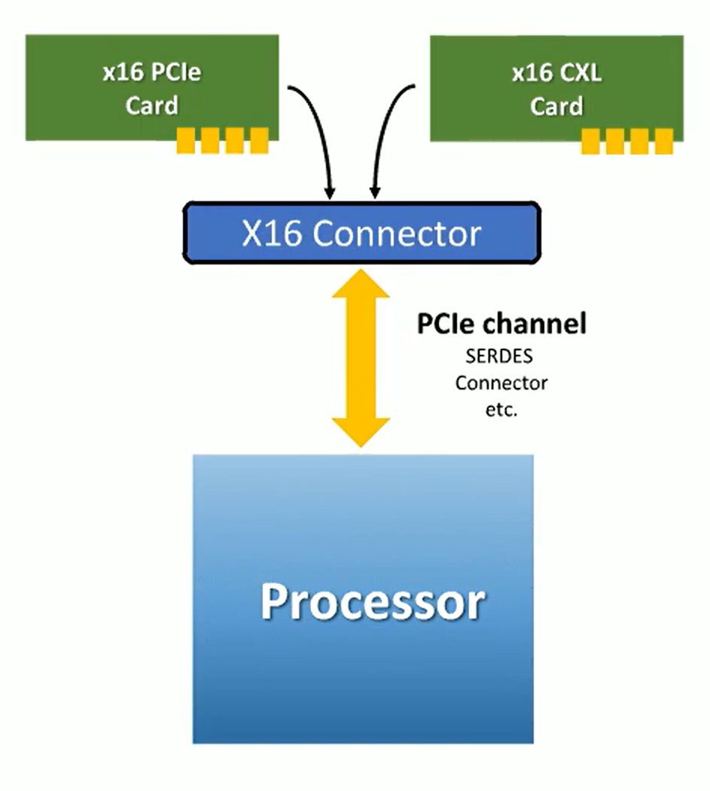
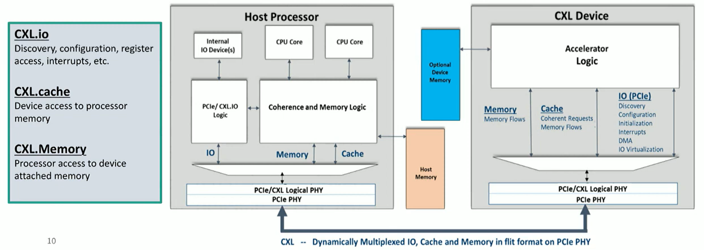
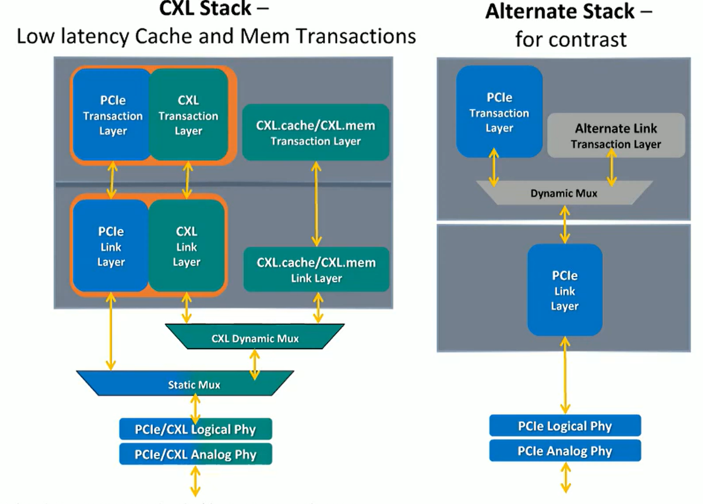
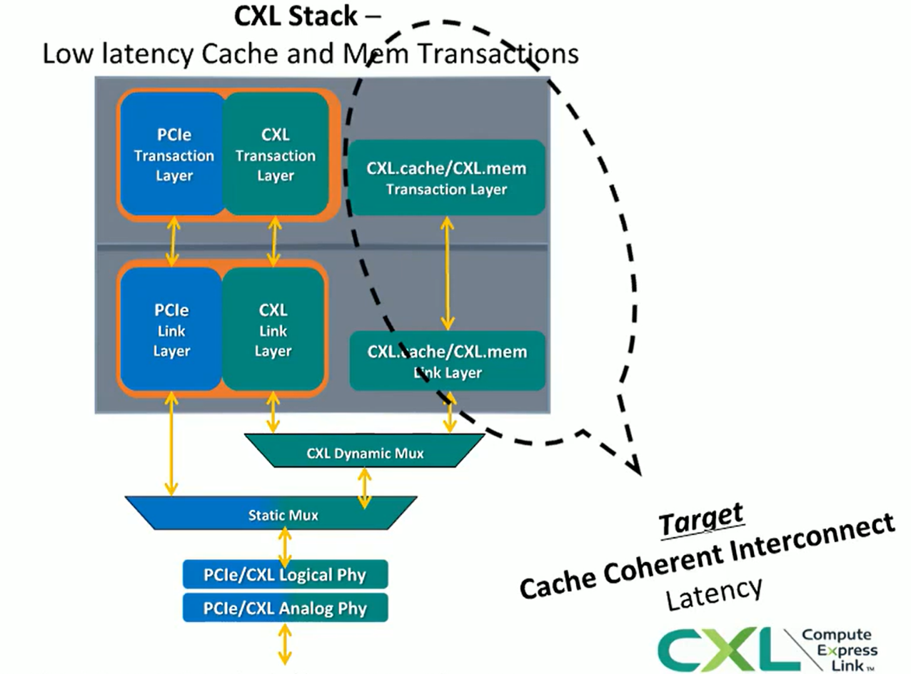
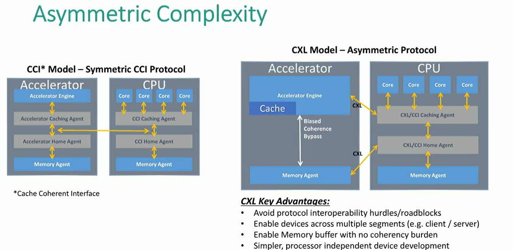
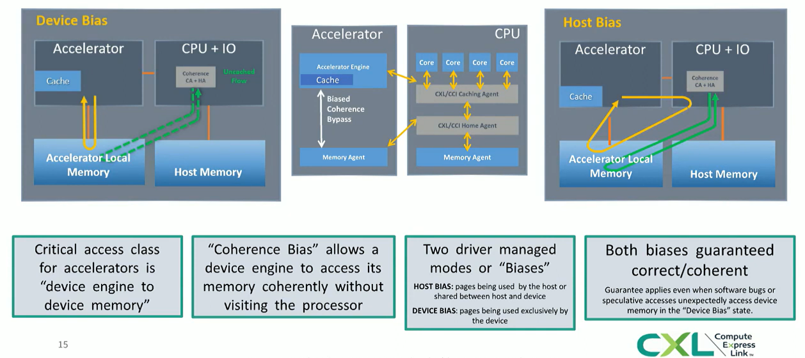
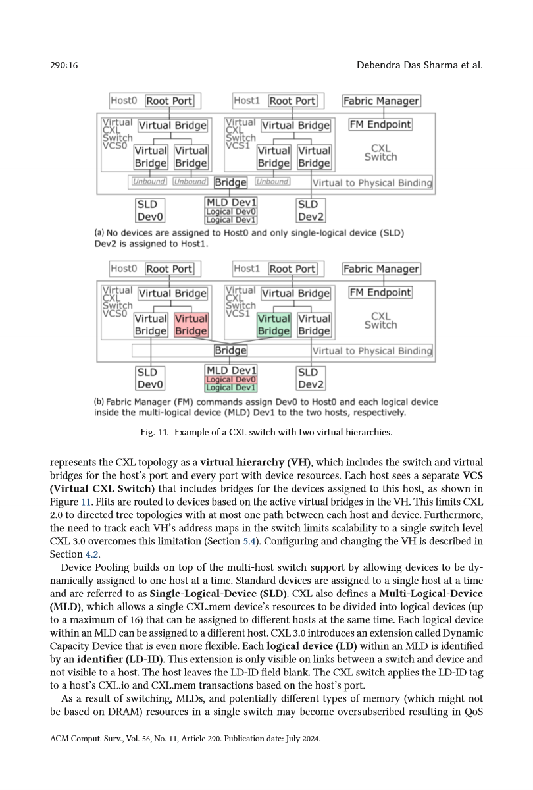
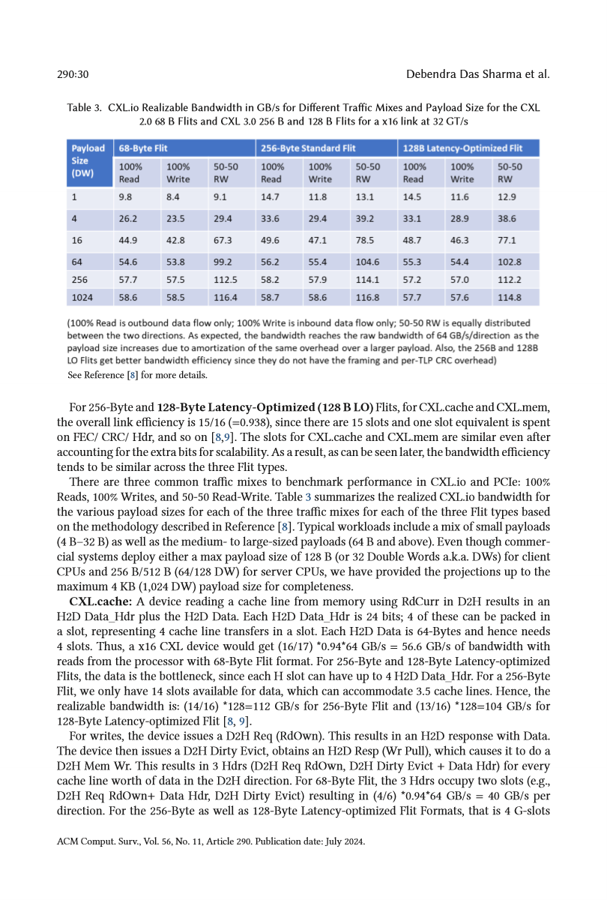

The compute landscape is being reshaped by several simultaneous forces. Cloud computing has become the default deployment substrate for the industry. At the same time, networking and edge computing are exploding in scale, both of which increasingly rely on cloud infrastructure. AI and analytics workloads are continuously pushing the demand for faster, larger-scale data processing. All of these trends converge on one outcome: the need for dramatically faster movement and processing of data.
No single type of compute wins across every workload. Modern platforms increasingly mix general-purpose CPUs, GPUs and GPGPUs, custom ASICs, and FPGAs. Each category of compute has enough volume to justify its own specialized design, which has historically led to fragmented, proprietary interconnects for each segment. The real-world consequence is that platforms now deploy a combination of these compute types within a single system, and that combination demands a common way for heterogeneous devices to communicate with each other and with memory efficiently. Providing that common ground is the central purpose of CXL.
Demand for more memory capacity and more memory bandwidth is not new, but it has reached a point where existing mechanisms are no longer sufficient. In parallel, significant technical innovation in Storage Class Memory (SCM) has produced memories that approach DRAM-like latency and bandwidth while retaining non-volatile, persistent characteristics. This places a new memory tier between traditional DRAM and solid-state storage. The value proposition of this tier is its combination of capacity and persistence — for example, an entire database can be held in this memory tier, making access dramatically faster than storage-class alternatives. Software frameworks and hardware interconnects need to evolve to exploit this tier effectively.
Heterogeneous compute and memory are the two foundational elements driving the evolution of the computing landscape. CXL was defined ground-up to address both, and is intended to sustain that demand for years to come.
PCI Express is the ubiquitous interconnect technology, spanning the entire computing spectrum from handheld and laptop devices to desktops, servers, and communications infrastructure. CXL is built on top of the PCIe infrastructure — it runs on the PCIe physical layer (PHY) and uses the same channels. Rather than defining a new physical medium, CXL overlays its cache and memory protocols on top of the existing PCIe foundation.
Today a typical system has two fundamentally different kinds of memory. Memory attached directly to the CPU is part of the coherent memory space, meaning it is write-back cacheable and hardware guarantees data consistency across all caches. Memory attached to a PCIe device, on the other hand, is mapped as Memory-Mapped I/O (MMIO). MMIO space is not cacheable by the CPU — PCIe is a non-coherent interface. This means every CPU access to device-attached memory must be an explicit load or store that crosses the link to the device and back, with no caching benefit.
When an I/O device wants to write to host memory, it sends that write over PCIe where it arrives at the CPU's root port. The root port acts as a write cache: it fetches the relevant cache line, performs the write, and later does a write-back. In doing so, the root port performs a protocol conversion — it honors PCIe's producer-consumer ordering on the I/O side while simultaneously satisfying the CPU's cache coherency model. Device-to-device memory access follows a similar pattern via PCIe peer-to-peer transactions.
The producer-consumer model of PCIe works extremely well for bulk data transfers, such as those involved with traditional storage or networking interfaces. It has very good bandwidth efficiency and is backed by decades of accumulated software. That model must be preserved because it serves a vast number of use cases extremely effectively.
The model breaks down, however, for a growing class of accelerators that want fine-grained, low-latency sharing of data with the processor. For these devices, the existing PCIe mechanism needs to be augmented in two ways. First, devices need the ability to cache system memory coherently, just as CPU cores do. Second, memory attached to a device needs to be mappable into the cacheable address space so that any CPU core or any other coherency-capable device can cache it locally. Without these capabilities, the platform cannot efficiently support collaborative processing between heterogeneous compute elements.
The industry requires an open, standards-based interconnect that augments the existing PCIe infrastructure by bringing coherency semantics to the I/O side and placing device-attached memory in the cacheable address space. The outcome of this is efficient resource sharing, enhanced movement of operands between compute entities, significant latency reduction, and the ability to form aggregated memory pools across the system.

CXL is a high-speed, low-latency CPU-to-device and CPU-to-memory interconnect. It is built on PCI Express 5.0 and operates at 32 gigatransfers per second (GT/s). It supports up to 16 lanes (x16), which gives 512 Gb/s of bandwidth per direction on a x16 link — approximately 1 Tb/s aggregate bidirectional bandwidth per device. It maintains memory coherency between the CPU memory space and memory attached to devices, and it is designed from the ground up for low latency rather than having latency reduction retrofitted after the fact.
Looking at a data center from the outside in, a data center contains racks of servers. Each server is a single domain or single node. Within that node, the interconnects that exist today are CPU-to-CPU symmetric coherency links (which are vendor-proprietary and used to build two-socket, four-socket, and eight-socket systems), memory interfaces, and PCI Express. CXL occupies the same in-node space, acting as the coherency-capable alternative for the device and memory side of the platform.
One of CXL's most practically important properties is that it shares the same physical slot as PCIe. A processor exposes ports — for example, a x16 connector — and into that same connector you can insert either a PCIe x16 card, which will operate as plain PCIe, or a CXL card, which will operate as CXL. The negotiation between the two is handled automatically during link bring-up.
This matters enormously for platform economics. A platform builder does not know in advance how many PCIe versus CXL cards a particular customer will deploy. Requiring dedicated CXL-only slots alongside dedicated PCIe slots would be prohibitively expensive, as each slot adds cost to the platform. With fungible slots, a platform with ten connectors can accommodate any mix of PCIe and CXL devices, lowering platform cost and enabling plug-and-play deployment.
A CXL device begins negotiating at PCIe Gen 1 speed, which is 2.5 GT/s, using the standard 8b/10b link training sequence defined by PCIe. During the configuration phase — before the link is fully established — the device advertises its CXL capability using PCIe's alternate protocol advertisement mechanism. If both ends of the link support CXL, the link switches over to CXL operation even before Gen 1 link training completes. If the other side supports only PCIe, the negotiation proceeds normally and the link comes up as a standard PCIe port. All latency optimization features specific to CXL are negotiated up front during this same 2.5 GT/s configuration phase.
CXL 1.1 is the initial stable specification. CXL 2.0 is actively being developed by the consortium. CXL is intended to be a living interconnect standard that keeps evolving. Since CXL runs on PCIe infrastructure, its growth is tied closely to the PCIe roadmap — PCIe roughly doubles bandwidth every generation, and CXL is expected to be one of the key drivers that pushes the industry toward the next PCIe data rate.
CXL multiplexes three distinct protocols across a single physical link. Each protocol serves a different role, and only one of the three is mandatory.

CXL.io is essentially identical to PCI Express at the protocol level. It handles all the functions that PCIe handles today: device discovery, configuration, register access, interrupt delivery, virtualization, and traditional bulk DMA following the producer-consumer ordering model. Every CXL device must implement CXL.io, which is what ensures that a CXL device can still interoperate correctly with a PCIe host if CXL negotiation does not occur.
CXL.cache allows the device to cache system (host) memory in a coherent and low-latency manner. With this protocol, the device behaves as a caching agent in the platform coherency domain — it can hold cache lines from host memory, issue requests for ownership, respond to snoops, and write back modified lines. This is what allows a device to participate in the same fine-grained data sharing that CPU cores engage in with each other.
CXL.mem allows the host processor — as well as any other CXL device that implements CXL.cache — to access device-attached memory coherently. With this protocol, memory sitting on the device side becomes addressable by the host and can be placed in the cacheable memory space rather than MMIO space.
The CXL.io stack on both the host and device sides is fully leveraged from the PCIe stack, which is what enables interoperability between PCIe and CXL devices on the same slot. CXL.cache and CXL.mem are distinct from CXL.io — they go through an independent link-layer stack and are multiplexed at the physical layer. The rationale for this structural choice is explained in the next chapter.

CXL defines the flit (flow control unit) as the atomic granularity of data transfer on the link. A CXL flit is 528 bits in size — note that this is bits, not bytes. Within those 528 bits, 16 bits are dedicated to CRC for the cache and memory stacks. The physical layer adds a further 16 bits to each flit: these bits disambiguate which protocol stack the flit belongs to and carry physical layer link-control signaling. All three protocols — CXL.io, CXL.cache, and CXL.mem — are multiplexed as flits on the PCIe 5.0 physical link.
Because all three protocols share the same physical link, CXL must be able to interleave latency-sensitive cache and memory traffic with bulk I/O traffic. It accomplishes this through flit-boundary interruption. Consider a CXL.io transaction carrying a 512-byte payload that is mid-transmission. If a latency-sensitive CXL.cache flit becomes ready, CXL allows the ongoing CXL.io transmission to be interrupted at the next flit boundary — after the current 528-bit flit completes. The cache flit is then sent immediately, and transmission of the CXL.io payload resumes from where it was paused. This ensures that short, time-critical cache traffic is never delayed by a long bulk I/O transaction.
CXL follows standard protocol layering with clear delineation of functionality between layers. Each layer has a well-defined, independent set of responsibilities. This is the same structural discipline that PCIe uses.
For CXL.io traffic, both the link layer and the transaction layer are fully leveraged from PCIe without changes to the core semantics. CXL.io follows PCIe's crediting mechanism, Transaction Layer Packet (TLP) ordering rules, Data Link Layer Packet (DLLP) handling, CRC, and link-level retry mechanism. The only additions CXL makes on top of this are extra virtual channels for enforcing Quality of Service, and the mechanical ability to break a CXL.io packet at a flit boundary so that cache and memory traffic can be inserted.
CXL.cache and CXL.mem share a common link layer that is separate from the CXL.io link layer. This shared stack is inherently flit-based, uses credits to manage transaction flow, and is governed by a CXL arbitration and multiplexing mechanism (sometimes called the CXL dynamic MUX) that sits across both stacks. The multiplexing between CXL.io on one side and the cache/mem stack on the other side occurs at the physical layer.
The decision to multiplex at the physical layer rather than the transaction layer was deliberate and has two related justifications.
The first is latency. PCIe was designed to carry variable-length payloads, so its link layer and physical layer framing require many pipeline stages to handle that variability — and each pipeline stage adds latency. CXL.cache and CXL.mem, by contrast, are designed from the ground up around fixed-size flits. A separate link-layer stack optimized for fixed flits can be far leaner than the PCIe stack, yielding substantially lower latency for cache and memory transactions.
The second is head-of-line blocking. If cache and memory traffic were multiplexed at the transaction layer through PCIe virtual channels, a latency-sensitive cache transaction — such as a snoop — could be stuck behind a 512-byte CXL.io payload waiting to drain. By multiplexing at the physical layer and allowing flit-boundary interruption, CXL ensures that cache and memory traffic can always cut ahead of large I/O payloads at the finest possible granularity.

CXL targets latencies in the range of existing CPU-to-CPU symmetric cache coherency links for its cache and memory traffic. This is significantly lower than what PCIe achieves for equivalent operations. The specification provides recommended maximum latencies as guidance for device implementors.
For CXL.cache, the recommended maximum snoop-miss latency measured pin-to-pin — that is, from when the snoop is sent to a device to when the snoop-miss response appears on the link — is approximately 50 nanoseconds. For CXL.mem, the recommended maximum latency from a memory read request to when data is returned on the pin, for HBM or DDR class memory, is approximately 80 nanoseconds. These figures are in the same range as the latencies found in CPU-to-CPU coherency interconnects within a multi-socket system.
CXL explicitly allows devices with inherently slower memory — for example, a memory device whose internal DRAM access latency is in the 30 to 40 nanosecond range — to exceed these recommended latencies without violating the specification. What CXL provides in this case is a reporting mechanism: the device can declare that its memory is slower than the recommended targets. Platform software can then use this information to map workloads to the appropriate memory tier, preventing performance-sensitive applications from being placed on slower memory without their knowledge. This reporting mechanism is the hardware foundation for software-managed memory tiering.
Two specific optimizations are defined. The first is a drift buffer that can be used when both ends of the link share a common clock, eliminating the buffering overhead associated with clock domain crossing. The second is sync header bypass, which allows the physical layer sync header to be skipped entirely when all components on the link advertise support for it. Both optimizations are negotiated during the 2.5 GT/s configuration phase at link bring-up.

CXL is a fundamentally asymmetric protocol. Protocol flows and message classes are different on the host side versus the device side. This is a deliberate architectural decision intended to keep device implementations simple and to ensure backward compatibility across multiple generations of CPU and device products.
The industry has extensive experience with symmetric cache coherency protocols — where both sides of a link must implement the full home agent and caching agent functionality. In practice, a vast majority of potential adopters are deterred from implementing such protocols by the combination of design complexity and validation effort. Beyond implementation difficulty, symmetric coherency protocols tend to evolve in non-backward-compatible ways over time. As a result, it is rarely the case that devices from different companies, or even different generations of devices from the same company, can interoperate correctly using a symmetric coherency protocol. CXL was deliberately designed to avoid this failure mode.
Every host processor must already implement a home agent — the logic that orchestrates cache coherency across all caching agents in the system. This includes maintaining coherency across CPU cores, managing the write cache within the root port for PCIe DMA, and coordinating coherency across CPU sockets in a multi-socket system. This home agent logic is deeply tied to the micro- architectural choices of a specific CPU design and changes from generation to generation, even within a single company.
CXL's approach is to leave the home agent entirely within the host processor where it already exists, and to define only the caching agent side for devices. The specification does not define how a home agent should work internally — it assumes any compliant CPU already has one. What it defines instead is the small, well-bounded set of transactions that a device-side caching agent must support: requesting a cache line in shared or exclusive state, writing back a modified line, and responding to snoops from the host. For pure memory devices, the abstraction goes even further — a CXL.mem device does not need to understand cache coherency at all. It simply provides data storage, returns data when requested, and may carry directory bit information to aid the host's coherency tracking. All coherency orchestration is handled by the host.
Because the device-side interface is simple and cleanly specified, a device built to CXL 1.1 can work correctly with a future CPU that has an updated home agent implementation, as long as the caching agent transaction set remains stable. Devices get the benefits of coherent memory access without bearing the burden of orchestrating coherency — which is the host's job and would require the device to change every time a new CPU generation is introduced.

Memory attached to a CXL device can be placed in one of two coherence bias modes, and it can move between them dynamically. The two modes correspond to the two dominant patterns of use: a device working heavily on its own local memory, and a host and device exchanging data collaboratively.
In device bias, the device-attached memory is mapped as MMIO space in the host's address map. The memory is not cacheable from the host's perspective. When the CPU needs to access that memory, it issues explicit uncached reads and writes across the link — the same pattern used for PCIe MMIO today. This mode is optimal when the accelerator is actively processing its local memory and does not need to share it with the host, since the device can access that memory directly without routing through the host coherency infrastructure.
In host bias, the device-attached memory is mapped into the system as write-back cacheable memory — it becomes part of the host's coherency space. In this mode, even the accelerator itself must route its accesses to its own local memory through the host. When the accelerator issues a request, the host's home agent processes it, determines that the data resides in the accelerator's attached memory, retrieves it using CXL.mem semantics, and delivers it to the accelerator using CXL.cache semantics. This round trip through the host is the price paid for full coherence, and it is worthwhile when the host and device are collaboratively working on shared data.
A single device can simultaneously have portions of its memory in device bias and other portions in host bias. CXL defines flows for transitioning a memory range between the two modes at runtime — this is often called a bias flip. Critically, CXL provides a hardware-level safety guarantee: even if software fails to execute the correct sequence of operations when flipping bias — in other words, even if there is a software bug in the bias management code — the hardware will still guarantee that data remains consistent. No data corruption can result from a software error in bias management.
CXL defines three device types based on which combination of its three protocols a device implements. The choice of protocols reflects what the device is and what it needs to do.
Type 1 devices implement CXL.io and CXL.cache but do not implement CXL.mem. They do not have device-attached memory intended for host access; instead, they benefit from the ability to cache host memory coherently. The primary example is a SmartNIC, but any accelerator that needs fine-grained access to host memory falls into this category.
One important use case is a SmartNIC implementing Partitioned Global Address Space (PGAS). PGAS requires that memory operations be strongly ordered — a later write must not bypass a prior read for the same location. PCIe's producer-consumer model, however, mandates the opposite: posted transactions (writes) must be able to bypass non-posted transactions (reads) to prevent deadlock in the PCIe hierarchy. A PCIe-only SmartNIC implementing PGAS is forced to serialize its accesses on the device side to work around this, which carries a significant performance penalty. With CXL.cache, the SmartNIC can instead prefetch the relevant addresses into its local cache and retire transactions in order within its cache, achieving correct PGAS semantics with no serialization overhead.
A second use case is advanced atomic operations. Applications increasingly require atomic operations beyond what standard I/O semantics provide — for example, floating-point atomics. Standardizing each new atomic variant through the entire I/O stack takes years and still cannot satisfy every device's needs efficiently. With CXL.cache, a device can simply request exclusive ownership of the relevant cache line and then implement whatever atomic operation it requires locally, with complete flexibility and no specification churn.
Type 2 devices implement all three protocols. They have local memory attached for their own computation, and they participate fully in the host coherency domain. The primary examples are GPGPUs and FPGAs used for dense computing workloads.
The combination of CXL.cache and CXL.mem allows these devices to exchange operands and results with the host processor and with other CXL devices without software involvement, without physically copying the entire data set across the link, and without passing explicit flags or synchronization tokens. The data simply moves through the coherent memory space as cache line transactions — the same mechanism that moves data between CPU cores in a multi-core processor. This is also where dynamic bias switching is most heavily used, as the device may need to transition memory ownership back and forth between itself and the host as a computation proceeds.
Type 3 devices implement CXL.io and CXL.mem but do not implement CXL.cache. They have no need to cache host memory; their purpose is to provide memory capacity to the host. The use cases are memory bandwidth expansion, memory capacity expansion, and storage class memory. Because a Type 3 device is purely a memory resource, it does not need to orchestrate or even understand cache coherency. The host's home agent handles all coherency; the device simply stores and returns data. This makes Type 3 devices comparatively straightforward to design and validate.
Physical Layer
Base standard: PCIe 5.0
Data rate: 32 GT/s
Maximum lane width: x16
Bandwidth (x16): 512 Gb/s per direction (~1 Tb/s aggregate)
Negotiation speed: 2.5 GT/s (PCIe Gen 1), 8b/10b encodingFlit Structure
Flit size: 528 bits total
CRC per flit: 16 bits (for cache and memory stacks)
PHY overhead per flit: 16 bits (stack disambiguation + link control)Latency Targets (recommended maximums, pin-to-pin)
Snoop miss (CXL.cache): ~50 ns Memory read to data return (CXL.mem): ~80 ns (for HBM or DDR class memory)
Think of CXL as a way to connect a device to a CPU so that the device is much more tightly integrated than a normal PCIe device. With plain PCIe, a device is essentially just an I/O device — software talks to it through registers, DMA transfers, and drivers. CXL changes that by allowing a device to do three things that PCIe cannot do:
CXL has three protocol layers. CXL.io handles configuration and control and is essentially the same as PCIe. CXL.cache lets the device cache host memory. CXL.mem lets the host access memory that physically lives on the device. Of these, CXL.io is mandatory on every CXL device; CXL.cache and CXL.mem are optional and their presence determines what type of device you have.
Before talking about CXL memory regions and cache regions specifically, it helps to understand what a region means in general.
A region is simply a range of addresses with a defined meaning. In a computer, one address range may map to local DDR memory, another to CXL device memory, and another to MMIO registers. A region is just the name for one of those address ranges and the rules that govern it.
When people say CXL memory region, they mean a range of system physical addresses that is backed by memory living on a CXL device, not on the motherboard DIMMs. When people say CXL cache region, they mean an address domain where a device is permitted to cache host memory coherently.
A CXL memory region is a portion of the host's physical address space that points to memory on a CXL device. In CXL terminology, this device-attached memory exposed to the host is called HDM, which stands for Host-managed Device Memory. The name captures the idea precisely: the memory physically lives on the device, but the host manages it and can address it as part of its coherent memory space.
Imagine a server with 512 GB of local DDR installed on the motherboard, plus a 1 TB memory card connected through a CXL slot. The operating system sees:
Address range A → local DDR
Address range B → CXL device memoryTo software, both are just memory. The difference is that range B physically resides on the CXL card. Range B is the CXL memory region.
There are four main reasons to want device memory mapped into the host address space in this way.
A CXL cache region is not about adding memory capacity. It is about defining an address domain where a device is permitted to cache host memory coherently.
Consider a device that needs to read or reuse the same data in host memory many times. Without CXL.cache, every access must travel across the link to host memory and back. With CXL.cache, the device can fetch those cache lines once, hold them in a local device-side cache, and continue operating on them without repeated link crossings — while remaining coherent with the CPU. If the CPU modifies the same cache line, CXL's coherency protocol ensures the device sees the updated value and vice versa.
Imagine an AI accelerator card that needs to repeatedly read model parameters stored in host DRAM. Without CXL.cache, it must fetch those parameters from host memory on every pass. With CXL.cache, it fetches them once into its local device cache and reuses them efficiently, with the coherency protocol ensuring the CPU and device never hold contradictory values for the same address.
CXL devices fall into three categories based on which protocols they implement.
A Type 1 device can coherently cache host memory but does not expose its own memory to the host. There is no CXL.mem. The typical example is a network accelerator or SmartNIC that needs coherent, efficient access to host RAM — for example, to implement Partitioned Global Address Space (PGAS) ordering without the performance penalties that a plain PCIe approach would require, or to perform advanced atomic operations on host memory cache lines without going through the full I/O stack.
A Type 2 device implements CXL.io, CXL.cache, and CXL.mem. It has its own onboard memory and it participates fully in the host coherency domain. The typical example is a GPGPU or an AI accelerator with local high-bandwidth memory. The device can cache host memory for efficient input access, and the host can access device memory directly for reading results or writing inputs. This is the most capable and complex device type, and it is where bias switching between device bias and host bias is most heavily used.
A Type 3 device is a pure memory device. It implements CXL.io and CXL.mem but not CXL.cache. Its entire purpose is to provide memory capacity to the host. The device does not cache host memory and does not need to understand cache coherency — it simply stores data and returns it when asked. The host's home agent handles all coherency management. The typical example is a CXL memory expansion card with one terabyte of DRAM, which the operating system sees as an additional memory range.
Not all CXL memory behaves the same way with respect to coherence. CXL.mem defines three coherence models for HDM regions, each appropriate for different device types and use cases.
HDM-H is used by Type 3 devices. It is the simplest model. The host is the only coherent manager of this memory. The device itself is not actively caching or manipulating cache lines — it is simply storing data and responding to host reads and writes. This is the easiest case to understand and covers the pure memory-expander scenario.
HDM-D is used by Type 2 devices that use CXL.cache to maintain coherence with the host. In this model both the host and the device may cache and manipulate the memory, and coherence is maintained through the existing CXL.cache protocol flows. An accelerator with local memory that both the host and the device actively read and write would use this model.
HDM-DB can be used by Type 2 or Type 3 devices. It is a newer and more scalable coherence model where coherence is maintained through back-invalidate signaling rather than the older directory-based approach. For most learning purposes it is sufficient to understand that HDM-H covers simple memory expansion, and HDM-D / HDM-DB cover smarter, accelerator-style use cases where both sides actively cache and modify the memory.
A CXL memory region is created when firmware and software cooperate to say: "This range of host physical addresses should be backed by this CXL device's memory." That process involves four concrete steps: discovering the device, allocating address space, programming routing tables, and informing the operating system.
Boot Flow
using CXL.io, exactly the same way a PCIe device is discovered during enumeration.
registers to determine how much memory the device has, what HDM region types it supports (H, D, or DB), and what interleaving capabilities it offers.
addresses for that device memory. This range does not overlap with local DDR or any other device.
HDM decoders. These are programmed with the address range so that any CPU access to that range is routed across the CXL link to the correct device. Without the decoders, the hardware would not know where to send the access.
populated to tell the operating system that this address range is memory, what type of memory it is, what its NUMA topology is, and what performance characteristics to expect. The OS then incorporates this range into its memory management.
Creating cache behavior is less about adding an address range and more about establishing coherency permissions and protocol state. For CXL.cache to work, the system and device must agree that the device supports CXL.cache, the host bridge and root port support it, and the coherency infrastructure — including route tables and coherency IDs — is set up for that device. This negotiation happens during link bring-up, as described in the link-negotiation process: both sides advertise alternate protocol support at 2.5 GT/s and the link switches to CXL operation if both endpoints agree. After that, the device is a recognized coherency participant and can begin issuing cache-line requests against host memory.
Once a CXL memory region is established, the CPU and OS use it like any other memory range. If addresses 0x500000000 to 0x5FFFFFFFF map to CXL memory, then a CPU load or store to any address in that range is routed by the host bridge over the CXL link to the device, which returns the data from its local DRAM. To application software this looks like ordinary memory, with the only observable difference being potentially different latency and bandwidth characteristics compared to local DDR. The OS may expose this as a separate NUMA node so that applications and the kernel's memory allocator can place data in the appropriate tier.
When a device uses CXL.cache, it is the device — not the host — that initiates the memory access. Suppose a CPU owns a data buffer in host RAM. An accelerator needs to process that buffer. With CXL.cache, the accelerator sends cache-line requests across the CXL link, fetches the relevant lines into its local device cache, operates on them, and writes back any modifications. The CXL coherency protocol ensures that if the CPU also reads or modifies those same lines, both sides always see a consistent view. The accelerator behaves like another caching agent in the system — equivalent in coherency terms to another CPU core.
A server has limited DIMM slots. A CXL memory card with 512 GB of DRAM is plugged into a CXL slot. During boot, firmware discovers the card, allocates a new host physical address range for its 512 GB, programs the HDM decoders, and populates ACPI tables. The OS sees a new memory range and a new NUMA node. The system now has 512 GB more usable memory. This uses only CXL.mem and the HDM-H coherence model. The device never caches anything — it just stores data.
An AI inference card has compute engines and four gigabytes of high-bandwidth local memory. The card implements all three CXL protocols. During inference, the card uses CXL.cache to fetch model weights from host DRAM into its local cache and reuses them across many inference passes without re-fetching. At the same time, the host uses CXL.mem to map a portion of the card's local memory into the host address space so it can read completed inference results directly without a DMA transfer. This is a Type 2 usage: the device caches host memory, and the host accesses device memory, simultaneously.
A server has 256 GB of local DDR and 1 TB of CXL-attached memory from a Type 3 card. The OS treats local DDR as tier 0 (fast, expensive) and CXL memory as tier 1 (larger, potentially slightly higher latency). Hot pages — those accessed frequently — remain in DDR. Colder pages are migrated to CXL memory. To applications, all of this is transparent: they see a flat address space. The OS's memory tiering policy handles movement between the tiers.
Without the concept of regions, the CPU's memory controller and host bridge would have no way to determine where an access should go, which device owns a given address, what coherence model applies, whether interleaving across multiple devices is in use, or what latency and bandwidth to expect. Regions are the map that gives the hardware and software these answers. Without them, a CPU access to some physical address could refer to local DDR, a CXL Type 3 memory card, an accelerator's local memory, or an MMIO register space — and the system would have no way to route it correctly.
CXL.cache Device borrows and caches host memory. Used by accelerators that need efficient, coherent access to data that lives in host RAM.
CXL.mem Host uses memory that lives on the device. Used for memory expansion, memory tiering, and exposing accelerator memory to the host.
CXL memory region A host physical address range backed by CXL device memory. Created by firmware at boot by allocating address space, programming HDM decoders, and populating ACPI tables.
CXL cache region A coherency domain set up so that the device can coherently cache host memory. Created through CXL.cache protocol negotiation at link bring-up.
HDM-H Simple memory expander. Host-only coherent. Type 3 devices.
HDM-D Device and host share coherence. Type 2 devices, older model.
HDM-DB Device and host share coherence. Type 2 or 3, newer model. Type 1 CXL.io + CXL.cache. Device caches host memory. No device HDM.
Type 2 CXL.io + CXL.cache + CXL.mem. Accelerator with local memory.
Type 3 CXL.io + CXL.mem only. Pure memory expander.If you remember only two things:
Everything else — HDM types, device types, decoders, regions, bias modes — is the machinery that makes those two things work correctly and at scale.
Hardware: CPU with local DDR + one CXL Type 3 memory card
Protocols: CXL.mem only (Type 3 — no CXL.cache)
Region type: HDM-H (Host-only coherent — simplest memory expander case)
Local DDR: 256 GB → addresses 0x0000_0000_0000 to 0x003F_FFFF_FFFF
CXL memory: 512 GB → addresses 0x4000_0000_0000 to 0x47FF_FFFF_FFFF (assigned at boot)Goal: make the OS see the 512 GB CXL card memory as a usable address range.
Firmware (BIOS/UEFI) starts executing. The CXL card is physically present but no address window exists yet. No CXL memory is usable at this point.
Result: a live CXL link with CXL.io and CXL.mem enabled.
Firmware uses CXL.io (the PCIe-compatible control path) to:
CXL.io is used for all discovery, enumeration, management, and error reporting — even for a pure memory device.
From capability registers, firmware determines:
Firmware reads the device-reported memory size from CXL capability registers.
In this example: device reports 512 GB.
Firmware now knows it must allocate a 512 GB window in host physical address space for this device.
Firmware picks a host physical address range for the CXL device memory, making sure it does not overlap with local DDR or MMIO regions.
In this example: 0x4000_0000_0000 to 0x47FF_FFFF_FFFF (512 GB)
This chosen range is the CXL memory region — but hardware cannot route to it yet because no decode rules have been programmed.
On Intel platforms, firmware programs the host uncore's Source Address Decoder (SAD) rules. These tell the CPU:
Without this step, the CPU cannot distinguish local DDR from CXL memory.
HDM decoders are CXL-defined registers (in the host bridge and/or the device) that specify exactly how a host address range maps to a CXL device. Firmware programs each decoder with:
- Base address → 0x4000_0000_0000
- Size → 512 GB
- Region type → HDM-H
- Target → this Type 3 deviceFirmware then commits the decoder. The number of available decoders is read from capability registers. For a single device with no interleaving, one decoder entry is sufficient.
This is the concrete hardware act that creates the CXL memory region.
Firmware sets the CXL.mem Enable bit, activating the decode path. From this point, any CPU access to the HDM address range:
Firmware reads CDAT from the device. CDAT describes:
Firmware uses this data to populate ACPI SRAT and HMAT tables, which tell the OS how the CXL memory compares to local DDR in performance terms.
Firmware writes the following structures so the OS can find and use the CXL memory:
CFMWS (CXL Fixed Memory Window Structure) Describes the CXL memory window and its address range.
CXIMS (CXL Interleave Memory Structure) Describes interleave details if multiple devices are used.
SRAT (System Resource Affinity Table) Places the CXL address range in a memory-only NUMA node.
HMAT (Heterogeneous Memory Attribute Table) Describes latency and bandwidth so the OS can tier memory correctly.
The OS reads the ACPI tables and learns:
Depending on OS policy, the CXL range may be:
A CPU load or store to address 0x4000_1234_5678 follows this path:
To the application, this is indistinguishable from any other memory access.
No single step creates the region. It requires all of these together:
1. Link in CXL mode → physical path exists
2. CXL.io enumeration → firmware knows a CXL device is there
3. Type 3 / HDM-H identified → firmware knows it is a memory device
4. Memory size read → firmware knows how large the window must be
5. HPA range allocated → an address window is reserved
6. Host SAD rules programmed → CPU routes that range away from local DDR
7. HDM decoders committed → CXL hardware routes that range to the device
8. CXL.mem enabled → accesses are live and completing
9. ACPI tables published → OS knows the range exists and its propertiesIf any step is missing, the CXL memory region either does not exist or is not usable by the OS.
0x0000_0000_0000 → 0x003F_FFFF_FFFF Local DDR (256 GB)
0x4000_0000_0000 → 0x47FF_FFFF_FFFF CXL Type 3 memory (512 GB) Link training = building the road to the warehouse
CXL.io enumeration = finding the warehouse on a map
Memory size read = measuring how big the warehouse is
HPA allocation = assigning a street address range to the warehouse
SAD programming = telling the postal hub "this address range goes that way"
HDM decoder commit = updating the warehouse's own signage with its address
CXL.mem enable = opening the warehouse doors to deliveries
ACPI tables = publishing the address in the official city directory
OS boot = delivery trucks start using the routeBefore any card is inserted, BIOS prepares the system for future hot-plug by:
At cold boot, BIOS handles the early mapping for already-present devices.
In hot-add, software must do this work dynamically at runtime.
When a CXL card is physically inserted:
1. PCIe link comes up
2. PCIe/CXL hot-plug detects the new device
3. CXL-aware software discovers its capabilities
4. Software programs HDM decoders to map a reserved host address window to the device
5. OS memory manager is notified and onlines the new memory
Command: cxl list
Lists all CXL objects Linux currently sees: memory devices (mem0, mem1, ...),
decoders, ports, regions, and other topology objects.
[root@host mlc]# cxl list
[
{
"memdev":"mem0",
"ram_size":17179869184,
"numa_node":1,
"host":"0000:da:00.0"
}Command: cxl list -D -m mem0
Lists decoder objects available for creating a region on this memory device.
Each decoder controls what host address range maps to which device.
Unused decoders are unlocked by definition (per CXL spec) and can be claimed for hot-add.
Not every decoder is valid -- some may already be used, wrong type, wrong interleave
width, or incompatible with the device. Pick the right one based on:
volatile_capable = true --> DRAM / system RAM type region
pmem_capable = true --> persistent memory region
interleave_ways = 1 --> single device
interleave_ways = 2/4/... --> interleaved across multiple devices
The memory type of the region you create must match the decoder you choose.
[root@host mlc]# cxl list -D -m mem0
[
{
"root decoders":[
{
"decoder":"decoder0.9",
"resource":4151085891584,
"size":514322333696,
"interleave_ways":1,
"max_available_extent":514322333696,
"volatile_capable":true,
"nr_targets":1
},
{
"decoder":"decoder0.10",
"resource":4665408225280,
"size":2057289334784,
"interleave_ways":4,
"interleave_granularity":256,
"max_available_extent":2057289334784,
"volatile_capable":true,
"nr_targets":4
},
{
"decoder":"decoder0.16",
"resource":26802743410688,
"size":3090228969472,
"interleave_ways":1,
"max_available_extent":3090228969472,
"pmem_capable":true,
"nr_targets":1
}
]Command: cxl list -DT -d decoder0.10
cxl list -DT -d decoder0.10
[
{
"decoder":"decoder0.10",
"resource":277025390592,
"size":2175400935424,
"interleave_ways":2,
"interleave_granularity":256,
"max_available_extent":2175400935424,
"volatile_capable":true,
"nr_targets":2,
"targets":[
{
"target":"pci0000:d5",
"alias":"ACPI0016:08",
"position":1,
"id":83
},
{
"target":"pci0000:af",
"alias":"ACPI0016:06",
"position":0,
"id":67
}
]
}
]For an interleaved decoder, this shows the ordered target list, e.g.:
target position 0 --> port X
target position 1 --> port Y
target position 2 --> port Z
target position 3 --> port W
Order is critical. The decoder assigns address chunks by target position.
Providing memdevs in the wrong order causes wrong striping / wrong mapping.
Commands:
cxl list -M -p pci0000:af | jq -r ".[0].memdev" cxl list -M -p pci0000:d5 | jq -r ".[0].memdev"
The target list uses hardware port IDs, but create-region needs Linux memdev names.
Example translation:
target 0 --> port A --> mem2
target 1 --> port B --> mem0
target 2 --> port C --> mem3
target 3 --> port D --> mem1
Final order to use in the command: mem2 mem0 mem3 mem1
cxl list -M -p pci0000:af | jq -r ".[0].memdev" mem2 cxl list -M -p pci0000:d5 | jq -r ".[0].memdev" mem0 cxl list -M -p pci0000:af | jq -r ".[1].memdev" mem3 cxl list -M -p pci0000:d5 | jq -r ".[1].memdev" mem1
Command (single device):
cxl create-region -m mem0 -d decoder0.9
[root@host mlc]# cxl create-region -m mem0 -d decoder0.9
{
"region":"region9",
"resource":"0x3c680000000",
"size":"16.00 GiB (17.18 GB)",
"type":"ram",
"interleave_ways":1,
"interleave_granularity":256,
"decode_state":"commit",
"mappings":[
{
"position":0,
"memdev":"mem0",
"decoder":"decoder9.0"
}
]
}
cxl region: cmd_create_region: created 1 regionCommand (multi-device interleaved -- memdevs in target position order):
cxl create-region -d decoder10.0 -m mem2 mem0 mem3 mem1
This programs the HDM decoder with: base address, size, interleave ways,
target list, and memory type, then commits the configuration.
[root@host mlc]# cxl list -RXu -m mem0
{
"region":"region9",
"resource":"0x3c680000000",
"size":"16.00 GiB (17.18 GB)",
"type":"ram",
"interleave_ways":1,
"interleave_granularity":256,
"decode_state":"commit",
"daxregion":{
"id":9,
"size":"16.00 GiB (17.18 GB)",
"align":2097152,
"devices":[
{
"chardev":"dax9.0",
"size":"16.00 GiB (17.18 GB)",
"target_node":2,
"align":2097152,
"mode":"system-ram",
"online_memblocks":8,
"total_memblocks":8,
"movable":true
}
]
}After create-region succeeds, a region object appears (e.g. region9) showing:
The decoder is now active (Committed bit set). The address window routes to the
device(s) and Linux onlines the memory for use.
Note: Hot-plug systems leave LockOnCommit=0 so decoders can be reprogrammed
at runtime if needed.
KEY CONCEPTS
HDM Decoder - Hardware register that maps a host address range to a CXL device.
Contains: base, size, interleave ways, interleave granularity, target list.
After commit, the decoder is active and the address window is live.
Volatile - Region behaves like normal system RAM.
PMem - Region behaves like persistent memory.
Interleave - Address space is striped across multiple devices for bandwidth.
Target position order in the decoder determines which device gets which
chunk. Wrong order = wrong striping = data goes to the wrong device.
Here is your complete whiteboard master plan. It is structured in 7 progressive whiteboard panels designed to be drawn in real time.
Each panel includes:
┌────────────────────────────────────────────────────────────────────────────────────────────────────────┐ │ WHITEBOARD PANEL PROGRESSION │ ├────────────────────────────────┬──────────────────────────────────────┬────────────────────────────────┤ │ Board 1: The SoC Baseline │ Board 2: The Physical Bridge │ Board 3: The Flit Containers │ │ (CA, HA, Directory, DDR5 DIMM) │ (Parallel DDR vs. Serial CXL SerDes) │ (68B & 256B Bitfield Layouts) │ ├────────────────────────────────┼──────────────────────────────────────┼────────────────────────────────┤ │ Board 4: Type 3 Memory Flow │ Board 5: CXL.cache Inversion │ Board 6: CXL 3.0 BI Revolution │ │ (11 CXL.mem Transactions) │ (Host HA vs. Device CA, 39 Opcodes) │ (HDM-D Bias vs. HDM-DB BISnp) │ ├────────────────────────────────┴──────────────────────────────────────┴────────────────────────────────┤ │ Board 7: The Grand Finale — P2P Direct Memory Flow Across a Switch Fabric │ └────────────────────────────────────────────────────────────────────────────────────────────────────────┘
┌──────────────────────────────────────────────┐
│ SoC DIE │
│ │
│ ┌──────────────┐ ┌──────────────┐ │
│ │ Core 0 (CA0) │ │ Core 1 (CA1) │ │
│ │ [L1 / L2] │ │ [L1 / L2] │ │
│ └──────┬───────┘ └──────┬───────┘ │
│ │ │ │
│ ═════════╪═══════════════════════╪══════════ │ ◄── On-Die Coherent Mesh
│ │ │ │
│ ▼ ▼ │
│ ┌──────────────────────────────────────┐ │
│ │ Home Agent (HA / CHA Slice) │ │
│ │ ┌────────────────────────────────┐ │ │
│ │ │ Directory / Snoop Filter (SF) │ │ │
│ │ │ Line A: State=M | Owner=Core 1 │ │ │
│ │ └────────────────────────────────┘ │ │
│ └──────────────────┬───────────────────┘ │
│ │ │
│ ▼ │
│ ┌──────────────────────────────────────┐ │
│ │ Integrated Memory Controller (iMC) │ │
└───┴──────────────────┬───────────────────┴───┘
│ ~300+ Parallel Motherboard Pins
│ (ACT, PRE, RD, CAS, DQ/DQS)
▼
┌─────────────────────┐
│ DDR5 DIMM Rank │
│ (DRAM Banks/Rows) │
└─────────────────────┘*"Before we can understand CXL, we have to look at the two distinct jobs an SoC performs every nanosecond: coherency tracking and media scheduling.
When Core 0 needs to write data, it doesn't talk directly to memory. Its Caching Agent (CA) asks the Home Agent (HA), which owns the directory entry for that physical address. The Home Agent snoops Core 1, invalidates Core 1's cache, grants Core 0 exclusive Modified (M) state, and only then updates main memory via the Integrated Memory Controller (iMC).
Notice how the CPU talks to the DIMM: it uses a parallel analog bus with 300+ pins driving raw JEDEC commands like ACTIVATE and PRECHARGE. But CPUs are running out of physical socket pins. This brings us to Board 2."*
CPU Core Pipeline (L1/L2 Miss)
│
┌──────────┴──────────┐
│ SAD Decoder │
│ (System Address Map)│
└──────────┬──────────┘
│
┌───────────────────────┴───────────────────────┐
SPA in Local DDR5 Range SPA in CXL Window (HDM)
│ │
▼ ▼
┌─────────────────────────┐ ┌─────────────────────────┐
│ Integrated MC (iMC) │ │ CXL Root Controller │
└────────────┬────────────┘ └────────────┬────────────┘
│ Parallel Pins │ High-Speed SerDes
│ (ACT, CAS, RD) │ (68B / 256B Flits)
▼ ▼
┌──────────────────┐ ┌───────────────────┐
│ Direct DDR5 DIMM │ │ CXL Type 3 Device │
│ (Unbuffered DRAM)│ │ (On-Board ASIC) │
└──────────────────┘ └─────────┬─────────┘
│ Local DDR Bus
▼
┌───────────────────┐
│ Local DRAM Media │
└───────────────────┘*"When an assembly instruction like MOV RAX, [RDI] executes and misses in cache, the System Address Decoder (SAD) looks at the physical address.
If it's a standard address, it goes left to the iMC, issuing analog JEDEC strobes with ~60ns latency.
But if that address belongs to a CXL memory range, the datapath splits to the right! The CPU doesn't control the DRAM timings anymore. Instead, the CPU's CXL controller packages the request into a serial protocol packet called a FLIT and fires it over PCIe SerDes lanes. An ASIC controller on the CXL card unpacks the flit and talks to its own local DRAM. That serial transformation costs ~50ns, but it breaks the pin-count wall and gives us terabytes of expandable memory."*
Draw these two horizontal packet formats side-by-side to show the audience the exact bitfields.
A. CXL 1.1 / 2.0: 68-Byte Flit (PCIe Gen5 @ 32 GT/s) +-------------------+-------------------+-------------------+-------------------+--------+--------+ | Slot 0 (16B) | Slot 1 (16B) | Slot 2 (16B) | Slot 3 (16B) | Hdr 2B | CRC 2B | | [Valid|Opcode|Tag]| [Valid|Opcode|Tag]| [Valid|Opcode|Tag]| [Valid|Opcode|Tag]| (64-65)| (66-67)| +-------------------+-------------------+-------------------+-------------------+--------+--------+ * OR a single 64-Byte Data Payload (Bytes 0-63) + 2B Header + 2B CRC. * NOTE: A write requires TWO separate flits (1 Header Flit + 1 Data Flit)!
B. CXL 3.x: 256-Byte Flit (PCIe Gen6/7 @ 64+ GT/s PAM4) +--------+-------------------------------------------------------------+--------+--------+ | Hdr 2B | 240-Byte Protocol & Data Payload Area | CRC 8B | FEC 6B | | (0-1) | (Bytes 2 to 241: Packed with G-Slots, H-Slots, & Data) | (64b) | (48b) | +--------+-------------------------------------------------------------+--------+--------+ * ATOMIC WRITE: Header Slot (16B) + 64B Data payload fit in ONE single flit! * Addressing expanded to 52-bit (Addr[57:6]) + 12-bit Port Routing (DPID/SPID).
┌───────┬────────────┬─────────────┬─────────────────┬────────────┬──────────┐ │ Valid │ Opcode[4:1]│ Tag [20:5] │ Addr[57:6] │ DPID[12b] │ Meta[4b] │ │ (1b) │ (4b / 5b) │ (12b / 16b) │ (46b or 52b) │ (Port ID) │ (Bias) │ └───────┴────────────┴─────────────┴─────────────────┴────────────┴──────────┘
*"Every single transaction we discuss is physically encapsulated into one of these two containers.
In 68B Flits (CXL 1.1/2.0), an All-Control flit contains four 16-byte slots protected by a 16-bit CRC. If you perform a write, you have to send a Header Flit first, then a separate 64B Data Flit.
In 256B Flits (CXL 3.0), we run over PCIe Gen6 PAM4. We have 240 bytes of payload protected by heavy Reed-Solomon FEC and 64-bit CRC. Because the container is so big, we can pack the Write Command slot and the 64-byte Data payload into the very same flit, cutting latency and boosting efficiency. Notice the slot fields: Valid bit, Opcode, Tag, 52-bit Address, and the 12-bit Destination Port ID for network switches."*
Draw the host-to-device timeline to illustrate the 4 primary memory flows (Read, Write, Partial Write, Error).
Host Memory Controller Type 3 Memory Expander
│ │
│ ══════════════ 1. STANDARD READ ═════════════════ │
│ │
│ ── 1. M2S Req: MemRd (Opcode=0000b, Tag=0x4A) ──► │
│ ◄─ 2. S2M DRS: MemData (Opcode=100b, Tag=0x4A) ── │ ◄── Returns 64B Line
│ │
│ ══════════════ 2. STANDARD WRITE ════════════════ │
│ │
│ ── 3. M2S RwD: MemWr (Opcode=0100b) + 64B Data ─► │
│ ◄─ 4. S2M NDR: Cmp (Opcode=0000b, Tag=0xB2) ───── │ ◄── Write Committed
│ │
│ ══════════════ 3. PARTIAL WRITE ═════════════════ │
│ │
│ ── 5. M2S RwD: MemWrPtl + BE[63:0] (Byte Mask) ─► │ ◄── Read-Modify-Write
│ ◄─ 6. S2M NDR: Cmp (Opcode=0000b) ─────────────── │
│ │
│ ══════════════ 4. OUT-OF-BOUNDS ERROR ═══════════ │
│ │
│ ── 7. M2S Req: MemRd (Bad Physical Address) ────► │
│ ◄─ 8. S2M DRS: MemData-NXM (ErrStatus=10b) ────── │ ◄── Poison / Abort*"Let's look at CXL.mem. A Type 3 device has no cache—it's pure slave memory.
Draw the architectural parallel between the SoC mesh and an external Type 2 accelerator.
HOST CPU (Home Agent) ACCELERATOR CARD (Caching Agent)
┌────────────────────────────────────────┐ ┌────────────────────────────────────────┐
│ Host Home Agent (CHA / Directory) │ │ Device Caching Agent (D-CA) │
│ Tracks: Core 0, Core 1, AND Device! │ │ Manages: Local Accelerator Cache │
└───────────────────┬────────────────────┘ └───────────────────┬────────────────────┘
│ │
│ ══════════════ SCENARIO 1: READ SHARED ══════════ │
│ │
│ ◄── 1. D2H Req: RdShared (Opcode=00010b, CQID) ── │ (GPU cache miss)
(Directory ➔ S) │ ─── 2. H2D Data: 64B Data Payload ──────────────► │
│ ─── 3. H2D Rsp: GO (Grant State = Shared) ──────► │ (Fills GPU cache)
│ │
│ ══════════════ SCENARIO 2: DIRTY EVICTION ═══════ │
│ │
│ ◄── 4. D2H Req: DirtyEvict (Opcode=01010b) ────── │ (GPU evicting dirty)
│ ─── 5. H2D Rsp: WritePull (Opcode=1001b) ───────► │ (Host ready for data)
│ ◄── 6. D2H Data: 64B Modified Data Payload ────── │ (Data committed)
│ │
│ ══════════════ SCENARIO 3: HOST SNOOP INVALIDATE ═│
│ │
(CPU wants to write)│ ─── 7. H2D Snp: SnpInv (Opcode=0010b, SQID) ────► │ (Invalidate local)
│ ◄── 8. D2H Rsp: RspIHitSE (Opcode=0010b) ──────── │ (Ack: dropped copy)*"Now let's look at CXL.cache. Here is the core insight: The Host Home Agent treats the accelerator card as just another core on the die.
Show why CXL 3.0 abolished CXL 2.0 "Bias Flips" for Type 2 device memory (HDM-DB).
OLD: CXL 2.0 (Bias-Based / HDM-D) NEW: CXL 3.0 (Back-Invalidation / HDM-DB) ───────────────────────────────── ───────────────────────────────────────── Host owns all snoop authority Device is the Home Agent for its own memory!
┌────────┐ Software Bias-Flip ┌────────┐ ┌────────┐ S2M BISnp: BISnpInv ┌────────┐
│ Host │ ◄───────────────────► │ Device │ │ Host │ ◄────────────────────────── │ Device │
│ CPU │ (Slow 4KB Page) │ (Type2)│ │ CPU │ ──────────────────────────► │(Home/SF│
└────────┘ └────────┘ └────────┘ M2S BIRsp: BIRspI └────────┘
Heavy stalls, coarse granularity. Hardware-speed, 64-Byte Cacheline Granular!NEW CXL 3.0 BI OPCODES:
┌────────────────────────────────────────┬────────────────────────────────────────┐
│ S2M BISnp (Device ➔ Host Snoops) │ M2S BIRsp (Host ➔ Device Responses) │
├────────────────────────────────────────┼────────────────────────────────────────┤
│ • BISnpCur (Snapshot snoop) │ • BIRspI (Invalidated clean line) │
│ • BISnpData (Downgrade to Shared) │ • BIRspS (Downgraded to Shared) │
│ • BISnpInv (Force Invalidation) │ • BIRspData (Dirty Data writeback) │
│ • BISnp*Block (Multi-line bulk) │ • BIRsp*Blk (Bulk acknowledgment) │
└────────────────────────────────────────┴────────────────────────────────────────┘*"In CXL 1.1 and 2.0, an accelerator with local memory (HDM-D) suffered from an asymmetry: the device could NOT snoop the CPU. To access its own memory, it had to request a Bias Flip at 4KB page granularity, causing huge software latency.
The device memory controller now has its own hardware Snoop Filter. When the accelerator wants to write to its attached memory, it issues S2M BISnp (like BISnpInv) upstream to the Host CPU. The Host snoops its L1/L2/L3 caches, invalidates the line, and returns M2S BIRsp: BIRspI.
This is symmetric, hardware-speed, 64-byte cacheline coherency—and it brings multi-line block snoops (BISnpInvBlock) for bulk tensor operations."*
Draw this complete end-to-end system diagram showing an Accelerator (Initiator) writing to a remote Memory Pool (Target) while snooping the Host.
┌───────────────────────────┐
│ Host CPU │
│ (Holds cached copy in │
│ L1/L2/L3 Core Cache) │
└─────────────▲─────────────┘
│
2. S2M BISnp │ 3. M2S BIRspData
(Snoop Host) │ (Flush Dirty Line)
│
┌───────────────────────┴───────────────────────┐
│ CXL 3.0 Switch Fabric (PBR) │
└───────▲───────────────────────────────▲───────┘
│ │
1. P2P MemWr │ │
(SPID=01,DPID=02)│ │
│ │
┌──────────────┴───────────────┐ │
│ Device A: Initiator GPU │ │
│ (Port ID = 0x01) │ │
└──────────────────────────────┘ │
▼
┌───────────────────────────────┐
│ Device B: Target HDM / GFAM │
│ (Port ID = 0x02) │
│ ┌──────────────────────────┐ │
│ │ Internal Snoop Filter │ │
│ └──────────────────────────┘ │
│ ┌──────────────────────────┐ │
│ │ DRAM / Memory Media │ │
│ └──────────────────────────┘ │
└───────────────────────────────┘
4. Direct Completion (Device B ➔ Device A)*"Here is how everything we discussed comes together in a modern CXL 3.0 datacenter:
Look at this Peer-to-Peer direct memory flow:
Zero data bytes ever bounced through the Host CPU. The Host was only touched for a lightweight snoop handshake, and the entire fabric operated coherently at 64 GT/s. That is the power of the CXL 3.0 protocol."*
Keep this small cheat-sheet handy on your podium notes:
Table 26.1: Keep this small cheat-sheet handy on your podium notes
| Topic / Channel | Key Acronyms / Opcodes to Write on Board |
|---|---|
| SoC Coherency | CA (Caching Agent), HA/CHA (Home Agent), SF (Snoop Filter), MESIF |
| 68B Flit (CXL 1.1/2.0) | 4 x 16B Slots + 2B Hdr + 2B CRC-16 (Separate Header & Data Flits) |
| 256B Flit (CXL 3.x) | 2B Hdr + 240B Payload + 8B CRC-64 + 6B FEC (Atomic Command + 64B Data) |
| CXL.mem Opcodes | MemRd, MemWr, MemWrPtl (BE[63:0]), Cmp, MemData, MemData-NXM |
| CXL.cache Opcodes | RdShared, RdOwn, DirtyEvict ➔ WritePull, SnpInv, RspIHitSE, GO |
| Back-Invalidation (BI) | S2M BISnp (BISnpInv, BISnpData) ➔ M2S BIRsp (BIRspI, BIRspData) |
| Fabric / P2P | PBR (Port-Based Routing), SPID (Source Port), DPID (Dest Port), GFAM |
An Introduction to the Compute Express Link (CXL) Interconnect
DEBEN DRA DAS SHARMA, Intel Corporation, Santa Clara, United States ROB ERT IP, Intel Corporation, Santa Clara, United States DAN IEL BERGER, Microsoft, Redmond, United States, and University of Washington, Seattle, USA
Compute Express Link (CXL) is an open industry-standard interconnect between processors and devices such as accelerators, memory buffers, smart network interfaces, persistent memory, and solid-state drives. CXL offers coherency and memory semantics with bandwidth that scales with PCIe bandwidth while achieving significantly lower latency than PCIe. All major CPU vendors, device vendors, and datacenter operators have adopted CXI„ as a common standard. This enables an inter-operable ecosystem that supports key computing use cases including highly efficient accelerators, server memory bandwidth and capacity expansion, multi-server resource pooling and sharing, and efficient peer-to-peer communication. "Ihis survey provides an introduction to CAXI- covering the standards CXL 1.0, CXL 2.0, and CXL 3.0. We further survey CXL implementations, discuss CXI,'s impact on the datacenter landscape, and future directions. CCS Concepts: • Computer systems organization —+ Interconnection architectures; • Hardware —4 Memory and dense storage; • General and reference Surveys and overviews; Additional Key Words and Phrases: Compute eXpress link, CXL DRAM, memory, memory disaggregation, memory tiering ACM Reference Format: Debendra Das Sharma, Robert Blankenship, and Daniel Berger. 2024. An Introduction to the Compute Express Link (CXL) Interconnect. ACM Comput. Surv 56, 11, Article 290 (July 2024), 37 pages. https://doi.org/10.1145/ 3669900
1 Introduction The Compute Express Link (CXL) is an open industry standard that defines a family of interconnect protocols between CPUs and devices. While the CXL specification [3] and short summaries by news outlets are available, this tutorial seeks to provide technical details while staying accessi ble to a broad systems audience. The CXL protocol spans the entire compute stack and touches on many branches of computer science. To manage this breadth, we focus on fundamental engineering aspects, with less focus on security features, security implications, and higher-level software functions.
As a general device interconnect, CXL takes a broad definition of devices including graphics processing units (GPUs), general purpose graphics processing units (GP-GPUs), field
Authors' Contact Information: Debendra Das Sharma, Intel Corporation, Santa California, United States; e-mail: debendra.das.sharma@intel.com; Robert Blankenship, Intel Corporation, Santa Clara, California, United States; &rnail: ington, Seattle, USA; e-mail: daberg@microsoft.com.
This work is licensed under a Creative Comuvs Attribution International 4.0 License.
20?A Copyright held by the owner/author(s). ACM 0360-0300/2024/07-ART290 https•J/doiorgJ10.1145/3669900
W rite back
Fig. 1. CXL enables coherency and memory semantics and builds on top of PCIe' s physical subsystem. programmable gate arrays (FPGAs), as well as a wide range of purpose-built accelerators and storage devices. Traditionally, these devices use the Peripheral Component InterconnectExpress@(PCI-Express® or PCIe®) serial interface. CXL also targets memory that is traditionally connected to the CPU through the Double Data Rate (DDR) parallel interface.
While PCIe and DDR have been great interfaces for a wide range of devices, they also come with some inherent limitations. These limitations lead to the following challenges that motivated the development and deployment of CXL:
Challenge 1: coherent access to system and device memory. System memory is con ventionally attached via DDR and cacheable by the CPU cache hierarchy. In contrast, accesses from PCIe devices to system memory happen through non-coherent reads/writes, as shown in Figure 1. A PCIe device cannot cache system memory to exploit temporal or spatial locality or to perform atomic sequences of operations. Every read/write from the device to system memory passes through the host's root complex (RC), which keeps PCIe consistent with CPU caching semantics. Similarly, memory attached to a PCIe device is accessed non-coherently from the host, with each access handled by the PCIe device. Device memory thus cannot be mapped to the cacheable system address space.
Non-coherent accesses work well for streaming 1/0 operations (such as network access or storage access). For accelerators, entire data structures are moved from system memory to the accelerator for specific functions before being moved back to the main memory and software mechanisms are deployed to prevent simultaneous accesses between CPUs and accelerator(s). This poses a barrier for new usage models such as Artificial Intelligence (AI), Machine Learning (ML), and smart network interface cards (NICs) where devices seek to access parts of the same data struc tures simultaneously with the CPU using device-local caches without moving entire data struc lures back and forth. This challenge also arises in the evolving area of processing-in-memory (PIM), which seeks to move computation close to data [78]. There is currently no standardized approach for PIM devices to coherently access data that may be present in the CPU cache hierarChy. This leads to cumbersome programming models that hinder the widespread adoption of PIM [65, 66, 78].
Challenge 2: memory scalability. Demand for memory capacity and bandwidth increases proportionate to the exponential growth of compute [17, 18, 27, 28, 31, 59, 60, 63]. Unfortunately, DDR memory has not been keeping up with this demand. limits memory bandwidth per CPU. A key reason for this mismatch in scaling is the pin-inefficiency of the parallel DDR interface. Scaling up by adding DDR channels significantly adds to platform cost and introduces signal
integrity challenges. In principle, PCIe pins would be a great alternative due to their superior memory bandwidth per pin, even with the added latency of serialization/ deserialization, as discussed later. For example, a x16 Gen5 PCIe port at 32 GT/s offers 256 GB/s with 64 signal pins. DDR5-6400 offers 50 GB/s with •00 signal-pins. PCIe also supports longer reach with retimers,l which would allow moving memory farther away from CPUs and using more than 15 W of power per DIMM, resulting in superior perforrnance. Unfortunately, PCIe does not support coherency, and deviceattached memory cannot be mapped to the coherent memory space. Thus, PCIe has not been able to replace DDR.
Another scaling challenge is that DRAM memory cost per bit has recently stayed flat. While there are multiple media types including Managed DRAM [69], ReRam [70], 3DXP/Optane [71], the DDR standard relies on DRAM-specific commands for access and maintenance, which hinders adoption of new media types.
Challenge 3: memory and compute inefficiency due to stranding. Today's datacenters are inefficient due to stranded resources. A resource, such as memory, is stranded when idle capacity remains, while another resource, such as compute, is fully used. "Ihe underlying cause is tight resources coupling where compute, memory, and 1/0 devices belong to only one server. As a result, each server needs to be overprovisioned with memory and accelerators to handle workloads with peak capacity demands. For example, a server that hosts an application that needs more memory (or accelerators) than available cannot borrow memory (or accelerators) from another underutilized server in the same rack and must suffer the performance consequences of page misses. However, servers where all cores are used by workloads often have memory remaining unused. Stranding has adverse power [341, cost [18], and sustainability [33] implications and has been the source of low resource utilization at Alibaba [27], AWS [321, Google [281, Meta [17, 311, and Microsoft [18, 29, 30].
Challenge 4: fine-grained data sharing in distributed systems. Distributed systems frequently rely on fine-grained synchronization. The underlying updates are often small and latency sensitive, as work blocks on updates. Examples include partition/aggregate design patterns in webscale applications such as web search, social network content composition, and advertisement selection [36, 37, 39, 40]. In these systems, query updates are often under 2 kB (e.g., a search result). Other examples are distributed databases that rely on kB-scale pages and distributed consensus with even smaller updates [35, 42—44]. Sharing data at such fine granularity means that the communication delay in typical datacenter networks dominates the wait time for updates and slows down these important use cases [36, 381. For example, transmitting 4 kB at 50 GB/s (400 Gbit/s) takes under 2 us, but communication delays exceed 10 us on current networks [38]. A coherent shared-memory implementation can help cut down communication delays to sub-microseconds, as we will see later.
The role of CXL CXL has been developed to address these four and other challenges. Since its first release in 2019, CXL has evolved through three generations (see Section 2). Each generation specifies the interconnect and multiple protocols (see Section 3) while remaining fully backward-compatible. Table 1 overviews the three current CXL generations versions and key use case examples. The CXL 1.0 multiplexes coherency and memory semantics on top of the PCIe physical layer, as shown in Figure 1. CXL introduces custom link and transaction layers to achieve low latency comparable to remote socket memory accesses. This addresses both Challenge 1 (coherency) and Challenge 2 (memory scaling) by enabling CXL devices to cache system memory.
IRetimers enable extending the cable length between the host and a device beyond electrical limits defined in the specification (usually dozens of centimeters). They essentially retransmit a fresh copy of the signal, effectively doubling the channel length.
Generation Year
CXL 1.0 &
CXI„ 1.1
CXL 2.0
CXL 3.0
This also standardizes a coherent interface to facilitate the broad adoption of PIM systems and programming models. CPUs can also cache device memory, which also addresses Challenge 4 (finegrained distributed data sharing) for heterogeneous computing. Additionally, memory attached to a CXL device can be mapped to the system cacheable memory space. This facilitates heteroge neous processing and helps with memory bandwidth and capacity expansion challenges (Challenge 2). CXL 1.0 also continues support for PCIe's non-coherent producer-consumer semantics
CXL 2.0 additionally addresses Challenge 3 (resource stranding) by enabling resource pooling across multiple hosts. We use host to refer to a single-socket or multi-socket system under the control of a single operating system or hypervisor. Pooling overcomes resource stranding and fragmentation by reassigning resources (e.g„ memory) to different hosts over time without having to reboot these hosts. The CXL protocol enables pooling by introducing CXL switches that build a small network of hosts and memory devices.
CXI„ 3.0 addresses Challenge 3 on a larger scale with multiple levels of CXI„ switching. This enables building dynamically composable systems at the rack or even the pod level. Furthermore, CXL 3.0 addresses Challenge 4 (distributed data sharing) by enabling fine-grained memory sharing across host boundaries.
CXL requires CPU and device support. The widespread adoption of CXL into commercial prod ucts by virtually all silicon vendors is a testament to the technology gaining widespread traction due to its ability to solve real-world problems. •mis puts CXL on a viable path to solve key industry challenges with broad deployment [8, 15, 16, 17, 18]. CXL 3.0 has also reached a level of maturity that facilitates reviewing its fundamental design choices. This tutorial introduces background in Section 2. We detail incremental releases of CXL 1.0, CXL 2.0, and CXL 3.0 in Sections 3, 4, and 5, respectively. Section 6 discusses CXL implementations and performance. Section 7 discusses broader impacts and future directions.
2 CXL Background and Design Choices Cache-coherent interconnects have historically been "symmetric," as they focused on multi-socket systems or multi-GPU systems. Every node (CPU or GPU) would implement the same coherency algorithms and track required state. Common examples are Intel's Quick Path Interconnect (QPI) and Ultra Path Interconnect (UPI), AMD's Infinity Fabric, IBM's Bluelink, and Nvidia's NVLink. Over the years, multiple extensions of symmetric interconnects sought to address some of the challenges of Section 1, e.g., CCIX and OpenCAPI. Several companies also licensed protocols like QPI. I--lowever, industry experience showed that complexity and performance demands of symmetric cache coherence pose significant deployment challenges, as the mechanisms to
orchestrate coherency varies widely across different architectures and design choices, which vary over time. Additionally, not all use cases require coherency support, e.g., Challenge 2 (memory scaling) and Challenge 3 (stranding).
Widespread adoption also calls for a plug-and-play ecosystem that is compatible with previous generations and across different system architectures. Backwards compatibility has proven to be one of the main reasons why PCIe is so successful as a ubiquitous 1/0 interconnect for more than two decades. It facilitates technology transitions independently for device and platform manufacturers. For example, a platform may migrate to PCIe Gen 5, whereas the SSD vendors may decide to stay with Gen 4 and migrate at a later point in time based on the technology evolution of SSDs. It also helps protect customer investments, as a customer may reuse some older generation device(s) in a new platform, e.g„ to reduce carbon emissions [33, 81].
At Intel, the idea of adding simplified coherency mechanisms on top of PCIe goes back to 2005, motivated by accelerators needing to cache system memory. This resulted in transaction processing hints to use the CPU's cache hierarchy for faster device accesses and atomics semantics being added to PCIe 3.0 while keeping PCIe non-coherent. Intel also initially pursued adding memory semantics on top of PCIe 3.0 to enable pooling with a shared memory controller (SMC). However, PCIe 3.0 bandwidth, 8.0 GT/s, severely limited the number of servers that could pool resources with one SMC. Multi-SMC topologies would have resulted in higher latency due to multiple hops. Another challenge was cabling. In 2019, PCIe 5.0 at 32.0 GT/s (and progress on PCIe 6.0 at 64.0 GT/s) and strong cable support revived efforts at Intel. This resulted in Intel Accelerator Link (IAL): a proprietary protocol with both caching and memory support on PCIe 5.0. Leveraging the experience from developing PCI-Express over two decades, Intel donated the IAL 1.0 specification and launched the CXL consortium with Alibaba, Cisco, Dell, Google, Huawei, Meta, Microsoft, and HPE in March 2019. IAL 1.0 specification was renamed as CXL 1.0 specification.
CXL adopts an Lsymmetric approach to coherency, backwards-compatibility, and openness to enable a diverse and open ecosystem that facilitates broad deployment. CXL coherence is decoupled from host-specific coherence protocol details. The host processor is also responsible for orchestrating cache coherency for simplicity of implementing coherency in devices. A device's caching agent enforces a simple MESI (modified, exclusive, shared, invalid) coherency protocol with a small command set. CXL supports multiple use cases by offering multiple protocols that differ in complexity, and devices can implement only a subset of protocols (Section 3).
CXL utilizes the PCIe physical layer and devices plug into PCIe slots. The backward compatible evolution of CXL (like PCIe) as well as its interoperability with PCIe ensures that companies can make their investment in CXL with guaranteed interoperability with prior-generation CXL devices as well as any PCIe device. Building on PCIe infrastructure lowers the barrier to entry by enabling reuse of IP building blocks, channels, and software infrastructure. From an SoC viewpoint, a multiprotocol capable PCIe physical layer, as shown in Figure 2, helps reduce silicon area, pin count, and power [1, 2, 8, 9].
When CXL was launched in 2019, the industry was fragmented with competing interconnect standards such as OpenCAPI, GenZ, and CCIX. Since then, CXL membership has grown to about 250 companies with all CPU, GPU, FPGA, networking, IP providers actively contributing within the consortium. After Intel donated CXL 1.0 in March 2019, the consortium published C„XL 1.1 adding compliance test mechanisms in September 2019. Following that, the consortium published CXL 2.0 and CXL 3.0 in November 2020 and August 2022, respectively, including more usage models, while maintaining full backward compatibility. Over time, the industry has coalesced around CXL For example, competing standards GenZ and OpenCAPI have donated their IP and funds to CXL to rally behind a common standard.
cxL-io
3 CXI_ 1.1 Protocol CXL's first generation introduces coherency and memory semantics for devices directly attached to a host. This enables fine-grained heterogeneous processing of shared data structures for CPUs and accelerators (Challenge 1 in Section 1) as well as cost-effective scale-up for memory bandwidth and capacity (Challenge 2 in Section 1).
CXL is an asymmetric protocol, like PCIe. "Ihe host processor contains the Root Complex (RC), one per C„XL link, each connected to a device that is an a End Point." The host processor orches trates cache coherency, as described below. Software configures the system through instructions executing in the host processor, which generates the configuration transactions to access each device. CXL supports x16, x8, and x4 link widths natively and x2 and x1 widths in degraded mode. Degraded mode refers to a PCIe link automatically going into a narrower width and/or lower frequency to overcome higher than expected error rates on a given lane. CXL supports data rates of 32.0 GT/s and 64.0 GT/s natively, while 16.0 GT/s and 8.0 GT/s data rates are supported in degraded mode [1, 5, 8].
Figure 2 illustrates how CXL offers full interoperability with PCIe, since it uses the PCIe stack. A CXL device starts link training in the PCIe Gen 1 Data Rate of 2.5 GT/s and negotiates CXI, as the operating protocol using the alternate protocol negotiation mechanism defined in the PCIe 5.0 and PCIe 6.0 specifications if its link partner can support CXL.
3.1 CXL Protocols and Device Types CXL is implemented using three protocols, CXI,.io, CXL.cache, and CXI„.memory (a.k.a. CXLmem), which are dynamically multiplexed on PCIe physical layer. Figure 2 illustrates CXL's multi-protocol support. CXLio protocol is based on PCIe. It is used for device discovery, status re porting, virtual to physical address translation, and direct memory access (DMA). CXL.io uses the non-coherent load-store semantics of PCIe [7, 8, 9]. Existing PCIe software infrastructure will be reused with the necessary enhancements to take advantage of the new capabilities such as CXLcache and CXL.mem. CXL.cache is used by a device to cache system memory. CXL.mem enables CPUs and other CXL devices to access device memory as cacheable memory. CXL.mem makes it possible for memory attached to a device to be cacheable (referred to as Host managed Device Memory (HDM)), similar to the host memory, resulting in a host's uniform view across HDM and host memory (Figure 2). CXLio is mandatory for all devices, whereas CXLcache and CXLmem are optional and usage-specific, as shown in Figure 3.
Figure 3 shows three device types defined in CXL 1.0/1.1 specification that capture various usage models. Type 1 devices are accelerators such as smart MCs that use coherency semantics along with PCIe-style DMA transfers. Thus, they implement only the CXI„.io and CXLcache
Type 1: Accelerator w/o Memory
protocols. Type 2 devices are accelerators such as GP-GPUs and FPGAs with local memory that can be mapped in part to the cacheable system memory. These devices also cache system memory for processing. •Ihus, they implement CXL.io, CXL.cache, and CXLmem protocols. Type 3 devices are used for memory bandwidth and capacity expansion and can be used to connect to different memory types, including supporting multiple memory tiers attached to the device. Thus, Type 3 devices would implement only the CXLio and CXLrnem protocols. CXL Type 3 devices offer a cost, power, and pin-efficient alternative to adding more DDR channels to server CPUs, while offering flexibility in system topologies due to longer trace lengths that results in alleviating power delivery as well as cooling constraints [8,91.
C„XL adopts a layered protocol approach. The physical layer is responsible for physical information exchange, interface initialization, and maintenance. The data link layer (or link layer) is responsible for reliable data transport services and establishing a logical connection between devices. The transaction layer(s) handles the transactions associated with each protocol along with any architectural ordering semantics, flow control, and credits. Each of these layers has an architected set of registers that software accesses for configuring, controlling, and obtaining status of the link. Readers are referred to the respective specifications [5, 7] for details.
3.2 CXL 68-Byte Flit CXL multiplexes its three protocols at the PCIe physical layer. The unit oftransfer for each protocol is a Flit (Flow-Control Unit). CXL 1.0, 1.1, and 2.0 specifications define a 68-byte Flit [1, 2, 3, 4, 8, 9]. CXL 3.0 specification introduces additional 256-byte Flits [5, 6, 7, 8, 9, 13, 14], which are discussed in Section 5. Each 68-byte Flit comprises a 2-byte protocol-II), a 64-byte payload, and a 2-byte CRC (Cyclic Redundancy Check) protecting the payload (Figure 4(a)). protocol-ID delineates different types of packets and has built-in redundancy to detect and correct multiple bit flips within those 2 bytes. The CRC guarantees detection of up to 4 random bit flips in the 64-byte payload (plus the 2-bytes of CRC), which results in very low (<< 10-3) failure in time (FIT, which is the number of failures in a billion hours in the link) for the specification mandated bit error rate (BER) of less than 10-12 [5, 7]. Figure 4(b) shows the 16-byte slot mechanism used by CXLcache, CXLmem, and Arb/Mux Link Management Packets (ALMP), where 4 16-byte slots make up the 64-byte payload of the Flit. The Arb/Mux sends ALMP packets to its link partner's Arb/Mux unit to coordinate link management functionality such as power management across the multiple stacks as needed. Figure 4(c) shows the layout for the all-data Flit used by CXL.cache and CXLmem protocols, referred to as CXLcache+mern, since the disarnbiguation between the two occurs in the link layer, as they both are natively Flit-based. CXLio uses the PCIe transaction/ data-link layer packets (TLP/ DLLP) as is, which are sent in the payload part of the Flit. Since the TLP and DI,LP have their own CRC (32 bits and 16 bits, respectively) [71, the 16-bit Flit CRC is ignored by the receiver for CXLio packets [2,31.
(bl Protocol and Control Flit: CXL,cache, CXL,mem, Link Mgmt)
CXL.cache and CXLmem accesses have low-latency, similar to a native CPU-to-CPU symmetric coherency link [1, 8, 91. Thus, memory access latency from a CXL device would be similar to memory access from a DDR bus in a remote socket. While this is higher than memory access from a DDR bus in a local socket [79], in a 2-socket symmetric multi-processing system, it is acceptable due to NUMA (non-uniform memory access) optimization and the higher bandwidth resulting in lower latency in non-idle systems [8, 9, 10]. The Link layer and Transaction layer paths for CXLcache and CXLmem have low latency, since they are natively Flit based and the choice of 64-byte payload of a Flit is identical to the cache-line sized transfers of these protocols. Muxing at the PHY level (vs. higher level of the stack) helps deliver a low latency path for CXLcache and CXLmem traffic. This eliminates the higher latency in the link and transaction layers of PCIe/ CXLio path due to their support for variable packet size, ordering rules, access rights checks, and so on, conforming to the fundamental guiding principle of CXL specifications [1, 3]. The physical layer disambiguates between CXLio, CXLcache-mem, ALMP, and NULL Flits (when nothing is sent). Each of these four types of Flits have two cases to indicate whether the current Flit is the end of the data stream (EDS) prior to sending Ordered Sets. These Ordered Sets are injected by the physical layer for functionality such as periodic clock compensation or any link recovery event. These eight encodings use 8-bits with a guaranteed Hamming distance of 4 that are repeated twice to enable correction as well as detection [2, 3]. Each Ordered Set is one Block (130 b) long and is used for link training as well as clock compensation. Each Lane independently sends its Ordered Set(s).
While operating at 32 GT/s or lower, CXL uses the 128 b/ 130 b encoding scheme of PCIe where a 2-bit sync header is prepended for every 128 bits of data on each Lane to distinguish between Data blocks vs. Ordered Set blocks [7, 8]. The 128-bit data payload on each Lane is used to transmit Flits, as shown in the two data blocks of a x16 link in Figure 4(d). A Flit can straddle across multiple data blocks, and a data block can contain multiple Flits. Since CXLio packets ULP and DLLP) are not natively Flit-based, a TLP or DLLP can straddle multiple Flits and a Flit may contain up to two packets. Characterizing these overheads leads to the payload-throughputs discussed in Section 6.3. For latency optimization, CXL enables removal of the 2-bit sync header when all components of
(Row A)
C (with/out data)
(Row C)
The entry"No— ensures producer-consumer ordering. For example. a Memory Write should not bypass a prior
completed. The Flag bypassing the Data indicates may read stale Data.
The entry"Yes— enforces forward pr%ress. For example. completions must be able to bypass prior non-posted
(C2) since non-posted generates
Completion. so completions being stuck behind a prior Memory Read will deadlock the system.
completion With relaxed ordering (RO) attribute is permitted to pass another posted request (Alb, Bib, Clb) Fig. 5. PCl-Express/ CXL.io Ordering Table for CXL 1.1, where "Yes" indicates that a transaction (2nd Trans) can overtake a prior transaction (1st Trans) to ensure forward progress. TO ensure producer-consumer ordering, "No" indicates that overtaking is not allowed. For performance optimization, "Y/N" applies where ordering rules are relaxed.
the link (including Retimers, if any) advertise support for this optimization during the initial PCIe link training process while negotiating CXL protocol [2].
3.3 CXL.io Protocol The CXLio protocol is based on PCIe and is used for functions such as device discovery, configuration, initialization, 1/0 virtualization, and DMA using non-coherent load-store semantics. CXL.io, like PCIe, is a split-transaction, credit-based, packetized protocol Split transaction means that any completion(s) associated with a CXI,.io request transaction arrive(s) independently and asynchronously at a later time. This is a departure from early PCI-bus based architecture, where the transaction locks up the bus till its completion is provided. This is possible because each transaction is sent as an independent Transaction Layer Packet (TLP) and consumes "credits" consistent with the buffer space it will consume on the Receiver. There are three flow-control classes (FCs): posted ((P), for memory writes and messages), non-posted ((NP), those that require completion such as memory reads and configuration/ 1/0 read/writes), and completions (C). CXL.io follows PCIe Ordering rules across these FCs, as summarized and explained in Figure 5 (CXL 3.0 introduces an exception to these ordering rules, as described in Section 5). These rules ensure forward progress while enforcing the producer-consumer ordering model. CXLio mandates two virtual channels for ensuring quality of service (QOS). Traflic with different requirements and latency characteristics are put in different virtual channels (VCs) to minimize the effect of top of queue blocking in the system. For example, bulk traffic for bandwidth vs. latency-sensitive isochronous traffic can be put in different VCs, and the arbitration policies can be set differently. Similarly, one may put DRAM accesses and persistent memory accesses in two different VCs, since they have very different latency and bandwidth characteristics to ensure that traffic to one does not impact the other.
Device X Wr Data, d' wr Flag, f' Starting Point: (Data: d, Flag: f) Acceptable for consumer Y: (f, d), (f, (f, Unacceptable outcome: (f, d) (a) Traditional PCIe ProducerConsumer Ordering Model; X is the Producer, Y the Consumer)
Figure 6(a) describes the producer-consumer ordering model that acts as the contract between hardware and software. •mis is enforced across the entire system even for transactions that cross different hierarchies and for address locations that are in different memory locations and may have different attributes (e.g., cacheable vs. non-cacheable). The device may be the CPU, a CXL/PCIe device, or any entity within a switch. The basic idea is that the producer produces (memory write) data and subsequently writes the flag; the data and flag can be in multiple memory locations across the system. If the consumer sees the flag, then it can read the data and be assured that it obtains the latest data written by the producer. The flag can be in a ring buffer in system memory, a memorymapped 1/0 location in a device, or an interrupt sent to the processor. The ordering rules delineated in Figure 5 ensure the producer-consumer ordering model. Another effect of the ordering rules is device synchronization usage, as represented in Figure 6(b). Here, the two devices may be exe cuting two tasks and use A and B as indicators that they completed the tasks. If the read obtains old data, then the process in that device can be suspended and be rescheduled by the device that completes the execution later. If (a, b) were possible, then both processes in the two devices would be suspended forever, an undesired outcome.
While CXLio/PCIe ordering model can be used for some types of synchronization, the synchronization usage represented in Figure 6(c) cannot be enforced with pipelined accesses, since writes can bypass prior reads. This limitation causes smart MCs with partitioned global address space (PGAS) to serialize writes after reads when ordering matters. CXLcache overcomes this limitation: The device can prefetch all data out of order and complete the transactions with low latency in the local cache conforming to the program order.
The CXLcache+mem is mostly unordered but has some ordering constraints on a per cache line basis, as will be discussed later. These constraints can be worked around in a topology that supports multiple paths between a source-destination pair by having a routing mechanism that ensures the transactions with dependencies for any given cache line always follow the same path. However, with the traditional PCIe (and CXL.io) the ordering requirements are across the entire memory space. Hence, traditional PCIe (and hence CXL) must follow the tree topology. With CXL 3, we relax the CXLio ordering requirements and any fabric topology can be supported, as described in Section 5.
CXL.io uses the standard PCIe DLLPs for exchanging information such as credits, reliable TLP delivery, power management, and so on [2, 3, 7]. CXLio uses the configuration space of PCIe and enhances it for CXL usage. This helps with using the existing device discovery mechanism. We expect the PCIe device driver would make the necessary enhancements to take advantage of the new capabilities such as CXLcache and CXI,.mem and the system software will program the new set of registers associated with the new capabilities. builds on the existing infrastructure and makes the adoption of CXL easy for the ecosystem.
3.4 CXL.cache p rotocol The CXL.cache protocol enables a device to cache host memory using the MESI coherence protocol [47] with a 64-byte cache line size. To keep the protocol simple at the device, the host manages all tracking of coherence for peer caches and the device never directly interacts with any peer cache. The protocol is built on 3 channels in each direction. The direction of the channels are Hostto-Device (H2D) and Device-to-Host (D2H). Each direction has a Request, Response, and Data channel. The channels flow independently in each direction with one exception: a Snoop message from the host in H2D Request channel must push a prior Global Observation (GO) message in the H2D Response for the same cache line address. The GO message indicates the coherence state (MESI) and the coherency commitment point to the device.
CXLcache uses only host physical addresses. Caching devices, like CPUs, operate on virtual addresses when they execute code. Similarly, a high-performing device is expected to work with virtual addresses to avoid a software layer to provide the translation. The device is expected to implement a Device Translation Look-aside Buffer (DTLB), similar to CPU's TLB, to cache page table entries. It uses the Address Translation Services (ATS) of PCIe (and CXLio) [2, 3, 5, 7] to fetch the virtual to physical translation as well as access control for ensuring proper isolation between multiple VMs/containers. Additionally, CXL extends ATS to convey if access to the address is allowed to use CXLcache or is limited to only CXLio. Since the DTLB is non-coherent, AB expects the host processor to track the entries pending in DTLBs across the platform and initiate invalidation to those DTLB entries (or entry) that software invalidates. The host processor completes the invalidation handshake with the DTLB(s) using its AIS hardware mechanism prior to indicating completion to software that is invalidating page table entries.
The D2H Request channel includes 15 commands broken into four categories: Read, Read(), ReadO-Write, Write. The Read category allows for a device to request coherence state and data for a cache line as shown in Figure 7. The response will be a coherence state in the H2D Response channel (if coherence is required) and a H2D Data. The Reado category is a request just for coherence state with "0" data (meaning no data is required). This may be used to upgrade existing data in the cache (S to E) or to bring in E-state when the entire cache line is expected to be written. The H2D Response channel indicates coherence state provided by the host. The Read0-Write category allows the device to write data to the host directly without having any coherence state prior to issue. The H2D Response will indicate "WritePull" when the host is ready to accept the D2H Data and the host will resolve coherence before indicating when that data is Globally Observed (GO)
CXL.cache is the language that allows a Device to copy some of the Host's main memory into its own fast, local cache. The protocol ensures both the Host and the Device maintain a consistent ("coherent") view of the data.
Before diving into transactions, it helps to understand the status of a memory line () in a cache:
Imagine our Device's job is to read a value from , add to it, and write it back. This requires three distinct protocol handshakes.
The Device starts with an empty cache line (Invalid). It needs both the data and initial permissions.
DEVICE (Cache: I) HOST (Memory: 50)
| |
|--------- [D2H Request: Read(X)] ----------->|
| |
|<-------- [H2D Response: Data=50, State=S] --|
v v
(Cache State: Shared) (Cache State: Shared)The Device wants to calculate 50 + 10 = 60. Because it cannot modify a Shared copy without causing a coherence conflict, it must upgrade its state to Exclusive.
DEVICE (Cache: S, Data: 50) HOST (Memory: 50)
| |
|-------- [D2H Request: Read0(X)] ----------->|
| | [Host invalidates
| | its own copy]
|<------- [H2D Response: State=E] ------------|
v v
(Cache State: Exclusive) (Cache State: Invalid)Sometime later, the Device must evict to make room for other tasks. It must safely write the modified data back to the Host.
DEVICE (Cache: M, Data: 60) HOST (Memory: Stale)
| |
|-------- [D2H Request: Write(X)] ----------->| [Host registers
| | incoming write]
|<------- [H2D Response: WritePull] ----------| [Host: "Ready now"]
| |
|-------- [D2H Data: Data=60] --------------->| [Data is "Globally
v v Observed"]
(Cache State: Invalid) (Memory Updated: 60)Snooping is the exact reverse of a Device request. It occurs when the Host CPU (or another peer device) wants to access an address that our Device currently holds in its local cache. The Host issues a Snoop Request over the H2D channel.
There are three primary Snoop types:
Table 27.1: There are three primary Snoop types
| Snoop Message | Meaning / Intent | Device Action Required |
|---|---|---|
| SnpData | "Someone wants to read this line." | If Modified (M), the Device must send the updated data back and downgrade its cache to Shared (S). |
| SnpInv | "Someone wants to write to this line." | The Device must invalidate its cache line (I). If it has dirty data, it must return it to the Host. |
| SnpCur | "Someone wants a quick snapshot." | The Device sends the current data if modified, but gets to keep its current cache state. |
DEVICE (Cache: M, Data: 60) HOST (Wants to Read)
| |
|<------- [H2D Request: SnpData(X)] ----------| [Host checks Device]
| |
|-------- [D2H Response: RspSFwdM + Data(60)]>| [Device yields data]
v v
(Cache State: Shared) (Cache State: Shared)In high-performance systems, transactions do not execute instantaneously; they sit in pipelines, buffers, and queues.
A read or write operation is Globally Observed (GO) at the exact moment when:
In the CXL.cache protocol, the Host acts as the coordinator. It sends a GO message (such as GO-Shared or GO-Exclusive) to a device only after it has resolved all outstanding conflicts and locked in the coherence order.
by the system. The Write category is used for the device to evict data from the device cache. These requests can be for dirty data (M-state) or for Clean Data (E or S state). •Ihe host will indicate "WritePull" for cases where device needs to provide data and it will indicate GO.
•Ihe H2D Request channel is used for the host to change coherence state in the device, which is referred to as "Snooping" (abbreviated Snp). The device must update its cache as required by the snoop type and in the case of cache with dirty data (M-state) it must also return that data to the host. Figure 7 provides an example where the host sends an Snplnv X that requires the device to invalidate the cache for Address X. The device changes cache state from E to I for Address X and then sends a RspIHitSE on the D2H Response channel. The Rspl meaning its final cache state is I-state and HitSF, indicating the cache had S or E-state prior to downgrading to final I-state.
A critical component of a coherence protocol is how it handles conflicting accesses for the same address. Two cases are important to highlight: (1) Req-to-Snoop and (2) Eviction-to-Snoop. To resolve the Req-to-Snoop case the GO message on H2D Response channel must be ordered in front of any future Snoop to the same cache line address to ensure the device observes the cache state provided by the host, if any, before processing the snoop. The reason for this is illustrated in Figure 7(a), where the GO message sent from the host must be observed before the later snoop so the device is aware that it has Exclusive ownership of the address and can process the snoop correctly. Figure 7(b) is the reverse order case, where the host is processing the snoop first and will stall future requests until the snoop is completed, so the device observing snoop before GO results in processing the snoop while the cache is in Invalid state. For Evict-to-Snoop Figure 7(c) shows the case where snoop arrives while a DirtyEvict is outstanding, and device must reply to the snoop with the current M-state data. The later GO_WritePull must still return the data but includes indication that the data is bogus (meaning may be stale) so the host must drop the data, as newer data may exist in other agents.
3.5 CXL.mem Protocol The Memory Protocol enables a device to expose Host-managed Device Memory (HDM), which allows the host to manage and access this memory similar to native DDR connected to the host. The protocol is independent of memory media by using a simple set of reads and writes with Host Physical Addresses2 requiring the device to translate internally into the device's media address space. There is limit to the amount of CXL-attached memory inherent in the protocol; in practice, limitations come from the number and size of attachable CXL devices. For accelerator devices that wish to also cache this memory, advanced semantics are provided to enable the device to directly cache the memory, relying on the device to track host caching of this memory.
•Ihe protocol uses two channels in each direction, denoted as Master-to-Subordinate (M2S) and Subordinate-to-Master (S2M). The M2S direction provides a Request channel and a Request-with-Data (Rwl)) channel. The S2M direction provides a Non-Data-Response (NDR) channel and Data-ReSponse (DRS) channel. To allow simple/low latency implementations, there is no ordering between channels.
The two use cases for CXLmem are: (1) as "host memory expander," (2) as accelerator memory exposed to the host. Both use the HDM term to describe the memory region accessed by the CXLmem protocol, but their protocol requirements differ. To identify these requirements a suffix indicates where a host memory expander is "host-only coherent" with a "-H" modifier (HDM-H) or the accelerator memory exposed to the host is "Device-managed coherent" with
2This contrasts with traditional DRAM technology interfaces like DDR4, which may rely on special commands for access and maintenance such as Refresh or Bank Pre-charge before Read or write access and use local Device-specific address
Old
"-D" modifier (HDM-D).3 HDM-H does not include any coherence protocol assumptions, a whereas HDM-D includes cache state and cache snooping attributes used in each message. HDMD also requires a method for communication of desired cache state of the memory from the device to host referred to as the "Bias Flip" Flow.'
HDM-H optionally provides 2-bits of Meta Value with each cache line for host use. Possible uses are coherence directory, security attributes, or data compression attributes. Figure 8(a) shows an example flow with a host read that is updating the Meta Value in the device and the device returning the prior state of the Meta Value. In this example, the device is required to change the current Meta Value stored in the device as the value changed from 2 (old value) to O (new value). Note that the Memory Media storage of Meta Value and ECC (Error Correcting Code) bits are device-specific.
HDM-D uses the Meta Value field differently such that it exposes host coherence state to the device in this field, which allows the device to know what state the host is caching for each address in the HDM-D region. The specification uses the term Device Coherence (DCOH) agent to describe the agent in the device managing/tracking coherence between the device and the host. Figure 8(b) shows a case of HDM-D where the host is reading the data to cache in S-state and it requires the device to check its cache (Dev 3) for a current copy, but in this example, the cache does not have the data, so the data is delivered from host memory.
The HDM-D coherence model allows the device to change the state ofthe host using a CXLcache request. CXLcache is the natural way to do this, as HDM-D is defined only for Type 2. The flow, where the device changes host cache state, is referred to as "Bias Flip" flow. An example of this flow is shown in Figure 9. The device sends "RdOwnNoData X" to the host. The host detects the address X as an HDM-D address owned by the issuing device and will behave differently than it would have otherwise in that it will directly change cache state in the host forcing all host caches to I-state. The response to a "Bias Flip" flow is different from traditional CXLcache responses in
•4The original CXL 1.0 and 1.1 specification did not use the -D and -H term, but instead the attribute was implied based on device type where a Type g device was HDM-H and •IYpe 2 device was HDM-D. This alignment to dewice types is removed in CXL 3.0 because ofnew requirements, so this article's will be using CXL 3.0 terms to improve consistency. d "Bias Flip" flow in reference to the device Bias-Table (or coherence directory), which tracks if the host could have a cached
of the address. The Bias tracking may indicate Host-S (Shared only in the host), Host-A (Any cache state in the host), or Device (the host does not have a cached cx)py of the address, so referred to as •device bias"). The "Flip" is in reference to the Bias-Table changing the state being tracked from "Host Bias' to "Device Bias. "
While CXL.cache allows a device to mirror the Host's memory, CXL.mem is designed for the opposite: it allows a Device to expose its own onboard memory (called HDM or Host-managed Device Memory) directly to the Host. To the Host CPU, this memory looks and behaves just like native DDR RAM.
CXL.mem communicates over two primary channels:
The protocol operates in two major modes, or "flavors":
In this mode, the CXL device is a passive pool of memory (like a smart RAM stick). The device itself does not cache or modify its own memory; only the Host accesses and caches it.
HDM-H memory can store a 2-bit tracking tag called a MetaValue alongside each cache line (often used for security, directory states, or compression attributes).
HOST HDM-H DEVICE (Memory Controller)
| |
|--- [M2S Req: MemRd, Address=X, New MetaValue=0] -------->|
| |
| |--[Read RAM: Retrieves]
| | [Data + Old Meta=2 ]
| |
|<-- [S2M DRS: Data Payload, Old MetaValue=2] -------------|
| |
| |--[Write RAM: Sets ]
v v [New MetaValue to 0]In this mode, the device is a smart accelerator (like a GPU) with its own processing cores. Both the Host and the Device's local cores want to access and modify the device's memory.
To prevent conflicts, HDM-D introduces a hardware coordinator on the device called the DCOH (Device Coherence Agent) and utilizes a concept called Bias.
Think of the Bias as a flag on a block of memory that answers the question: "Who has priority to cache this right now?"
Changing this state is called a Bias Flip.
Imagine a page of data is currently in Host-Bias (the Host owns it, and Peer0 Cache on the Host side has a copy in the Exclusive (E) state). The Accelerator Device suddenly needs to perform a heavy calculation on this page and wants to flip the bias to Device-Bias.
Peer0 Cache Host/HA Device DCOH Dev $ Dev Mem
(E) | | (I) |
| | | | |
| | |<-- [RdOwn(X)] ----| |
| |<-- [H2D: RdOwnNoData(X)] --| | [Bias: Host-A]
| | | |
|<-- [SnpInv(X)] ---| | |
| | | |
[E to I] | | |
|--- [RspHitSE] --->| | |
| | | |
| |--- [M2S Req: MemRdFwd] --->| | [Bias -> Dev-E]
| | |--- [GO-E] ------->| |
| | | |--[Rd(X)]>|
v v v |<--[Data]-|
(I) v
(I to E)(a) Host Cache Construction With CXL.Mem/CXL.Cache
that the host will send response MemRdFwd message in this example on the CXLmem M2S Req channel to indicate the host has completed the cache state change. By using the CXI„.mem M2S Req channel, it avoids race conditions with the host for future CXLmem requests to the same address requiring the M'2S Request channel to be ordered for access to the same cache line. The ordering requirement applies only to HDM-D addresses.
3.6 Protocol Hierarchy CXL is compatible with a range of coherence implementations inside the CPU. Figure IO(a) captures a possible host CPU where CXLcache is under the host 13 cache that is shared with CPU cores. In this example, the CXL.io/PCIe protocol access to host memory also passes through the same cache following destination coherent semantics that are used on the path to host memory. This diagram shows a single in the socket. Alternatively, host architecture may split up L3 or
other internal caches without impact on CXLcache, which is unaware of host cache details. The host scales to multiple CPU sockets or caches as defined in the host specific protocol (Proprietary CPU-to-CPU), which defines an internal Home Agent to resolve coherence between host caches (which incorporate CXLcache devices). This host Home Agent may include host-specific optimizations for resolving coherence such as on-die snoop filters or in-memory directory states. The CXLmem protocol is behind the Host Horne Agent logic and can support simple memory expanSion that is host only coherent (HDM-H) or device coherent (HDM-D). With HDM-D, an additional level of coherence resolution is included after the host Home Agent, which allows the device to be the final arbiter of coherence for addresses owned by the device.
Figure IO(b) shows the protocol dependence graph expected in CXI„. The protocol dependence graph is defining which protocol channels may be dependent (or blocked) by other protocol channels. The dependence graph is a method to show deadlock freedom between channels if no circular dependence is created. An example dependence from the diagram would be that LI Req may depend on LI-Snp channel to complete before a new LI Req may be processed This dependence exists because the request may require a snoop to be sent and completed before the request can be completed. The LI protocol is CXL.cache showing an abstraction of the channels provided in CXLcache, where LI -Req maps to D2H Req, LI-Snp maps to H2D-Req, and LI RSP maps to H2D/D2H RSP & Data channels that are pre-allocated to drain into host or device, enabling combining these two for the dependence graph. The L2 protocol is host-specific and shown as an example of channels that may exist for a host, but other channel choices are possible. It would also be possible for the host to include additional levels of protocol provided the dependence graph does not have loops. The L3 protocol is CXLmem, where L3 Req maps to M2S-Req, L3-RwD maps to M2S-RwD, and L3-Rsp covers the pre-allocated S2M NDR and DRS channels. The dependence graph is a method used to show legal relationships and dependencies in the protocol and between protocols and quickly determine high-level deadlock freedom in CXL itself and with host or device internal protocol choices.
4 CXL 2.0 Protocol CXL's second generation enables resource pooling, which allows assigning the same resources to different hosts over time. The ability to reassign resources at runtime solves resource stranding (Challenge 3 in Section 1), as it overcomes the tight coupling of resources to individual hosts. If one host runs a compute intensive workload and does not use the device memory assigned from the pool, then operators can reassign this device memory to another host, which might run a memoryintensive workload. As operators typically do not know which workloads run on which hosts at design time, resource pooling can thus save significant memory: Instead of sizing the two hosts for the worst-case memory capacity used by any type of memory-intensive workload, operators can provision memory for the average case [18]. The same pooling construct is applicable to other resources like accelerators. 4.1 CXL 2.0 Protocol Enhancements CXL 2.0 adds Hot-Plug, Single Level Switching, QoS for Memory, Memory Pooling, Device Pooling, and Global Persistent Flush (GPF). Hot-Plug was not allowed in CXL 1.1, which precludes adding CXL resources after platform boot. CXL 2.0 enables standard PCIe hot-plug mechanisms enabling traditional physical hot-plug and dynarnic resource pooling.
To support a single level of switching, CXL standardizes address decoding for CXLmem address regions in HDM decoders. The hierarchical decode follows the PCIe model of memory decode, which allows decode at each switch, avoiding the need for the host or switch to fully decode all agents in the hierarchy. To support multi-host connections and enable device pooling, each host

In a traditional setup, resources are physically hardwired. CXL 2.0 introduces switching, which allows physical hardware to be sliced up and presented to different host computers as if they owned them directly.
To make this work securely, each host computer must think it is the only one connected to its devices. The CXL switch creates a Virtual Hierarchy (VH) for each host.
[ Host 0 ] [ Host 1 ]
| |
============= PHYSICAL CXL SWITCH =============
| [VCS 0] [VCS 1] | <-- Isolated Virtual Switches
| (Virtual Bridge) (Virtual Bridge)|
| | | |
| [SLD Dev0] [MLD Dev1] | <-- Assigned Resources
===============================================CXL 2.0 categorizes poolable devices into two types based on how they can be shared:
Table 27.2: CXL 2.0 categorizes poolable devices into two types based on how they can be shared
| Device Type | What it Stands For | How it Behaves | Real-World Analogy |
|---|---|---|---|
| SLD | Single-Logical-Device | A standard CXL device that can be dynamically assigned to only one host at a time. | A rental car. Only one person can drive it at a time. When they are done, the Fabric Manager can clean it and hand the keys to a different host. |
| MLD | Multi-Logical-Device | A smart CXL device whose internal resources (like a massive 1 TB pool of memory) can be split into up to 16 distinct Logical Devices (LDs), each assigned to a different host at the same time. | An apartment building. The physical structure is one building, but it is divided into separate, isolated units (LDs) with private entries. Host A lives in Unit 1; Host B lives in Unit 2. |
Because multiple hosts are sending memory requests to the same physical MLD, how does the MLD know which request belongs to which host?
problems. For example, low performance in one device may cause congestions for all agents using the switch. To mitigate this problem, CXL 2.0 introduces a DevLoad field into CXLmem Response messages to inform the host of the load observed in the device that it is accessing. The host is expected to use this load information to reduce the rate at which it sends CXL requests to that device. The CXL specification defines a reference model such that the injection rate is reduced at high or critical load until nominal loading is reached, and at light load the host can increase injection rate until nominal load is reached.
If there are multiple CXL request injection points (e.g„ in a CXL 2.0 pooled scenario), then QoS is provided through source throttling, which controls how much of the MLD resources can be consumed by each source. For non-shared resources, each VH can be isolated by ensuring that transactions for different VHS (or PBR destination) can progress without any inter-dependency. The CXL protocol also defines a containment model that ensures that if an end-point device is not responsive, then the impacted VH will contain the error by generating an error response for outstanding accesses within the host to avoid host timeout and could otherwise bring down the
CXL also defines error reporting for memory devices, including poison data support. While the exact error correcting code depends on the type of memory media as well as the usage model and platform, reporting is defined for both corrected as well as detected but not corrected errors. The reporting has been standardized for software to take necessary action [3, 5].
4.2 Pool management Pool management refers to the assignment of CXL devices to hosts at runtime. The standard uses the term CXL Fabric Manager (FM) to denote the application logic and policy that makes as signment decisions. In practice, the FM can be software running on a host, firmware embedded within a Baseboard Management Controller (BMC) or within a CXL switch, or a dedicated device. The FM assigns a (logical) device to a host by using the Component Command Interface (CCI). This can happen either in-band, e.g., via Memory Mapped Input/Output (MMIO) or out-of-band via the Management Component Transport Protocol (MCTP). MCIV supports many types of out-of-band communication including SMBus/12C, PCIe, USB, and serial links.
Device assignment to a host is done by the FM via the bind command, which takes four parameters: the CXL switch ID, the virtual bridge ID, the physical port ID, and the logical device LD, which is empty for SLDs. The FM sends this command to the specified switch, which checks if that physical port is currently unbound. If unbound, then the switch updates its internal state to execute the bind. It then sends a hot-add indication to the host and finally notifies the FM of successful binding. The virtual bridge and the associated device now appear in the host's virtual hierarchy. This transition is shown between Figure II(a) and Figure 11(b).
For MLDs, the FM may need to first configure a logical device via the Set-LD command. This command creates LDs based on a memory granularity (e.g„ 256 MB) and multiple memory ranges. When the FM does not have an out-of-band connection to the MLD, it can tunnel this command via a CXL switch. After creating LDs, the FM can assign them to a host using the bind command with the corresponding LD-ID.
To undo a device assignment, the FM uses the unbind command, which takes three parameters: the CXL switch ID, the virtual bridge ID, and an unbind option. The unbind option indicates how to execute the unbinding, including options to wait for the host to deactivate the port, to hotremove and wait for the host, or force hot-remove. With the last option, the FM is able to work with uncooperative hosts, e.g., due to malfunction or because they are assigned to a third-party customer in a bare-metal cloud.
If resources are being dynamically sliced and diced, who is making the decisions? CXL 2.0 introduces a dedicated orchestrator called the Fabric Manager (FM).
The FM is the "system administrator" of the CXL fabric. It can run as software on a host, as firmware inside a Baseboard Management Controller (BMC) on the motherboard, or directly inside the CXL switch.
The FM configures the switch and devices by sending commands over the Component Command Interface (CCI).
Here is exactly how the FM assigns resources at runtime using the commands described in your text:
FABRIC MANAGER (FM) CXL SWITCH HOST
| | |
|-- 1. Set-LD --------------> | | (If MLD: Slices memory
| (Granularity: 256MB) | | into Logical Devices)
| | |
|-- 2. Bind Command --------> | | (Assigns LD-ID to Virtual
| (Switch, Port, LD-ID) | | Bridge of Host)
| | |
| |-- 3. Hot-Add PCIe --->| (Host OS detects "new"
| | Indication | hardware device)
| | |
|<-- 4. Success Response -----| |In traditional computers, the hardware topology is static. At boot time, system firmware (BIOS) reads the hardware layout and builds static ACPI tables, such as:
The Problem: In CXL 2.0, memory can be hot-plugged hours or days after the computer booted! The static ACPI tables created at boot time cannot be changed, so the OS has no idea what the performance, latency, or NUMA affinity of the newly added CXL memory is.
To solve this, every CXL 2.0 device contains its own embedded sheet of specifications called the CDAT.
[ CXL Memory Card Plugged In ]
|
|---> 1. OS detects Hot-Plug event
|---> 2. OS reads CDAT registers inside the CXL Device
| ↳ CDAT reports: "I have 64GB DDR4 with 80ns latency"
|---> 3. OS allocates a Host Physical Address (HPA) range
|---> 4. OS programs Host's HDM Decoder to route memory trafficThe CDAT describes:
When the OS receives the "hot-add" signal from the CXL switch, it bypasses the static boot tables, reads the CDAT registers directly from the new device, maps a free block of system memory addresses (Host Physical Address / HPA), and configures the hardware address routing decoder (HDM Decoder). The memory is now immediately available for applications to use!
When multiple host computers share the same physical switch or memory pool, you run into the "Noisy Neighbor" problem. If Host A starts flooding the CXL switch with millions of memory requests, it can clog the switch pipelines, causing Host B's critical requests to stall.
CXL 2.0 solves this by making devices and switches self-reporting.
[ HOST CPU ] [ CXL DEVICE ]
| |
|--------------- 1. CXL.mem Request -------------->| (Device is highly congested!)
| |
|<-------------- 2. CXL.mem Response --------------|
| (DevLoad = "Critical") |
| |
[ Host reduces rate of ] |
[ request injection ] |"Ihe FM supports 19 other commands in addition to the three described here. They include QoS controls such as bandwidth allocations among logical devices within an MLD. These commands also include ways to identify switch ports and devices and to query and configure their state (see Table 205 in Reference [3]).
4.3 Host Software Support Even as much of CXI„ is implemented in hardware and software external to the host (such as the FM), host software plays a major role in supporting CXL. At a high level, system firmuvare enumerates and configures CXL resources that are present at boot time. The operating system (OS) enumerates and configures CXL resources that are attached and detached at runtime, e.g., memory address ranges that are hot-added and hot-removed. Thus, the OS plays a major role in supporting CXL 2.0.
Traditionally, resource topology and affinity are communicated via static ACPI (Advanced Configuration and Power Interface) tables. For example, NUMA (Non-Uniform Memory Access) domains are defined in the SRAT (Static Resource Affinity Table) table and memory bandwidth and latency are defined in HMAT (Heterogeneous Memory Attribute Table) tables. Typically, these tables are configured by firmware that had knowledge of all resources at boot time-5 In PCIe, this is a simpler problem, as plugging devices does not affect system-mapped memory. In CXL memory-specific resource characteristics need to be communicated for memory that is attached at runtime. With an ecosystem of CXL vendors and devices, it is not feasible to define configurations in advance. CXI, 2.0 introduces the Coherent Device Attribute Table (CDAT), which describes internal NUMA domains, memory ranges, bandwidth, latency, and memory usage recommendations [45, 46]. When a memory (logical) device is hot-added at runtime, the host reads the associated CDAT registers and the OS assigns a free HPA (Host Physical Address) range and programs the HDM decoder. 5 CXL 3.0 Protocol To meet data-sharing challenges in large distributed systems (Challenge 4), CXL 3.0 expands the resource pooling introduced in CXL 2.0 to a much larger scale with multi-level switching and protocol support for up to 4,096 end devices, taking advantage of the larger Flit size, with low-latency and sufficient bandwidth. An end device can be a host CPU, representing an independent server or node, memory, accelerator, or any other 1/0 device such as a NIC. The overarching goal is dynamically composable systems depending on the workload to deliver power-efficient performance with lower TCO, as shown in Figure 12. CXL 3.0 introduces the following to meet these goals:
2. Support for Fabric topology: This is a first for any load-store interconnect standard that
3. Direct peer-to-peer access from a PCIe/CXL device to the coherent HDM memory hosted
5111 CXL I .1 , firmware can enumerate and configure devices as in traditional PCIe- Specifically, firmware uses the CXL Early Discovery Table to retrieve pointers to host bridge registers. memory windows. to set up memory address maps. and program HDM Decoders [45].
Manager
Fig. 12. Fabric topology with multiple-paths enabled by CXL 3.0 spanning one or many racks, enabling composable scale-out systems with shared memory and load-store message passing among peers.
1083
Fig. 13. Three types of CXL 3.0 Flits. A 256 B latency-optimized Flit (C) consists of two Sub-flits of 128 B each with common FEC across 256 B but separate CRCs.
4. Shared coherent memory and message passing among across hosts: This can be enforced
5.1 Flit Formatting to Support Doubling of Data Rate to 64.0 GT/s CXL 3.0 supports 64.0 GT/s using PAMA (pulse amplitude modulation 4-level) signaling, based on the PCIe 6.0 specification With four voltage levels to encode two bits per unit interval (UI), PAM-4 results in very high error rates due to reduced eye height and width (i.e., voltage and time) [13, 14]. To overcome this, PCIe 6.0 specification adopted a first burst error rate of 10-6 and introduced a 256-byte Flit (Figure 13(a)), where the payload comprising 236 B of TLPs and 6 B of data link packets (DLPs) are protected by an 8 B CRC based on the Reed-Solomon code over GF(28), and the entire 250 B is protected by a 3-way interleaved single-symbol correct forwarderror correcting code (FEC) of 2 B in each way [7, 14]. CXL 3 at 64.0 GT/s uses the same electrical layer with a 256-B Flit, but with some modifications. It retains the same FEC mechanism as PCIe for the two variants of 256 B sized Flits, as shown in Figure 9(b) and Figure 9(c).
Figure 13(b) shows the layout of the regular 256 B Flit in CXL 3. The 8 B CRC is identical to that of PCIe 6.0. The only difference is the 2 B Hdr (Header) (which is an enhanced version of the first two bytes of DI,P, which is used for reliable Flit delivery management such as acknowledge, replay request, replay with sequence numbers) is enhanced to indicate the type of Flit (CXLio,
CXLcache+mem, ALMP, Idle) along with the reliable Flit delivery management control and is placed in the start of the Flit to pipeline the delivery of the Flit to appropriate protocol stack without accumulating the entire 256 B Flit to reduce latency. An optional latency-optimized (LO) 256 B Flit, as shown in Figure 13(c). The LO Flit is subdivided into two sub-Flits, each 128 B, with the FEC in the odd Flit-half and the 2 B Flit Hdr in the even Flit-Half. A 6 B CRC is present in each Flit half. This 6 B CRC is derived from the 8 B CRC for reduced gate count, as described in References [5, 13, 14]. The first 6 B CRC protects the 2 B Flit Hdr and 120 B data in the even Flit-half and the second 6 B CRC protects the 116 B of data in the odd Flit-half. An even Flit-half can be processed in order if its CRC passes without waiting for the odd Flit half. The odd Flit-half can be processed if its CRC passes, assuming the even Flit-half has been processed (i.e., no CRC error). Since the CRC is about Io-levels of logic gates vs. 50 levels of logic gates for FEC [14], applying CRC first helps reduce the latency by 2 nanoseconds on a x16 link [13]. Also, the CRC over 128 B makes the accumulate latency slightly better than the 68-B Flit accumulation latency at 32 Cil'/s. If an error is detected, then the entire Flit is accumulated, the FEC applied, and then the CRC is applied again. Details of the Flits and the FEC and CRC mechanisms can be found in References [5, 7, 13, 14].
The type of Flit to be used (68 B, 256 B, LO) is negotiated upfront when the CXL protocol is negotiated with 8 WIO b encoding. 68 B Flit support is mandatory for any CXL device. If the CXL device supports 64.0 GT/s data rate, then it must also advertise the 256 B Flit mode, while the advertisement for the LO Flit mode support is optional. If all components of a link (the two devices as well as any Retimers in between) support the LO Flit mode, then LO is selected; else, if all components support 256 B Flit, then the 256 B Flit mode is selected; else, 68 B Flit mode will be supported. Once a Flit mode is selected during early negotiation, that is used irrespective of the data rate of operation. Suppose we selected the LO Flit mode because all components in the link support it along with 64.0 GT/s, but if the link is operating at 32.0 GT/s (e.g., power savings speed down-shift or link stability issues at 64.0 GT/s), then the LO Flit mode will still be used.
For CXL.io, the last 4 B of the "Data" will be for DLLP (the equivalent of the last 4 B of the 6 B DLP in PCIe 6.0 [7,14]. That leaves 236 B for WILP in 256 B Flit mode (same as PCIe 6.0 Flit) and 232 B for TLP in the LO Flit mode. For ALMP, most of the "Data" field is Reserved. For CXLcachemem, the slot arrangements are shown in Figure 14. The H- and G-slots have the same usage as 68-B (i.e., H-Slot or Header Slot is used for Headers only, whereas G-Slot or Generic Slot is used for either Header or Data) with the exception that the additional 2 B in H-slot is used for building larger topologies. The Y-IS slot is 10 B only and used for small headers such as 2DRS or 2NDR.
Fig. 15. UIO Ordering Rules. A "Y/N" indicates that the 2nd transaction may or may not bypass the 1st transaction.
5.2 Protocol Extensions with CXL 3.0: Unordered 1/0 (UIO) and Back-invalidate (Bl)
The PCIe Ordering rules described in Section 3 preclude any non-tree topology, which means that only one path exists between any two nodes (host or device) in the CXL network. We need redundant and multiple paths between any source-destination pair of nodes to create large distributed systems with good performance. Since software relies on the producer-consumer ordering model, the CXL protocol needs to preserve that while accommodating non-tree topologies. CXI„ 3.0 (and hence PCIe) solves this challenge by introducing "unordered" read/write/completion transactions on one or more distinct virtual channels (VCs; see Section 3.1) and transferring the ordering enforcement to the source node only. Each VC is independent of other VCs and each VC comprises three three flow control (FC) classes: Posted (P) for transactions such as Memory Write, NonPosted (NP) for transactions such as Memory Read, and Completions (C) for completions to each NP transaction, as described in Section 3.3. The basic idea is that every [JIO Write gets a completion ("UIO Write Completion" in the C FC class). Hence, UIO Writes are fundamentally non-posted even though it is on the P FC class to enable the source to enforce ordering. Thus, the producer (e.g„ Device X in Figure 6(a)) must wait for the completion of all the "Data" before writing to the "Flag" signaling that the data is available. An UIO Read is like a regular memory read in that it gets one or more completions ("UIO Read Completion" in C FC Class) with or without data along with the status, including errors. Thus, in [JIO VC, P and NP have only one type of transaction each (UIO Write and [JIO Read, respectively) and C has three types of transactions (UIO Write completion—no data, UIO Read Completion with data; and [JIO Read Completion—no data). Furthermore, transactions across the FCs as well as within an FC have no ordering requirements, as summarized in Figure 15. This enables CXLio (and PCIe) transactions to be sent on any path in a topology with multiple paths between a source-destination pair and still enforce the producerconsumer ordering semantics. VCO will always be used for the traditional non-UIO Ordering for backward compatibility following the tree topology for routing and one or more VCs in VC1-VC7 may be used for [JIO traffic that can use any of the paths for any transaction.
CXL 3.0 introduces a new flow with two channels in CXLmem: Back-Invalidate (BI) in the S2M direction and the response BI-Rsp in the M2S direction, as described in detail in Section 5.2. This gives rise to a new type of device memory: HDM-DB (Host-managed Device Memory — Device-coherent with Back-invalidate support), supported by Type 2 and Type 3 devices.
5.3 Peer-to-peer Communication between Devices and Mapping large Chunks Of
The Back-Invalidate flow in CXL 3.0 enables three sets of usages: direct peer-to-peer communication between a CXL/PCIe device through CXL.io UIO access to HDM-DB memory (as shown in Figure 16), the ability of Type 2 devices to implement a snoop-filter and map a large chunk of
(a J CXL DI access to in the
Fig. 16. CXL 3.0 protocol enhancements with UIO and Bl for latency and bandwidth optimization [9].
local memory to the HDM-DB region (as shown in Figure 17(a)), and hardware-enforced coherent shared memory across multiple independent hosts (Figure 17(b)). The rationale for having BI in CXLmem is to ensure that there is no other dependency that is required for deadlock avoidance.
With UIO and BI, a device can directly access HDM-DB memory without going through the host CPU. An accelerator device connected to a switch that needs to access memory connected directly to the switch (Figure 16(a)) that is mapped to the HDM-D or HDM-H region needs to go through the host CPU (Figure 16(b)) with CXI, 2.0 flows, which involves the host getting the data from memory and resolving coherency flows prior to completing the access from the device. However, with CXL 3.0 flows, the device sends the same memory read and write transactions using CXLio in the UIO VC. The switch does not route these UIO transactions to the host. UIO transactions are serviced directly from memory if the state of the cache line is I or S for a UIO Read or I for a (JIO Write; else, the memory controller back-snoops the host processor using the BI flows, as shown in Figure 16(c). As we will see later, even when BI is needed, this new mechanism is more bandwidth-efficient than the existing approach of sending all requests to the host, which caused more traffic and extra latency.
UIO combined with BI enables an 1/0 coherent model that can scale to lots of devices. Those devices that need to cache memory can still use CXL.cache semantics when they need it and use UIO for the rest. This reduces the snooping overhead as well as the latency involved in going to the host processor all the time. The second aspect of BI is to enable Type 2 devices to have a snoop filter instead of having a full directory and invoking the existing bias-flows. This is demonstrated in Figure 17(a), where the Type 2 device invokes the BI flows to evict a cache line from its snoop filter if a new request encounters a capacity miss.
•Ihe BI-mechanism also enables the implementation of shared and hardware-enforced coherent memory across multiple hosts, as illustrated in Figure 17(b). Here, the memory device (GFD/MLD) maintains a directory (or a snoop filter) to track ownership of cache lines in the coherent shared memory. Thus, when Host 1 obtains ownership of cache line X as a shared copy, it updates the directory from "I" state to "S" state with Host 1 as the sharer. When Host 3 asks for the same cache line X in shared state, it provides the data and updates the directory for X to indicate that both Host 1 and Host 3 have it Shared. When Host 4 requests an exclusive copy, it issues a Back Invalidate to both Host HI and Host H3, waits for the response from both to ensure that Host 1 and Host 3 have invalidated their copies of X, and updates its directory to mark X as "E" by Host 4, prior to sending the data and ownership to I--lost 4. This memory device can be a Mufti-Logical Device (MLD) or a GFAM (Global Fabric Attached Memory) Device (GFD). Each GFD can scale to support up
Fig. 17. (a) Existing Bias — Flip mechanism needed HDM to be tracked fully, since device could not back snoop the host. Back-invalidate with CXL 3.0 enables snoop filter implementation resulting in large memory that can be mapped to HDM, (b) The Back-Invalidate Flows of CXL 3.0 can be used to implement hardwarebased coherent shared memory across multiple hosts, each with its independent coherency domain.
to 4,096 independent nodes (vs. 32 for MLD) simultaneously for either pooled or shared memory by not being discoverable by each node independently through configuration space.
To support shared coherent memory across multiple independent hosts, devices can implement an on-die snoop filter and/or a directory structure in memory. Devices can use two bits for coherency states (Invalid, Shared, Exclusive) followed by a sharing list of hosts. implementation for this list is up to the device. As an example, for invalid, the list entry is "don 't care." For exclusive, the list contains the host ID that has it exclusive. For sharing, one can implement a combination of bit-vector, with each bit representing one or a group of hosts or a list, where the list can identify each host up to a certain number, beyond which it can be a coarse grain representation of host groups. Implementation details will depend on how many directory bits are available and the number of hosts that can access a cache line. One may also choose to maintain this snoopfilter/directory across multiple cache lines (e.g„ at a page level). The size of shared memory and the number of hosts that can share a cache line depends on the usage model. Examples include large in-memory applications such as very large databases, logs, machine learning, key-value store, in-memory analytics, and so on. Hardware coherence can scale for these applications, where it is mostly read-only. In some cases, software coherence may be desirable. The CXL3 architecture also enables inter-domain interrupts, semaphores using shared memory, data replication, and message passing using special address map regions through shared memory controllers, described in detail in References [9, 181.
Back-Invalidation creates two additional channels in the protocol and link layers: BISnp and BIRsp. "Illese channels are necessary to ensure the protocol deadlock freedom in the updated dependence diagram shown in Figure 18 adding BISnp (S2M BISnp) compared with the CXL 1.1/CXL 2.0 Dependence graph in Figure IO(b). "Ihe BIRsp is pre-allocated, so for the dependence graph it is combined into L3 RSP in the graph.
5.4 CXL.cache Device Scaling Prior to CXL 3.0, each Virtual hierarchy could only support a single CXLcache device. To enable additional devices an additional 4-bit ID space, "CacheID" was added to the messages to enable up
to 16 CXL.cache devices to each root port. For the host to support CXL.cache, it must have snoop filter structure that will track each address that the device may be caching. The size of this tracking in the host will limit the device's ability to cache host memory, so sizing in the host will constrain how much host data the device may cache. Note that the host does not limit the device's ability to cache its own memory for Type 2 devices. With the addition of CacheID, the host must individually track each device behind a root port to avoid degrading to a multi-cast snooping behavior. Multicast snooping would be functional but would not meet the bandwidth/performance expectations that devices should rarely see snoops for an address that are not in the device cache. The constraints of coherence tracking in the host may limit the number of CXL.cache devices in total that can be supported. The host will advertise this limit at the host bridge granularity. Softuure can discover this capability and will enforce the limit during the enumeration of CXL hierarchy.
5.5 Port Base Routing (PBR) and Extensions for CXL Fabric To enable scaling to 4,096 endpoints (hosts or devices) and non-tree (multi-path) network topolo gies, CXL 3.0 adds a new optional protocol format called Port Based Routing (PBR). The idea is that PBR is a simpler and more scalable protocol than CXL 2.0's hierarchical routing (Section 4.1) by focusing only on information that is needed to route messages between PBR switches. For example, hierarchical routing would require the switch to know the virtual hierarchy and the address mappings for every host. CXL 3.0 continues using standard CXL 2.0 messages for the link between most endpoints and the first switch (e.g., Leaf to endpoint links in Figure 12). This first switch port connecting to device or host is called "edge port," because it has a special role in converting between standard messages (HBR) and PBR messages. PBR routing itself is used for inter-switch links, e.g., Spline to Spline and Leaf to Spline links in Figure 12). From a software point of view, only the fabric manager needs to configure the network of switches; software running in the host just sees a flat topology that ends at the first switch Port.
PBR addresses endpoints with a 12-bit ID referred to as PBR-ID (PIO). The edge port adds this identifier to messages as a Destination PID (DPID) and in some cases a Source PID (SPID). The generation of the PID is done by translating/decoding the HBR message to/from PBR message using various methods. This translation is stateless, i.e., does not require tracking any outstanding requests. Examples ofthis translation include Address to PID, LD-ID to/from PID, CacheID to/from
PID, Bus Number to/from PID. For LD-ID to PID, the PID offers fewer bits, which is solved by a 16-deep lookup table that is defined with the 4-bit LD-ID indexing the table to determine the PID of the host. In the case of Address to PID this is done by decoding the Host Physical Address (HPA) with a lookup of the Fabric Address Segment Table (FAST). To improve scalability, the FAST provides a single memory range that gives a power of 2 size to each PID, which enables direct use of selectable address bits to look up the PID owning the region of HPA. As the HBR message to/from PBR message is transparently performed by the edge port, hosts and devices can work with PBR without being directly aware of PBR. Furthermore, since address decoding has already been performed at the edge, interior PBR switches (e.g., Spline switches in Figure 12) can route messages purely based on the DPID and do not have to perform address decoding. Without this simplification, intermediate links that are shared by multiple virtual hierarchies would need to have the full address decode capability for all Virtual Hierarchies (VHs) that share the link and thus would limit the number of VHs. PBR thus enables better scalability and reduces latency and cost of interior switches.
Routing of PBR messages is centrally controlled by the Fabric Manager (FM) (Section 4.2). The FM configures each PBR switch with a lookup table indexed by the 12-bit DPID. These tables map DPIDs to the switch's outgoing physical port. To enable multi-path routing, the lookup table may provide multiple destination physical ports where unordered traffic may be routed dynamically to target ports based on load. For CXLio, the [JIO VC is completely unordered and can be identified easily by the VC in which the traffic arrives. CXLcache-mern is primarily unordered with a few limited ordering exception rules for resolving conflicts (exarnple: In CXLCache Snoops push GO to the same address); these exceptions can be easily enforced even with multiple paths by ensuring the ordered messages follow the same path interleaving appropriately. For example, tag bits in the CXLmem Non-Data Response channel can be used to interleave as only messages with the same tag require ordering. Ordered traffic such as traditional CXLio has less flexibility in that the same single path must always be selected, which conforms to the tree-based topology across all the links. When the FM observes a link or switch failure, it can also reconfigure the routing table and redistribute new lookup tables to PBR switches.
Inter-switch links (ISLs) carry the PBR message format. These links are also symmetric in nature in that they may carry upstream and downstream traffic from different hosts in opposing directions on the same link. Specifically, a non-PBR port supports 6 CXL channels up and 6 CXL channels downstream. A PBR port must be able to carry 12 CXL channels upstream and downstream, respectively. Support for ISLs requires the underlying Cache and Mem link layer to supply a fully symmetric set of channels, each with its own set of flow control credits. This contrasts with device and host links that are either upstream or downstream links (host to switch is downstream and device to switch is upstream),
Instead of relying on edge ports, a memory device may also directly participate in PBR. Such an endpoint is referred to as Global Fabric-Attached-Memory Device (GFD). The GFD allows for high-scalability memory devices that can be shared/pooled across all 4,095 other agents in the CXL fabric where C„XL 2.0 Multi-Logical Devices (MLD) can only be shared by a maximum of 16 hosts.
6 Survey of CXL implementations The CXL ecosystem requires CPU and device support. While CXL 3.0 products are expected to arrive in a few years, C„XL 1.1 and CXL 2.0 are deployed in several commercial products. Intel supports C„XL starting on Sapphire Rapids (SPR) CPUs as well as on Agilex7 FPGAs, supporting all three protocols. AMD supports CXL in Genoa and Bergamo CPUs and has announced support
for SmartNIC devices [50], ARM has announced CXL 2.0 support in the V2, N2, and E2 series CPUs [55].
On the device side, IP vendors such as Synopsys, Cadence, PLDA/Rambus, Mobiveil, and others have demonstrated interoperability with SPR CPUs [8, 21, 22]. Samsung has built a CXL 1.1 memory expansion device and publicly shared its benchmarking results [52]. Montage [53], SK Hynix [541, Microchip [771, Micron [751, and Astera Labs [76] have announced CXL Type 3 memory devices. Micron has prototyped a CXI„ 1.1 near-memory computing device [511. Academic studies have also independently reproduced results on SPR [481 as well as implemented custom CXI„ hardware and software prototypes [491.
In the next sections, we report measurements of CXI„ implementations. We have tested CXLmem on Intel and AMD CPUs with multiple device vendors. However, since public performance numbers are primarily available for Intel CPUs, our survey primarily focuses on the performance of the Intel implementation as a representative performance indicator of CXL implementations.
Figure 19 is a representative micro-architecture of CXL IP, with industry standard interfaces such as PIPE [23], LPIF [24], CPI [25], and SFI [26] for CXL endpoints as well as a host-processor such as SPR. The memory size, caching hierarchy, and cache sizes in Figure IO(a) are meant to provide a scale and not the exact magnitude. The last level cache (LLC) covers the lower levels of cache in the hierarchy as well as the write caches associated with the PCIe/ CXLio stack inside the CPU. The LLC also covers caches across all CXL devices. A snoop filter provides the home agent with information on when to snoop a given CXI, device. Memory, whether locally connected to the CPU (e.g„ DDR), or belonging to the CXL device mapped to the system address space, is under the purview of the Home Agent (represented by blue and green colors in Figure
6.1 Measured Latency of CXL 1.1 Implementations At a high level, C„XL latency is composed of a protocol component and a queueing component, which depends on load. We first focus on CXL protocol latency in an idle system. Figure 19 shows the latency breakdown on Intel SPR for different CXL blocks. The PHY block shows the analog circuitry responsible for serializing/deserializing the data. It connects to the PHY Logical block through the parallel interface of PIPE (32 bits at 1 GHz per Lane for a 32.0 GT/s link). The PHY Logical block also performs link training, equalization, (de)scrambling, precoding, lane reversal, link width degradation, polarity inversion, clock domain crossing, clock compensation, de-skew, and physical layer framing.
The LPIF die-to-die interface [24] connects the PHY Logical to the Arb/Mux block and from there to the multiple link layers. The Arb/Mux block performs the arbitration and multiplexing between the two stacks (CXI,.io and CXLcache+mem; see Section 3.2) and also virtualizes the physical layer to the independent link layer stacks for power management
The Link layer (LL) (in Figure 19) performs CRC checks, manages credits, and handles link level retry, whereas the transaction layer (TL) performs the Flit packing/unpacking, stores transactions in the appropriate queues, and processes the transactions. In CXL 3.0 implementations, when 256-Byte or 128-Byte Latency-optimized Flit is negotiated, the Logical PHY will perform the CRC and replay functionality, which is common across all stacks, and the Link Layer with each stack will continue to provide the same functionality only for the 68-Byte Flit mode for that stack for backwards compatibility. The CXLio/PCIe transaction layer queues the transactions, processes them, and enforces producer-consumer ordering [81.
Figure 19 applies to CXLcache+mem path and includes both transmit and receive paths. Multiple optimizations improve latency over a standard PCIe physical layer logic implementation. These include bypassing the 128 b/130 b encoding (if negotiated during link training [3]), bypassing the logic and serializing flops needed to support degraded mode (if one or more Lanes are bad or if invoked for power management), bypassing the deskew buffer if the lane to lane skew is less than half the internal PHY Logical clock period, adopting a predictive policy of processing entries from the elastic buffer (vs. waiting for the clock domain synchronization handshake for every entry), and so on. The PHY and PHY Logical latency differ depending on whether a common reference clock or independent reference clocks are deployed. If the components are within a single chassis, then we expect a common reference clock with a 15 nanoseconds latency. However, if the link connects across chassis, then we expect independent reference clocks with a 4 nanoseconds latency penalty due to clock crossing as well as sync Hdr overheads.
The total latency from the SERDES pin to the internal application layer (CPI or equivalent interface) and back is 21 ns in common reference clock mode and 25 ns in independent reference clock mode. One IP vendor has also reported a round-trip latency of 25 ns [15]. Minor latency variations are expected across implementations due to factors such as propagation delays due to placement of the various blocks, process technology, and the type of PHY design. For example, an existing ADC (Analog to Digital Convertor)-based PHY would likely have an additional latency of about 5 ns over a DFE/CTLE (Decision Feedback Equalizer/Continuous Time Linear Eq ualizer)-based Receiver design.
The CXL port's 21 —25 nanoseconds round-trip latency occurs twice on a CXLcache+mem device access, once on the CPU and once on the device. Additionally, we estimate a 15 nanoseconds round-trip flight time with retimers [17,18]. This gives an end-to-end latency adder of 57 nanoseconds for a memory access across a CXL link. Even with design variations, the CXL specification pin-to-pin latency targets of 80 nanoseconds for a CXLmem access targeting DRAM/ IIBM memory or a 50 nanoseconds response for a snoop [3,4,6] are thus achievable. This adder is comparable
(a) 4 Channels Fig. 20. Memory access latency as a function of bandwidth load for an equal number of four DDR channels (a) and for local, CXL, and interleaved memory in a typical channel configuration (b). Lines are smoothed With local regression [82].
to memory access across a CPU-CPU cache-coherent link and well within the latency operating points of CPU [20]. For CXL.io, as in PCIe, the pin-to-pin round-trip latency for a memory read to local memory to completion in Xeon is about 275 ns with an LLC miss and IOTLB hit (with a device having its TLB mandated by CXL we expect the latency to be like an IOTLB hit).
We perform an end-to-end measurement that covers all CXL overheads including queueing. Since queueing latency is a function of load and system capacity [19], Figure 20 shows average memory access latency under increasing background memory bandwidth load. This measurement was performed on an Intel EMR system with two preproduction Astera Labs Leo CXL Smart Memory Controllers [761, with x16 CXL lanes each. All channels are populated with a single 64 GB DDR5-5600 DIMM. The workload mix shown here comprises two reads for every write (2RIW). We first compare CXL latency, to local DDR5, and cross-socket (UPI) DDR5 accesses where we configure four memory channels in all three cases (Figure 20(a)). At low load, CXLmem (blue line) has about 200%—220% the latency of local DDR5 accesses (orange line) and comparable latency to accessing remote DDR5 across UPI (green line in Figure 20(a)). Additionally, it is worth noting that the slope of the latency curve is very similar between local DDR5 and DDR5-attached on CXL. The peak memory bandwidth of the x32 combined CXL lanes from Leo CXL Smart Memory Controllers maxes out at around 137 GB/s, which fully utilizes the CXL channels and matches four local DDR5 channels. CXL achieves about 1.5x the bandwidth of accessing remote DDR5 across UPI.
Figure 20(b) shows CXL with four channels (blue line), local DDR5 with eight channels (orange line), and a configuration that interleaves memory accesses across local DDR5 and CXL (dark grey line). Interleaving local and CXL offers 1.5x the peak memory bandwidth compared to just using local DDR5, effectively combining CXL and local DDR5 bandwidth. At bandwidth loads above 200 GB/s, interleaving significantly decreases load and queueing, compared to only using local DDR5. This shows that interleaving local and CXL memory may be attractive to bandwidth-intensive applications. For latency sensitive applications, another approach is hardware tiering, e.g., Intel Flat Memory Mode [80].
6.2 Projected Latency of Large System Topologies with CXL 3.0 and Beyond Larger topologies with CXL are possible with switches as well as devices such as Shared Memory Controller (SMC), which is a combination of CXL switch along with several memory controllers [9, 18] (Figure 16(a)), with multi-domain capabilities and PBR routing for scale-out. A CXL switch latency adder to round-trip is expected to be 2x21-25+10 ns for internal arb/look-up+10 ns flight time on wire = 62-70 ns [18, 56]. The various latencies for CXLcache and CXLmem for various access/system configurations are summarized in Table 2.
Access Types
1. CPU to 3 device (SID) connecting DDR
memory
2. CPU to pooled/shared memory on a direct-attach CPU si o -to-use: —100 ns 16
mufti-headed (MLD) Type 3 device for DDR memory (which includes DRAM access) + CXL
or SLD connected through an SMC
3. Device to direct connect memory on host
processor across a CXL link w/CXLcache (assuming 18, 56], if used
similar load-to-use pipeline as a CPU on device)
1. CPU to Type 3 memory through a CXL switch
(SLD or pooled/shared MLD memory/GFAM
memory)
2. Device caching latency to a •IYpe 3 memory
connected through CPU expected to be similar for
load to use
Message to a peer CPU/Device on local SMC or
through a CXI, switch
(Assumes UIO based CXLio for write — completion)
Message to a peer CPU/Device on remote SMC or
through 2 CXL switches
(Assumes (JIO based CXLio for write — completion)
6.3 Realizable Data Bandwidth A x16 CXL link has a raw bandwidth of 64 (128) GB/s per direction at 32.0 (64.0) GT/s data rate. However, there are protocol overheads due to the link transferring data besides the actual payload including headers, CRC, and protocol ID/Flit HDR (see Section 3.2). Additionally, different work loads lead to different request and response patterns and use up Flit slots differently. Thus, the realizable data bandwidth is determined by a multi-layer interaction between workload, protocol, and underlying IP. We first discuss overheads that are common across the three protocols (CXLio, CXLcache, and CXL.mem) and then the realizable data bandwidth with common traffic mixes.
For CXLio in 68-Byte Flit mode, assuming a 2% DLLP overhead, link efficiency is 0.906 and 0.92 with sync Hdr on or off, respectively Note that native PCIe has a 6% higher efficiency, since PCIe does not contain the Flit overheads. For CXLio with the 256 B and 128 B LO Flits, the Flit overhead is 6 B (Hdr, DLLP) + 6 B (FEC) + 8B for 256 B/12 B for 128 BLO for CRC [10,111. This is a total of 20 B for 256 B Flit and 24 B for 128 B LO Flit with link efficiency of 0.92 and 0.91, respectively [8, 91.
CXLcache+mem in 68-Byte Flit mode (CXL 1.1-2.0) has three common overheads: 128/130 represents the sync Hdr overhead (unless sync Hdr bypass is supported), 374/375 represents the bandwidth loss due to SKP Ordered Sets for common clock (higher for other modes), and 64/68 represents the Flit overhead (2 Bytes each for protocol ID and Flit CRC). This results in a link efficiency of 0.924 with sync Hdr on and 0.939 when sync Hdr is off. This includes credits and link reliability mechanisms such as Ack/Nak (Ack: Acknowledge, Nak: Negative Acknowledge) [8].

and 2.25 any slots (one each for the Req and Evict Dirty and å for the Data_Hdr, since we can have 4 of them in any slot) in D2H direction, resulting in a realizable data bandwidth of (4 data slots/6.5 total = 73.8 GB/s [8, 9].
CXL.mem: A memory read from CPU is sent as MemRd in M2S (Section 3.5). It results in a response that comprises of a S2M DRS Hdr (MemData) and 4 slots of Data (64B) for a Type 3 device. If the device is a Type 2 device, then an additional S2M NDR for completion (Cmp) is needed. For the writes, the CPU sends an M2S Req (MemWrite) and 4 slots of Data, generating an S2M NDR as cmp.
An implementation will attempt to pack multiple headers in a slot to maximize efficiency. The CXL specification allows different packing permutations of various headers into a slot, which are denoted using a so-called H* notation
There are a few representative workloads to evaluate the memory bandwidth performance. 100% Reads, which is represented as IROW; 100% Writes, which is represented as IRIW, since every cache line write involves reading the content of memory before updating it; and equal read and write, which represents 2 cache line reads for every write. Table 4 summarizes the realizable bandwidth for CXLmem for different traffic mixes. The detailed derivation appeared in Reference When there are only reads with no writes, there is no real data transfer in the M'2S direction (only read requests go). Hence, the data bandwidth is 0 in that direction, whereas the S2M direction is mostly data (1 slot of header for 2DRS followed by 8 slots of data for the 2 cache lines). Hence, the data efficiency is 0.939 for the link efficiency x 8/9 for the slot efficiency x 64 GB/s raw bandwidth
53.5 GB/s. Other entries follow a similar approach, as detailed in Reference [8]. The scheduler in SPR Flit packing logic follows a greedy algorithm for CXL.mem by prioritizing H3 for the first 16 B slot in a Flit followed by 115 and populating data in the remaining Flits if less than 64 Bytes of Data is scheduled to be sent. If 64 Bytes or higher Data is scheduled to be sent, then it schedules an all-Data Flit. This approach results in the measured bandwidth very close to the numbers in Table 4 for the 68-13 Flit mode.
For the 256-Byte standard or 128-Byte Latency-optimized Flit, a designer needs to consider additional constraints. For example, one may use the H/ HS slot for header only. The scheduling will ensure that no G-slot will go empty when there is data (or header) to be sent. Thus, headers that precede data will be prioritized and opportunistically placed in H/HS slots while making sure that
100% Read (Existing (Cpl X) 100% (w/ 81 Fml RdX) (Cpl X)
100% write (Existing X) (Cpl X) 100% wtite 4.e
Number of bytes required for accesses where Hops
between device and CPU. b = HOPS between CPU and memory,
= Hops between device and d = payload in O•cwble Words
IDWs), d': No, of cache lines for d DWs = ceil (d/ 16), = Rat-iaof
accesses that requires a BI -Snp, no more than five cache lines' worth of data are to be scheduled. We also ensure that other headers make forward progress.
With the UIO/BI flows introduced in CXL 3.0 [6, 8, 9], the host processor is bypassed, and accesses go directly between devices using the CXLio [JIO flows both for HDM accesses as well as inter-domain messages that do not need caching. The expectation is that the vast majority of these will not cause invocation of the BI-Snp mechanism to enforce coherency, since 1/0 devices and cores are typically not accessing the same data simultaneously. This helps with link efficiency as well as congestion on the host-processor links. In the analysis of Table 5, the efficiency gain with this mechanism is significant, even in the pathological case where 100% of accesses cause BI-Snp (x =1.0 cases in Table 1b). Such simultaneous accesses from the host and device may occur for control data structure that are used for synchronization. Typically, we would expect such data structures to be placed in host memory. However, even if 100% of accesses cause BI-Snp, UIO/BI are better than multiple cache line transfers across links. 7 Discussion We discuss four implications for the impact of CXL on the compute landscape and then outline an initial set of future directions.
7.1 Implications for the compute landscape Implication 1: CXL network effects for devices. Compared to PCIe, CXL significantly expands usage models and capabilities, e.g„ due to lower latency, pooling, and hardware coherency. These advantages create incentives for 1/0 devices to adopt CXL Initially, this will likely apply most to accelerators and memory/storage devices, where CXL.cache and CXLmem offer massive perfor mance uplift and CXL pooling offers TCO savings. Eventually, CXL adoption will likely create a network effect where other IO-devices like network interfaces must offer CXL because CXL will have become the common access mechanism. Near-memory or in-memory processing systems are similarly likely to adopt CXL due to its significantly simpler programming model enabled by its strong support for cache coherency.
Implication 2: migration of memory to parallel bus on package and CXL off-package. Compared to locally attached memory (DDR), CXL offers fundamental scaling and efficiency advantages. CXL offers 8x higher bandwidth per pin and higher capacity, which gives CXL a significant scalability advantage. Memory pooling and heterogeneous memory media give CXI, a cost advantage [56]. CXL also helps thermals, as it enables longer and more flexible motherboard routing compared to DDR. These advantages come at a higher idle latency than DDR (often
twice the latency). When considering loaded latency, CXI„ may perform better than DDR due to its bandwidth advantage and on-package memory would significantly outperform either. A natural expectation is that more memory will migrate to CXL and on-package memory. Eventually, CXL will become the only external memory attach point for CPUs and accelerators.
Implication 3: CXL will grow to become a rack or cluster-level interconnect. Compared to today's datacenter networks based on Ethernet and InfiniBand, CXL lowers latency by an order of magnitude. Additionally, CXL' s coherent memory sharing and fine-grained synchronization can significantly boost distributed system performance for key workloads such as large machine learning models and databases. However, CXL requires dedicated cabling with stringent requirements, e.g., on cable length, adaptors, and use of retimers. This leads to significantly higher cost and less flexibility than today's datacenter networks. It is thus likely that CXL will be deployed within a smaller domain, such as within racks or across a few racks (cluster or pod). For example, current financial models point to sub-rack CXL deployments as the TCO sweet spot [56]. With improved cost through standardization, CXL's scope can likely grow, but it is unlikely that CXL will replace Ethernet as the datacenter-wide networking standard.
Implication 4: CXL will enable highly composable systems. Composability means that components and resources can be dynamically assembled at runtime and assigned to a workload or virtual machine. We expect that both memory devices and IO devices (e.g., NICs, accelerators, and storage) will evolve multi-host capabilities that allow dynamically assigning fractions of their capacity to individual hosts over CXL. Converged and pooled devices lead to significantly better resource usage due to increased multiplexing opportunities, and thus lower cost. This design also facilitates accelerating distributed systems via shared memory, message passing, and peer-to-peer communication via CXL. However, a composable system is still distinct from treating all resources connected via CXL as a single big system. Workloads will still prefer locality and spanning as few CXL links as possible to minimize coherence traffic and the blast radius of any failure.
7.2 Future Directions CXL opens research directions across computer science and engineering. In computer architec ture, CXL opens a path to prototype and deploy new memory controller features [59] such as adaptive DRAM refresh to save power and improve performance [60, 61], low-cost improvements of reliability [62], and reducing memory waste [63, 64]. External memory controllers can evolve independently from the main CPU and are lower cost, which facilitates faster iteration and customization. Research may also explore implications for CPU architecture. For example, with higher memory latency and more cache lines in flight, one may expect different prefetching and buffersizing strategies as well as increased interest in reducing memory access latencies [67, 68]. Another challenge might be impacts from delayed hits, which require more rigorous simulations and modeling [58] as well as different cache management strategies [57].
In computer systems, CXL memory pooling will spark changes to both local and distributed memory management. For example, we need mechanisms that can prioritize workloads and guarantee performance in the face of memory pressure from remote hosts. We may also need systemslevel approaches to mitigate congestion as well as failures in a distributed memory fabric. For example, QoS in the CXL standard is currently limited to CXL.mem and does not address fabric congestion. Workload scheduling will also need to evolve to support composability, with a significantly enlarged design space and different definitions of locality compared to existing datacenter designs. The CXL specification needs to evolve to provide QoS across other protocols while handling fabric congestion and supporting dynamic multi-pathing at a transaction level for QoS as well as for fail-over.
D. Das Sharma. 2019. Compute Express Link. White paper. In Compute Express Link Consortium. Compute Express Link Consortium, Inc. 2019. Compute Express Link 1.1 specification. Compute Express Link Consortium. Inc. 2020. Compute Express Link 2.0 specification. D. Das Sharma and S Tavallaei. 2020. Compute Express LinkTM 2.0. White paper. In CXL Consortium. Compute Express Link Consortium, Inc. 2022. Compute Express Link 3.0 specification. Retrieved from www. co mputeexp re ink.org D. Das Sharma and I. Agarwal. 2022. Compute Express Link 3.0. White paper. In CXL Consortium. PCLSIG. 2022. PCI Expressoo base specification revision 6.0, Version 1.0. D. Das Sharma. 2023. Compute Express Link®: Enabling heterogeneous data-centric computing with heterogeneous memory hierarchy. IEEE Micro (2023 Mar. —Apr). D. Das Sharma Novel composable and scale-out architectures using Compute Express LinkTM. IEEE Micro. 29 (Mar. —Apr. 2023). D. Das Sharma. 2022. Transforming the data-centric world. In Flash Memory Summit. D. Das Sharma. 2021. Evolution of interconnects and fabrics to support future compute infrastructure. In Open Fabrics A Iliance Workshop. D. Das Sharma. 2021. Compute Express Link (CXL)• open standard is changing the game for cloud computing. In IEEE Hot Interconnects Conference. D. Das Sharma. 2022. A low-latency and low-power approach for coherency and memory protocols on PCI Express 6.0 PHY at 64.0 GTI's with PAMA signaling. IEEE Micro. (2022 Mar.-Apo D. Das Sharma. 2021. PCl Express 6.0 specification: A low-latency, high-bandwidth, high-reliability, and cost-effective interconnect with 64.0 GT's PAM—I signaling. IEEE Micro (2021 Jan.—Feb). Stephane Hauradou. 2020. Rambus Webinar. https://unww.brighttalk.com/webcastJ18357/420129 Microchip Inc. 2020. XpressConnectl%M PCIe® Gen 5 and CXLTM Retimer Family. https://iotdesignpro.com/sites/ default}files/ componen t_datashee ssConnect- PCIe - Re time D atasheet.pdf Hasan Al Maruf, Hao Wang, Abhishek Dhanotia, Johannes Weiner, Niket Agarwal, Pallab Bhattacharya, Chris Petersen. Mosharaf Chowdhury. Shobhit Kanaujia, and Prakash Chauhan. 2022. TPP; Transparent Page Placement for CXL-enabled tiered memory. In (ASPLOS'23). Iluaicheng Li, Daniel S Berger. Lisa Hsu. Daniel Ernst, Pantea Zardoshti. Stanko Novakovic. Monish Shah. Samir Rajadnya, Scott Lee. Ishwar Agarwal, Mark D. Hill, Marcus Fontourm and Ricardo Bianchini. 2023. pond: (XL-based
memory pooling systems for cloud platforms. In ACM International Conference on Architectural Support for Programming Languages and Operating Systems (ASPLOS'23). bridge University Press. Archit. News 37, 3 (2009), 267-278. Express- 5- O - IP- with- Intels- Future- Xe on- Scalable- Processo r Announces- Express CXL- 1-1 -Validation-with - Intel - s- CXL- Ho st- Platform-html tures. Version 5.1. https•.//wvew.intel.com/content/dam/www/public/us/en/documents/white-papers/phy-interfacep ci- express-sata- usb30- architectures-3. I .pdf www/public/us/en/documents/technical-specifications/lpif-adapter-white-paper.pdf en/content- details/644330,'compute-express- link-cxl-cache-mem-protocol-interface-cpi- specification. html content- details/ 644200 {streaming - fabr - in terf-ace - sfi- specification .html resource efficiency Of my datacenter: An analysis Of Alibaba datacenter traces. In International Symposium on Quality ofService and John Wilkes. 2020. Borg: the next generation. In 15th European Conference on Computer Systems. source central: Understanding and predicting workloads for improved resource management in large cloud platforms. In 26th Symposium on Operating Systems principles ory cache. VLDB J. 15, 4 (2021).766-779.
Dependable, Autonomic and Secure Computing. Fonsecu and Ricardo Bianchini. 2023. Research avenues towards net-zero cloud platforms. In 1st Workshcp on NetZero Carbon Computing (NetZero '23). Mahalingam, Brijesh Warrier, David Gauthier, Lalu Kunnath, Stewe Solomon, Osvaldo Morales, Marcus Fontoura, and Ricardo Bianchini. 2021. Flex; High-availability datacenters with zero reserved power. In ACM/IEEE 48th Annual International Symposium on Computer Architecture (ISCA '21) IEEE. ishnamurthy, Sandor Maurice, Tengiz Kharatishvili, and Xiaofeng Bao_ 2017 _ Amazon aurora: Design considerations for high throughput cloud-native relational databases. In ACM SIGMOD Conference. 1041—1052.
Maltz, Parveen Patel, and Sudipta Sengupta. 2009. VL2: A scalable and flexible data center network. In ACM SIGCOMM Conference on Data Communication. 51—62. tinez, Jing Liu, Anna Kornfeld Simpson, Sujay Jayakar, Pedro Henrique Penna, Max Demoulin, Piali Choudhury, and Anirudh Badam. 2021. The demikernel datapath os architecture for microsecond-scale datacenter systems. In ACM SIGOPS 28th Symposium on Operating Systems principles. 195—211. Esmaeilzadeh. Jeremy Fowers. Gopi Prashanth Gopal. Jan Gray. Michael Haselrnan. Scott Hauck, Stephen Heil. Amir Hormati, Joo-Young Kim, Sitaram Lanka, James Larus, Eric Peterson, Simon Pope, Aaron Smith, Jason Thong,
Phillip Yi Xiao, and mug Burger. 2014. A reconfigurable fabric for accelerating large-scale datacenter services. ACM SIGARCII Comput- Archit. News 42.3 (2014), 13-24. Daniel Firestone, Andrew Sambhrama Mundkur, Derek Chiou, Alireza Dabagh, Mike Andreunartha, Hari Angepat, Vivek Bhanu, Adrian Caulfield, Eric Chung, Harish Kumar Chandrappa, Somesh Chaturmohta, Matt Humphrey, Jack Lavier, Norman lam, Fengfen Liu, Kalin Ovtcharov, Jitu padhye, Gautham Popuri, Shachar Raindel, Tejas Sapre, Mark Shaw, Gabriel Silva, Madhan Sivakumar, Nisheeth Srivastava, Anshuman Verma, Qasim Zuhair, Deepak Bansal. Doug Burger, Kushagra Vaid. David A. Malt& and Albert Greenberg. 2018. Azure accelerated networking: SmartNICs in the public cloud. In USFNIX Symposium on Networked Systems Design and Implementation (NSD1'J8), 51-66. Tal Ben-Nun and Torsten Hoefler. 2019. Demystifying parallel and distributed deep learning: An in-depth concurrency analysis. ACM Comput Suru 52, 4 (2019), 1—43. Marcos K. Aguilera. Naama Ben-David. Rachid Guerraoui. Antoine Murat, Athanasios Xygkis, and Igor Zablotchi. 2023. uBFr: Microsecond-scale BFI' using disaggregated memory. In ACM International Conference on Architectural Support for Programming Languages and Operating Systems (ASPLOS'23) 862—877. James C. Corbett, Jeffrey Dean, Michael Epstein, Andrew Fikes; Christopher Frost, J. J. Furman, Sanjay Ghemawat, Andrey Gubarev, Christopher Heiser, Peter Hochschild, Wilson Hsieh, Sebastian Kanthak, Eugene Kogan, Hongyi Li, Alexander Lloyd, Sergey Melnik David Mwaura, David Nagle. Sean Quinlan, Rajesh Rao, Lindsay Rolig. Yasushi Saito, Michal Szyman iak, Christopher Taylor, Ruth Wang, and Dale Woodford. 2013. Spanner: Google's globally distributed database. ACM Trans. Comput. SYSL 31, 3 (2013), I —22. Panagiotis Antonopoulos, Alex Budovski, Cristian Diaconu, Alejandro Hernandez Saenz, Jack Hu, Hanuma Kodavalla, Donald Kossmann, Sandeep Lingan-v Umar Farooq Minhas, Naveen Prakash, Vijendra Purohit, Hugh Qu, Chaitanya Sreenivas Ravena. Krystyna Reisteter. Sheetal Shrotri, Dixin Tang. and Vikram Wakade. 2019. Socrates: The new SQL server in the cloud. In ACM SIGMOD Conference. 1743—1756. Mahesh Natu and •Ihanu Rangarajan. 2020. Compute Express Link (CXL) Update. In UEFI 2020 Virtual Plugfest. UEFI. 2020. Coherent Device Attribute Table (CDAT) specification. Retrieved from uefi.org. M. S. Papamarcos and J. H. Patel. 1984. A low-overhead coherence solution for multiprocessors with private cache memories. In I Ith Annual International Symposium on Computer Architecture USCA '84). Yan Sun, Yifan Yuan, Yu, Reese Kuper, Chihun Song, Jinghan Huanb Houxiang Ji, Siddharth Agarwal, Jiaqi Lou, Ipoom Jeong. Ren Wang, Jung HO Ahn, Tianyin Xu, and Nam Sung Kim. 2023. Demystifying CXL memory With genuine CWready systems and devices. arXiv preprint arXiv2303.15375 (2023). D. Gouk, M. Kwon, H. Bae, S. Lee, and M. Jung. 2023. Memory pooling with CXI„ IEEE Micro 43, 2 (2023). J. Dastidar D. Riddoch. J. Moore, S. Pope, and J. Wesselkamper. 2023. AMD 400G adaptive SmartNIC SoC-Technology preview. IEEE Micro 43, 3 (2023) _ D. Boles, D. Waddington. and D. A. Roberts. 2023. CXL-enabled enhanced memory functions. IEEE Micro 43, 2 (20B). Kyungsan Kim, Hyunseok Kim. Jinin So. Wonjae I_æe, Junhyuk 1m. Sungioo Park. Jeonghyeon Cho, and Hoyoung Song. 2023. SNIT: Software-Defined memory tiering for heterogeneous computing systems with CXL memory expander. IEEE Micro 43, 2 (2023), 20—29. Montage Technology. 2023. CXL Memory Expander Controller (MXC). Retrieved from https://www.montage-tech. corn/MXC SK Hynix Inc. 2022. SK Hynix introduces industry's first CXL-based Computational Memory Solution (CMS) at the OCP Global Summit. Retrieved from https://news.skhynix.com/sk-hynix- introduces-industrysfirst-cxl-based-cmsat- the- OCP- global- summit/ Parag Beeraka_ 20B. Enabling CXL within the data center with arm solutions. In OpenCompute Summit. https:// memverge .comJwp- u' nten t/uploads/2022/ I O/CXL- Forum- Wall - S treet_arm.pdf Daniel S. Berger, Daniel Ernst. Iluaicheng Li, Pantea Zardoshti, Monish Shah. Samir Rajadnya, Scott Lee. Lisa Hsu. Ishwar Agarwal, Mark D. Hill, and Ricardo Bianchini. 2023. Design tradeoffs in CXL-based memory pools for public cloud platforms. IEEE Micro 43, 2 (2023), 30—38. Nirav Atre,Justine Sherry, Weina Wang, and Daniel S. Berger. 2020. Caching with delayed hits. In Annual Conference Ofthe ACM Special Interest Group on Data Communication on the Applications, Technologies, Architectures, and Protocols for Computer Communication. 495—513. Davy Genbrugge and Lieven Eeckhout. 2007. Memory data flow modeling in statistical simulation for the efficient exploration Of microprocessor design spaces. IEEE Trans. Comput 57, I (2007), 41—54. Onur Mutlu and Lavanya Subramanian. 2014. Research problems and opportunities in memory systems. Supercomput. Front. Innov I, 3 (2014), 19—55. Kevin Kai-Wei Chang. Donghyuk Lee, Zæshan Chishti, Alaa R. Alameldeen. Chris Wilkerson. Yoongu Kim. and Onur Mutlu. 2014. Improving DRAM performance by parallelizing refreshes with accesses. In International Symposium on High-Performance Computer Architecture (HPCA '14).
Jamie Liu, Ben Jaiyen, Richard Veras, and Onur Mutlu. 2012. RAIDR: Retention-aware intelligent DRAM refresh. In International Symposium on Computer Prashant J. Nair, Dae-Hyun Kim, and Moinuddin K. Qureshi. 2013. ArchShield: Architectural framework for assisting DRAM scaling by tolerating high error rates. In International Symposium on Computer Architecture (ISCA '13) Gennady pekhimenko, Todd C. Mowry, and Onur Mutlu_ 2013. Linearly compressed pages: A main memory compression framework with low complexity and low latency. In Annual IEEFJACM International Symposium on Microarchitecture (MICRO'13). Fsha Choukse, Mattan Erez, and Alaa R. Alameldeen. 2018. Compresso: Pragmatic main memory compression. In 51st Annual IEEE/ACM International Symposium on M icroarchilecture (MICRO' 18). IEEE. O_ Mutlu, S. Ghose, J. Gömez-l.unm and R. Ausavarungnirun_ 2022. A modern primer on processing in memory. In Emerging Computing: From Devices to Systems: Looking Beyond Moore and Von Neumann. Springer Nature Singapore, 171-243. Gagandeep Singh, Lorenzo Chelini, Stefano Corda, Ahsan Javed Sander Stuijk, Roel Jordans, Henk Corporaal, and Albert-Jan Boonstra. 2019. Near-memory computing: Past, present, and future. Microprocess. Microsyst. 71 (2019), 102868. H. Hassan, G. Pekhimenko, N. Vijaykumar, V. Seshadri, D. Lee, O. Ergin, and O. Mutlu. 2016. ChargeCache: Reducing DRAM latency by exploiting row access locality. In IEEE International Symposium on High performance Computer Architecture (HPCA '16).581-593 D. Lee, Y. Kim, G. Pekhimenko, S. Khan, V. Seshadri, K. Chang. and O. Mutlu. 2015. Adaptive-latency DRAM: Optimizing DRAM timing for the common-case. In IEEE 21st International Symposium on High performance Computer Architecture (IIPCA ' 15). 489—501.
16GB ODP and media controller. In IFFF International Solid-State Circuits Conference (ISSCC '191384—386. Y. Chen. 2020. ReRAM: History, status, and future. IEEE Trans. Electron Devices 67, 4 (2020), 1420—1433. E T. Hady, A. Foong, B. Veal, and D Williams 2017. platform storage performance with 3D XPoint technology. proc IEEE 105, 9 (2017), 1822-1833. D. Das Sharma. 2022. Universal Chiplet Interconnect express Building an open chiplet ecosystem. White paper. In UCIe Consortium. Debendra Das Sharma, Gerald Pasdast, Zhiguo Qian, and Kemal Aygun. 2022. Universal Chiplet Interconnect express (UCIe)Y An open industry standard for innovations with chiplets at package level. IEEE Trans. Compon„ Packag., Manuf. Technol. (2022 Oct.). D. Das Sharma. 2023. Universal Chiplet Interconnect express An open industry standard for innovations with chiplets at package level. IFFF Micro Special Issue MarApr. (2023). Micron. 2023. Micron launches memory expansion module portfolio to accelerate CXL 2.0 adoption. Retrieved from https•]/investors-micron.corn/news-release sinews-release- details/micron-launches-memory- expansion- module - p ortfolio- accelerate - cxl Astera Labs. 2023. Leo CXL smart memory Retrieved from https•//uww.asteralabs.com/wp-content/ uplo ad s/2024 5/231220_prod Microchip. 2023. SMC 2000 Smart Memory Controllers. Retriewed from https://qwl.microchip.com/downloads/ aemDocuments/documents/DCS/ProductDocuments"Brochures/SMC-2000- Smart- Memory- Controllers- 00004551. pdf Nam Sung Kim. 2018. Practical challenges in supporting function in memory. In IEEE Asian Solid-State Circuits Conference (A-SSCC'J8). IEEE_ Hao Wang, Chang-Jae Park, Gyungsu Byun, Jung HO Ahn, and Nam Sung Kim. 2015. Alloy: Parallel-serial memory channel architecture for single-chip heterogeneous processor systems. In International Symposium on HighPerformance Computer Architecture (HPCA '15) Y. Zhong. D. S. Berger, C. Waldspurger, L Aganval, R. Agarwal, F. Hady, K. Kumar, M. D. Hill, M. Chowdhury, and A. Cidon. 2024. Managing memory tiers with CXL in virtualized environments. In Symposium on Operating Systems Design and Implementation. Jaylen Wang. Daniel S. Berger, Flodar Kazhamiaka, Celine Irvene, Chaojie Zhang. Esha Choukse. Kali Frost, Rodrigo Fonsecu Brijesh Warrier, Chetan Bansal, Jonathan Ricardo Bianchini, and Akshitha Sriraman. 2024. Designing cloud servers for lower carbon. In 51st Annual International Symposium on Computer Architecture. W. S. Cleveland, E. Grosse and W. M. Shyu_ 1992. regression models. In Statistical Models in S, J. M. Chambers and T. J. Hastie (Ms.). Wadsworth & Brooks/Cole.
Table 28.1: CXL Opcodes
| Opcode | Definition | Purpose | Flow |
|---|---|---|---|
| RspIHitI | Snoop hit, line Invalid | Report device lacks line | D→H |
| RspVHitV | Snoop hit, stays Valid | Shared line, no downgrade | D→H |
| RspIHitSE | Hit S/E → Invalid | Invalidate on snoop | D→H |
| RspSHitSE | Hit S/E → Shared | Downgrade to Shared | D→H |
| RspVHitSE | Hit valid, provide data | Device supplies current data | D→H |
| D2H Data | Cacheline payload D→H | Move dirty/forwarded data | D→H |
| RspSFwdM | 1.1 | ||
| RspIFwdM | 1.1 | ||
| RspVFwdV | 1.1 |
Table 28.2: CXL Opcodes
| Opcode | Definition | Purpose | Flow |
|---|---|---|---|
| SnpData | Snoop for shared data | Host needs line, device may keep Shared | H→D |
| SnpInv | Snoop invalidate | Host needs exclusive | H→D |
| SnpCur | Snoop current | Get value, no state change | H→D |
| GO | Global Observation response | Order + grant final state | H→D |
| WritePull / GO-WritePull | Pull device write data | Complete a device write | H→D |
| H2D Data | Cacheline payload H→D | Deliver read data to device | H→D |
| ExtCmp | 1.1 | ||
| GO_WritePull_Drop | 1.1 | ||
| GO_ERR_WritePull | 1.1 | ||
| Fast_GO_WritePull | 1.1 | ||
| Fast_GO | Present till 2.0 Reserved in 3.0 |
Table 28.3: CXL Opcodes
| Opcode | Definition | Purpose | Flow |
|---|---|---|---|
| MemRd | Memory read | Read HDM data | H→D |
| MemRdData | Read data + state | Coherent read w/ meta-state | H→D |
| MemInv | Memory invalidate | Coherence invalidate/snoop | H→D |
| MemSpecRd | Speculative read | Prefetch / latency hiding | H→D |
| MemWr | Memory write | Write HDM data | H→D |
| MemWrPtl | Partial memory write | Sub-cacheline write w/ byte-enables | H→D |
| MemInvNT | Invalidate, no target state | Non-cached invalidate variant | H→D |
| MemRdFwd | 1.1 | ||
| MemWrFwd | 1.1 | ||
| MemClnEvct | 3.0 | ||
| BIConflict | 3.0 | ||
| MemInvP | 3.2 | Memory invalidation with precise TE State. If the target is locked utilizing TSP, the target shall decode this opcode as MemInvP. If the target is not locked, the target shall decode this opcode as MemInvNT | |
| MemRdTEE | 3.1 | ||
| MemRdDataTEE | 3.1 | ||
| MemInvTEE | 3.2 | ||
| MemInvPTEE | 3.2 | ||
| MemSpecRdTEE | 3.1 | ||
| TEUpdate | 3.1 | ||
| MemClnEvctTEE | 3.2 | ||
| MemClnEvctU | 3.2 | ||
| MemRdFill | 3.1 | ||
| MemWrTEE | 3.1 | ||
| MemWrPtlTEE | 3.1 | ||
| MemRdFillTEE | 3.1 |
Table 28.4: CXL Opcodes
| Opcode | Definition | Purpose | Flow |
|---|---|---|---|
| Cmp (NDR) | Completion, no data | Ack write/invalidate | D→H |
| Cmp-S (NDR) | Completion, Shared | Grant Shared | D→H |
| Cmp-E (NDR) | Completion, Exclusive | Grant Exclusive | D→H |
| Cmp-M (NDR) | 3.1 | Grant Modified | D→H |
| MemData (DRS) | Data response | Return read data + meta | D→H |
| MemData-NXM | Non-existent memory 3.0 | Error/abort bad address | D→H |
| BI_ConflictAck | 3.0 | ||
| CmpTEE | 3.1 | ||
| CmpTEE-S | 3.2 | ||
| CmpTEE-E | 3.2 | ||
| MemDataTEE | 3.1 |
Table 28.5: CXL Opcodes
| Opcode | Definition | Purpose | Flow |
|---|---|---|---|
| RdCurr | Read current data, no state change | Snapshot read, device does not cache | D→H |
| RdOwn | Read for ownership | Get line in M/E to modify | D→H |
| RdShared | Read shared | Cache line in Shared | D→H |
| RdAny | Read into any state | Host picks optimal state | D→H |
| RdOwnNoData | Ownership without data | Device overwrites full line | D→H |
| ItoMWr | Invalid→Modified write | Full-line write, no prior read | D→H |
| WrCur | Write current | Weakly-ordered write | D→H |
| WOWrInv / WOWrInvF | Weakly-ordered write invalidate (partial/full) | Write + invalidate copies | D→H |
| WrInv | Write invalidate | Write back and invalidate | D→H |
| CleanEvict | Evict clean line | Notify host, drop clean line | D→H |
| DirtyEvict | Evict modified line | Write back dirty data + evict | D→H |
| CleanEvictNoData | Drop clean line, no data | Eviction with notify, no data | D→H |
| CacheFlushed | Cache flush complete | Device signals flush done | D→H |
| CLFlush | Cacheline flush request | Ask host to flush a line | D→H |
Table 28.6: CXL Opcodes
| Opcode | Definition | Purpose | Flow |
|---|---|---|---|
| BISnpCur | Back-invalidate snoop, current | Device asks host for current value, no host state change | D→H |
| BISnpData | Back-invalidate snoop, shared data | Device gets data; host may keep Shared | D→H |
| BISnpInv | Back-invalidate snoop, invalidate | Device needs ownership; host must invalidate its copy | D→H |
| BISnpCurBlk | BISnpCur over a block (multiple lines) | Efficient multi-line current snoop | D→H |
| BISnpDataBlk | BISnpData over a block | Bulk shared-data snoop | D→H |
| BISnpInvBlk | BISnpInv over a block | Bulk invalidate for ownership | D→H |
| BISnpCurTEE | 3.2 | ||
| BISnpDataTEE | 3.2 | ||
| BISnpInvTEE | 3.2 | ||
| BISnpCurBlkTEE | 3.2 | ||
| BISnpDataBlkTEE | 3.2 | ||
| BISnpInvBlkTEE | 3.2 |
Table 28.7: CXL Opcodes
| Opcode | Definition | Purpose | Flow |
|---|---|---|---|
| BIRspI | BI response, now Invalid | Host confirms it invalidated its copy | H→D |
| BIRspS | BI response, now Shared | Host kept/downgraded to Shared | H→D |
| BIRspE | BI response, now Exclusive | Host retains/grants Exclusive | H→D |
| BIRspIBlk | BIRspI for a block | Block-level Invalid response | H→D |
| BIRspSBlk | BIRspS for a block | Block-level Shared response | H→D |
| BIRspEBlk | BIRspE for a block | Block-level Exclusive response | H→D |
Extras (Weakly Ordered Write):
Device (D-CA) Host Home Agent (HA)
│ │
├─── 1. D2H Req: WOWrInv / WOWrInvF ───────────►│ 1. Device sends Weakly-Ordered Write
│ │
│◄── 2. H2D Rsp: FastGO_WritePull ──────────────┤ 2. Host sends FastGO + WritePull EARLY
│ │ (as soon as local ingress buffer accepts it)
├─── 3. D2H Data: 64B Data Payload ────────────►│
│ │
| [Device pipeline continues & frees buffer!] │ 3. Host resolves peer snoops, remote
| │ sockets, and RAM asynchronously...
| │
│◄── 4. H2D Rsp: ExtCmp ────────────────────────┤ 4. Final confirmation that write is
│ │ globally observed across the whole system
Standard Write (WrInv):
Device ──► WrInv ──► Host (Stalls waiting for all CPU cores) ──► GO (Slow)
Weakly-Ordered Write (WOWrInv):
Device ──► WOWrInv ──► Host (Accepts into queue) ──► FastGO (Fast! Device continues)
└──► ExtCmp (Sent later in background)
1. Structure of the Standard 68-Byte Flit
A 68-byte flit contains 544 bits (68 bytes = 0 to 67). It is segmented based on the interface and payload type:
A. All-Control Flit (Protocol Packets / Requests / Responses)
B. Control + Data Flit (64-Byte Cacheline Payload)
2. Channel Slot Formats & Bitfields
Each channel packs its message into a standardized Header/Slot format (typically 12–16 Bytes per request/response slot, or 64B Data payload).
Part 1: CXL.cache – D2H Request Opcodes (Device ➔ Host)
Channel: D2H Req Channel (16-Byte Header Slot)
Table 29.1: 68 Byte FLIT Structure
| Bitfield | Width | Description |
|---|---|---|
| Valid | 1 bit | [0] Slot valid indicator |
| Opcode | 5 bits | [5:1] D2H Request Opcode |
| CQID | 12 bits | [17:6] Command Queue ID / Transaction Tag |
| Addr[51:6] | 46 bits | [63:18] Cacheline-aligned physical address |
| Bogus | 1 bit | [64] Bogus/dummy transfer indicator |
| CacheState | 2 bits | [66:65] Requested cache state hint |
| Type | 2 bits | [68:67] Device type / Caching attribute |
| RSVD | 59 bits | [127:69] Reserved / parity / metadata padding |
Opcode Bitfield Encodings:
Part 2: CXL.cache – D2H Response / Data Opcodes (Device ➔ Host)
Channel: D2H Response Channel (Slot format: 8–16 Bytes) & D2H Data Channel (64B Data)
Response Slot Fields:
Table 29.2: Response Slot Fields
| Bitfield | Width | Description |
|---|---|---|
| Valid | 1 bit | [0] Response Valid |
| Opcode | 4 bits | [4:1] D2H Response Opcode |
| CQID | 12 bits | [16:5] Original Transaction CQID matching host snoop |
| RspData | 1 bit | [17] Data payload presence flag (0=No Data, 1=Data included) |
| RSVD | 46 bits | [63:18] Reserved / padding |
Opcode Bitfield Encodings:
Part 3: CXL.cache – H2D Request / Response / Data (Host ➔ Device)
Channel: H2D Snoop/Request Channel & H2D Response/Data Channel
H2D Snoop Request Slot (16 Bytes):
Table 29.3: H2D Snoop Request Slot (16 Bytes)
| Bitfield | Width | Description |
|---|---|---|
| Valid | 1 bit | [0] Slot Valid |
| Opcode | 4 bits | [4:1] H2D Snoop Opcode |
| SQID | 12 bits | [16:5] Snoop Queue Identifier |
| Addr[51:6] | 46 bits | [62:17] Physical Address to snoop |
| RSVD | 65 bits | [127:63] Reserved / Extensions |
Opcode Bitfield Encodings:
Part 4: CXL.mem – M2S Opcodes (Host ➔ Device)
Channel: M2S Req (Memory Request Channel) & M2S RwD (Request with Data)
M2S Request Slot (16 Bytes):
Table 29.4: M2S Request Slot (16 Bytes)
| Bitfield | Width | Description |
|---|---|---|
| Valid | 1 bit | [0] Request Valid |
| Opcode | 4 bits | [4:1] M2S Opcode |
| Tag | 16 bits | [20:5] Transaction Tag ID |
| Addr[51:6] | 46 bits | [66:21] Host Physical Memory Address |
| MetaField | 4 bits | [70:67] Metadata / Bias state tracking (Device vs Host bias) |
| TC | 2 bits | [72:71] Traffic Class |
| RSVD | 55 bits | [127:73] Reserved / Padding |
Opcode Bitfield Encodings:
Part 5: CXL.mem – S2M Response Opcodes (Device ➔ Host)
Channel: S2M NDR (No Data Response) & S2M DRS (Data Response Channel)
S2M Response Slot (16 Bytes NDR or 64B Data DRS):
Table 29.5: S2M Response Slot (16 Bytes NDR or 64B Data DRS)
| Bitfield | Width | Description |
|---|---|---|
| Valid | 1 bit | [0] Response Valid |
| Opcode | 3 bits | [3:1] S2M Response Opcode |
| Tag | 16 bits | [19:4] Matching M2S Tag ID |
| MetaValue | 4 bits | [23:20] Returned Device Coherence / Bias Metadata |
| ErrStatus | 2 bits | [25:24] Error indicator (00=Normal, 01=ECC Corrupted, 10=NXM) |
| RSVD | 102 bits | [127:26] Reserved / Slot Padding |
Opcode Bitfield Encodings:
Compute Express Link (CXL) 3.x supports high-speed PAM4 links running at 64 GT/s (inheriting the PCIe 6.x Physical Layer) alongside backward-compatible NRZ speeds (8, 16, and 32 GT/s). Reliable transport across these physical boundaries is achieved through fixed-size Flow Control Units (Flits).
+-------------------------------------------------------+
| CXL 3.x Flit Families |
+-------------------------------------------------------+
| |
+-------------------+-------------------+ |
| | |
[256B Flit Mode] | [68B Flit Mode]
(Primary: 64 GT/s PAM4, | (Legacy / Fallback:
Optional: <=32 GT/s NRZ) | <=32 GT/s NRZ)
| | |
+----------+----------+ +----------+----------+ +-- Standard 68B
| | | | +-- Enhanced 68B
[Standard 256B] [Latency-Optimized] [CXL.io] [CXL.cachemem]
(Monolithic (Two 128B Halves; (TLP/DLP (G/H/HS Slots,
240B Payload) Independent CRCs) Framing) Credit Field)Table 30.1: Architectural Overview & Flit Classification
| Flit Mode | Size | Sub-protocols | Target Speeds | Error Protection | Primary Use Case |
|---|---|---|---|---|---|
| Standard 256B | 256 Bytes | CXL.io, CXL.cachemem | 64 GT/s (also 8–32) | 64-bit CRC + 6B FEC | Max throughput, bulk data transfer |
| Latency-Optimized (LOpt) 256B | 256 Bytes (2x 128B) | CXL.io, CXL.cachemem | 64 GT/s (also 8–32) | 2x 48-bit CRC + 6B FEC | Ultra-low latency memory/cache access |
| 68B Flit Mode | 68 Bytes | CXL.io, CXL.cachemem | ≤32 GT/s (PCIe 5.0 PHY) | 16-bit CRC | Backward compatibility (CXL 1.1/2.0) |
Both Standard and Latency-Optimized 256B flits begin with a standardized 2-byte (16-bit) Physical/Link Layer header located at Byte 0 and Byte 1.
Byte 1 Byte 0
+--15----14----13----12--+--11----10--+---9-----8---+---7-----6-----5-----4-----3-----2-----1-----0-+
| Protocol ID | ReplayCmd | FSN[9:8] | FSN[7:0] |
| (4 bits) | (2 bits) | (2 bits) | (8 bits) |
+------------------------+------------+-------------+-----------------------------------------------+
\______________________/\___________/\____________________________________________________________/
Flit Type Retry/Ack Flit Sequence Number (10 bits)Table 30.2: 256B Common Flit Header (2 Bytes / 16 Bits)
| Field | Bits | Width | Description |
|---|---|---|---|
| FSN[7:0] | [7:0] | 8 | Lower 8 bits of the 10-bit Flit Sequence Number. |
| FSN[9:8] | [9:8] | 2 | Upper 2 bits of the 10-bit Flit Sequence Number (rolling counter 0–1023). |
| ReplayCmd | [11:10] | 2 | Flit Retry & Acknowledgment Command indicator: • 00b: Normal (SeqNum) – FSN carries current flit sequence. • 01b: ACK – FSN carries acknowledged sequence number (AckNum). • 10b: NAK Go-Back-N – Demands replay starting from FSN + 1. • 11b: NAK Selective – Single flit retry request. |
| Protocol ID | [15:12] | 4 | Identifies target protocol stack and sub-layer payload: • 0000b: CXL.io (TLP/DLP encapsulation) • 0001b: CXL.cachemem (HBR slots) • 0010b: ARB/MUX / ALMP (Link Management Packet) • 0011b: CXL.cachemem PBR (Port-Based Routing slots) • 1111b: NOP Flit (Idle / keep-alive) |
In Standard mode, the 256-byte container has a monolithic 240-byte payload protected by a single 8-byte (64-bit) CRC and a 6-byte 3-way interleaved Forward Error Correction (FEC) engine.
Byte Offset 0 2 242 250 255 +-------+---------------------------------------------+-----------+-----------+ | Hdr | Payload Area | CRC | FEC | | (2B) | (240B) | (8B) | (6B) | +-------+---------------------------------------------+-----------+-----------+
Conforms directly to the PCIe 6.0 Flit format. Data Link Layer Packets (DLLPs) and Data Link Layer Payload (DLP) overhead are incorporated into fixed positions.
+---------------+---------------------------------------------------------------+---------------+---------------+ | Byte 0 - 1 | Byte 2 - 237 | Byte 238 - 241| Byte 242 - 249| Byte 250 - 255| | Flit Header | Transaction Layer Packets (TLP) Payload Area | DLP Field | 64-bit CRC | 3-Way FEC | | (2 Bytes) | (236 Bytes) | (4 Bytes) | (8 Bytes) | (6 Bytes) | +---------------+---------------------------------------------------------------+---------------+---------------+ | Protocol ID: | [TLP 0 Header / Payload] [TLP 1 Header / Payload] ... | Credit Updates| CRC-64 | RS(85/86, | | 0000b | Embedded Byte Framing (No framing tokens like STP/END needed) | Sequence/Ack | Polynomial | 83/84) | +---------------+---------------------------------------------------------------+---------------+---------------+
The 240-byte payload is partitioned into 15 protocol slots plus a dedicated 2-byte Link-Layer Credit (LLCRD) field. This allows credit exchange directly inside normal traffic without consuming dedicated credit flits.
Byte: 0 2 16 32 48 64 80 96 112
+---+---------+---------+---------+---------+---------+---------+---------+
|Hdr| Slot 0 | Slot 1 | Slot 2 | Slot 3 | Slot 4 | Slot 5 | Slot 6 |
|2B | (14B/16)| (16B) | (16B) | (16B) | (16B) | (16B) | (16B) |
+---+---------+---------+---------+---------+---------+---------+---------+
\_______/ \_________________________________________________________/
H-Slot G-Slots (Generic: Data or Msg)Byte: 128 144 160 176 192 208 224 240 242 250 255
+---------+---------+---------+---------+---------+---------+---------+-----+---------+-----+
| Slot 7 | Slot 8 | Slot 9 | Slot 10 | Slot 11 | Slot 12 | Slot 13 |Slot |LLCRD| 64b CRC | FEC |
| (16B) | (16B) | (16B) | (16B) | (16B) | (16B) | (16B) |14B |(2B) | (8B) |(6B) |
+---------+---------+---------+---------+---------+---------+---------+-----+-----+---------+-----+
\___________________________________________________________________/ \___/
G-Slots H-SlotNote: In Standard 256B mode, slots comprise up to fourteen 16B G-Slots and one 14B H-Slot (or fifteen packed slots depending on HBR/PBR rules), plus the 2-byte LLCRD at Bytes 240–241.
Latency-Optimized mode bisects the 256-byte flit into two 128-byte half-flits. Each half possesses its own independent 48-bit (6-byte) CRC. A receiver with an error-free First Half processes cache/mem requests ~4–6 ns earlier without waiting for the second 128-byte transfer or full FEC calculation.
================================ FIRST 128B HALF-FLIT ================================
Byte: 0 2 122 127
+-------+-------------------------------------------------------+-----------+
| Hdr | Payload Half 0 | CRC-0 |
| (2B) | (120B) | (6B) |
+-------+-------------------------------------------------------+-----------+=============================== SECOND 128B HALF-FLIT ===============================
Byte: 128 244 250 255
+-------------------------------------------------+-----------+-----------+
| Payload Half 1 | FEC | CRC-1 |
| (116B) | (6B) | (6B) |
+-------------------------------------------------+-----------+-----------+================================== HALF-FLIT 0 (128B) ================================== Byte 0 1 2 18 34 50 66 +------+--------------+--------------+--------------+--------------+ | Hdr | Slot 0 | Slot 1 | Slot 2 | Slot 3 | | (2B) | G-Slot (16B)| G-Slot (16B)| G-Slot (16B)| G-Slot (16B)| +------+--------------+--------------+--------------+--------------+
82 98 114 122 127
+--------------+--------------+------------+------------+
| Slot 4 | Slot 5 | Slot 6 | Slot 7 | CRC-0 |
| G-Slot (16B)| G-Slot (16B)| G-Slot(16B)| H-Slot(8B) | (6B) |
+--------------+--------------+------------+------------+
\__________/ \__________/
Trunc. Header 48-bit CRC-0================================== HALF-FLIT 1 (128B) ================================== Byte 128 140 156 172 188 +-------------+---------------+--------------+--------------+ | Slot 8 | Slot 9 | Slot 10 | Slot 11 | | HS-Slot(12B)| G-Slot (16B) | G-Slot (16B) | G-Slot (16B) | +-------------+---------------+--------------+--------------+ \___________/ Special 12B Slot
204 220 236 242 244 250 255
+--------------+--------------+-------+-------+------------+------------+
| Slot 12 | Slot 13 |Slot 14| LLCRD | FEC-48 | CRC-1 |
| G-Slot (16B) | G-Slot (16B) | (6B) | (2B) | (6B) | (6B) |
+--------------+--------------+-------+-------+------------+------------+
\_____/ \_____/ \__________/ \__________/
Partial Credits 3-Way RS FEC 48-bit CRC-1The Link Layer multiplexes Request, Response, and Data messages across three primary slot formats:
+-------------------+-------------------+-----------------------------------+ | Slot Type | Width | Allowed Content | +-------------------+-------------------+-----------------------------------+ | **G-Slot** (Gen) | 16 Bytes (128b) | 16B Data Chunk OR Multi-Header | | **H-Slot** (Hdr) | 14 Bytes (112b) | Protocol Headers Only (Req / Rsp) | | **HS-Slot** (HdrS)| 12 Bytes (96b) | Protocol Headers (LOpt Slot 8) | +-------------------+-------------------+-----------------------------------+
When carrying cache-line data, each G-Slot conveys one 16-byte chunk. Four G-Slots complete an entire 64-byte cache line transfer ().
Bit 127 Bit 0 +---------------------------------------------------------------------------+ | Data Payload (128 Bits) | | 16 Bytes of Cache Line Data | +---------------------------------------------------------------------------+
When no data chunk is scheduled, a G-Slot packs multiple small command/response messages:
Bit 127 96 95 64 63 32 31 0 +-----------------------+-------------------+-------------------+-------------------+ | Message 3 | Message 2 | Message 1 | Message 0 | | (e.g., D2H Rsp / DH) | (D2H Response) | (H2D Response) | (H2D Request) | | (32 bits) | (32 bits) | (32 bits) | (32 bits) | +-----------------------+-------------------+-------------------+-------------------+
Bit: 73 72 68 67 64 63 52 51 12 11 6 5 4 3 2 1 0 +---+-----------+---------+---------+-------------+------+------+------+------+ |Vld| Opcode | CacheID | UltraQID| Address | Temp | Alloc| PasID| Valid| | | (5 bits) | (4 bits)| (12 b) | [51:12] | Opt | Hint | Prsnt| Byte | |1b | | | (UQID) | (40 bits) | (6b) | (2b) | (1b) | (2b) | +---+-----------+---------+---------+-------------+------+------+------+------+
Key Fields:
Bit: 31 24 23 20 19 8 7 5 4 0 +---------------+---------+-------------+--------+----------+ | Reserved | CacheID | UQID | Opcode | RspType | | (8 bits) | (4 bits)| (12 bits) | (3 b) | (5 bits)| +---------------+---------+-------------+--------+----------+
Key Fields:
Byte 240–241 in the Standard 256B Flit carries low-latency receiver credit allocations without injecting full packet overhead:
Bit 15 14 13 11 10 8 7 5 4 2 1 0 +------------+-----------+-----------+-----------+-----------+-----------+ | Shared/Ext | Mem Data | Cache Data| Mem Rsp | Cache Rsp | Req Cred | | Credit | Credit | Credit | Credit | Credit | Credit | | (2 bits) | (3 bits) | (3 bits) | (3 bits) | (3 bits) | (2 bits) | +------------+-----------+-----------+-----------+-----------+-----------+
CXL 3.x introduces Port-Based Routing (PBR) to traverse non-tree switches, fabric fabrics, and multi-host GFAM (Global Fabric Attached Memory).
+---------------------------------------+
| Addressing Comparison |
+---------------------------------------+
| |
+---------------+ +---------------+
| |
[HBR Flit] [PBR Flit]
Direct Hierarchical Routing Fabric / Multi-Hop Routing
• Direct point-to-point • Explicit Target Port ID (DPID)
• Flat link-layer UQID • Explicit Source Port ID (SPID)
• Minimal header overhead • PBR Table Routing in switchesTo accommodate multi-hop crossbar switching, PBR messages embed DPID (Destination Port ID) and SPID (Source Port ID) directly into header slots:
Bit: 95 84 83 72 71 0 +----------------------+----------------+-------------------------------------+ | Destination Port ID | Source Port ID | Standard Message Payload | | DPID (12b) | SPID (12b) | (Opcode, Address, Tag, UQID) | +----------------------+----------------+-------------------------------------+
When connected to PCIe 5.0 PHYs or CXL 1.1/2.0 partners, CXL 3.x down-negotiates to the 68B Flit Mode.
Byte 0 1 2 18 34 50 66 67 +-------------+--------+---------------+---------------+---------------+---------------+-----+ | ARB/MUX Hdr | Link | Slot 0 | Slot 1 | Slot 2 | Slot 3 | 16b | | (Byte 0) | Ctl(1B)| (16 Bytes) | (16 Bytes) | (16 Bytes) | (16 Bytes) | CRC | +-------------+--------+---------------+---------------+---------------+---------------+-----+
Bit 7 6 5 4 3 2 1 0 +-------------+--------+--------+--------+--------+--------+--------+--------+ | Slot 3 Type | Slot 2 Type | Slot 1 Type | Slot 0 Type | Mux ID | | (1 bit) | (2 bits) | (2 bits) | (2 bits) | (1 bit)| +-------------+-----------------+-----------------+-----------------+--------+
Slot Type Encoding (Byte 0):
Table 30.3: Slot Type Encoding (Byte 0)
| Parameter | Standard 256B Flit | Latency-Optimized 256B Flit | Legacy 68B Flit |
|---|---|---|---|
| Total Flit Size | 256 Bytes | 256 Bytes (2x 128B) | 68 Bytes |
| Header Overhead | 2 Bytes (Bytes 0–1) | 2 Bytes (Bytes 0–1) | 2 Bytes (Bytes 0–1) |
| Usable Protocol Area | 240 Bytes | 236 Bytes (120B + 116B) | 64 Bytes (4x 16B slots) |
| CRC Protection | |||
| FEC Code | 3-way interleaved RS code (6B) | 3-way interleaved RS code (6B) | None (Link-layer retry only) |
| Credit Mechanism | Embedded 2B LLCRD | Embedded 2B LLCRD | Separate Dedicated Flit |
| Store & Forward Delay | Waits for full 256B + FEC | Processes at 128B half-flit (~4–6ns faster) | Processes at 68B boundary |
| Data Chunk Efficiency | 14 Data Slots (224B) / 256B = 87.5% | 13–14 Data Slots = 81.25% – 87.5% | 4 Data Slots (64B) / 68B = 94.1% |
+---------------------------------------------------------------------------------------------------------+ | THE 7-MODULE PRESENTATION JOURNEY | +---------------------------------------------------------------------------------------------------------+ | Module 1: The Foundation — Inside the SoC (Caches, Directory Coherence, & DDR5 DIMMs) | | │ | | Module 2: The Physical Bridge — From Parallel Motherboard Traces to Serial Flits (68B & 256B) | | │ | | Module 3: Protocol Channels & Framing Architecture (M2S, S2M, D2H, H2D Channel Taxonomy) | | │ | | Module 4: Deep Dive into CXL.mem — Expanding Memory (Opcodes & Transaction Walkthroughs) | | │ | | Module 5: Deep Dive into CXL.cache — Extending the On-Die Mesh (39 Opcodes & MESI Walkthroughs) | | │ | | Module 6: The CXL 3.0 Revolution — Symmetric Coherency via Back-Invalidation (HDM-DB & BISnp Opcodes) | | │ | | Module 7: Advanced Topologies & P2P Direct Memory Flows (GFAM, Multi-Host, Switch PBR Routing) | +---------------------------------------------------------------------------------------------------------+
Goal: Establish the mental model of how a single server CPU handles caches, directories, and DDR5 DIMMs before touching CXL.
Goal: Show how the on-die mesh protocol and parallel memory bus are serialized across high-speed PCIe/CXL differential SerDes lanes.
On-Die Parallel Mesh / DDR Bus ──► Packetized Serial Protocol ──► 68B / 256B Link Flits
Goal: Provide a map of the independent virtual channels that prevent protocol deadlocks between data and control.
┌─────────────────────────────────────────────────────────────────────────────┐ │ CXL PROTOCOL STACK │ ├──────────────────────────────────────┬──────────────────────────────────────┤ │ CXL.cache │ CXL.mem │ │ (6 Channels) │ (4 Channels in CXL 1.1/2.0 │ │ │ 6 Channels in CXL 3.x) │ ├───────────────────┬──────────────────┼───────────────────┬──────────────────┤ │ Upstream (D2H) │ Downstream (H2D) │ Upstream (S2M) │ Downstream (M2S) │ ├───────────────────┼──────────────────┼───────────────────┼──────────────────┤ │ • D2H Req (Slot) │ • H2D Snp (Slot) │ • S2M NDR (Slot) │ • M2S Req (Slot) │ │ • D2H Rsp (Slot) │ • H2D Rsp (Slot) │ • S2M DRS (Data) │ • M2S RwD (Data) │ │ • D2H Data (64B) │ • H2D Data (64B) │ • S2M BISnp (3.0) │ • M2S BIRsp (3.0)│ └───────────────────┴──────────────────┴───────────────────┴──────────────────┘
Goal: Show how a Type 3 memory expander operates without a local cache, step by step, with detailed flit layouts.
For each transaction, display the 68B/256B bitfield mapping (Opcode, Tag, Addr[57:6], MetaField, ErrStatus, BE[63:0]):
Host CPU (CXL Master) Type 3 Device (Slave)
│ │
Read Flow ├───────────── 1. M2S Req: MemRd ────────────────►│
│◄──────────── 2. S2M DRS: MemData ───────────────┤
│ │
Write Flow ├───────────── 3. M2S RwD: MemWr + 64B Data ─────►│
│◄──────────── 4. S2M NDR: Cmp ───────────────────┤
│ │
Partial Write ├───────────── 5. M2S RwD: MemWrPtl + BE Mask ───►│
│◄──────────── 6. S2M NDR: Cmp ───────────────────┤
│ │
Out-of-Bounds ├───────────── 7. M2S Req: MemRd (Bad SPA) ──────►│
│◄──────────── 8. S2M DRS: MemData-NXM ───────────┤Goal: Show that an external accelerator's cache is architecturally identical to an on-die core's L2/L3 cache, utilizing the 39 CXL.cache opcodes.
Goal: Explain why CXL 1.1/2.0 bias-based coherency was a performance bottleneck and how Back-Invalidation (BI) in 256B flits solved it.
CXL 1.1 / 2.0 (Asymmetric Bias):
4KB Coarse Bias Flips ──► Software Overhead ──► Pipeline Stalls
CXL 3.0 (Symmetric Back-Invalidation):
Device has own Home Agent/Snoop Filter ──► Sends S2M BISnp ──► 64B Line Coherence
Goal: Culminate the presentation by demonstrating multi-device, multi-host, and fabric-switched direct communication.
┌────────────────────────────────────────┐
│ Host CPU │
│ (Holds stale copy in LLC) │
└───────────────────▲────────────────────┘
│
Step 2: S2M BISnp │ Step 3: M2S BIRsp
(Snoop/Invalidate)│ (Ack / Dirty Line)
│
┌───────────────────┴────────────────────┐
│ CXL 3.0 Switch (PBR Routing) │
└───────▲────────────────────────▲───────┘
│ │
Step 1: UIO / P2P MemRd│ │
│ │
┌───────────────────────────┴──┐ ┌─────────┴───────────────────────┐
│ Initiator Device │ │ Target Device │
│ (Type 1/2 Accelerator / NIC) │ │ (Type 2 HDM-DB / Type 3 GFAM) │
└──────────────────────────────┘ └─────────────────────────────────┘
Step 4: Direct Data Response
◄────────────────────────────When Core 0 needs to write data, it doesn't talk directly to memory. Its Caching Agent (CA) asks the Home Agent (HA), which owns the directory entry for that physical address. The Home Agent snoops Core 1, invalidates Core 1's cache, grants Core 0 exclusive Modified (M) state, and only then updates main memory via the Integrated Memory Controller (iMC).
Notice how the CPU talks to the DIMM: it uses a parallel analog bus a lot of pins driving raw JEDEC commands like ACTIVATE and PRECHARGE.
If it's a standard address, it goes left to the iMC, issuing analog JEDEC strobes with ~60ns latency.
But if that address belongs to a CXL memory range, the datapath splits to the right! The CPU doesn't control the DRAM timings anymore. Instead, the CPU's CXL controller packages the request into a serial protocol packet called a FLIT and sends it over PCIe SerDes lanes. An ASIC controller on the CXL card unpacks the flit and talks to its own local DRAM and returns the data in the serial flit that's unpacked in the CPU again.
In 68B Flits (CXL 1.1/2.0), an All-Control flit contains four 16-byte slots protected by a 16-bit CRC. If you perform a write, you have to send a Header Flit first, then a separate 64B Data Flit.
In 256B Flits (CXL 3.0), we run over PCIe Gen6 PAM4. We have 240 bytes of payload protected by heavy Reed-Solomon FEC and 64-bit CRC. Because the container is so big, we can pack the Write Command slot and the 64-byte Data payload into the very same flit, cutting latency and boosting efficiency. Notice the slot fields: Valid bit, Opcode, Tag, 52-bit Address, and the 12-bit Destination Port ID for network switches.
Read Flow: Host sends MemRd over M2S Req with a 16-bit Tag (0x4A). The device fetches DRAM bits and responds over S2M DRS with MemData containing the 64-byte payload.
The differences between CXL 1.0 (released March 2019) and CXL 1.1 (released June 2019) are not found in bandwidth or architectural layouts, as both utilize the PCIe 5.0 physical layer (32 GT/s per lane) and rely strictly on point-to-point topologies. [1, 2, 3, 4]
Instead, CXL 1.1 served as the errata-fix and production-readiness refinement of the original 1.0 draft. Because CXL 1.0 was a fast-tracked initial drop donated by Intel, it lacked the standardized testing frameworks and OS-level mapping protocols required for silicon vendors to actually build mass-market hardware. [5, 6, 7]
The exact specifications added, clarified, or modified in the Compute Express Link 1.1 Specification include: [8]
Table 32.1: 1.0 vs 1.1
| Technical Attribute | CXL 1.0 (March 2019) | CXL 1.1 (June 2019) |
|---|---|---|
| Physical/Electrical Layer | PCIe 5.0 (Up to 32 GT/s per lane) | PCIe 5.0 (Up to 32 GT/s per lane) |
| Silicon Implementation Status | Draft/Inception version (Not commercialized) | First generation widely adopted in hardware (e.g., Intel 4th Gen Xeon / AMD Genoa) |
| Compliance Testing Registers | Not defined | Defined architecture registers for in-system test automation |
| ACPI / OS Handling | Raw protocol specification | Added explicit _PXM proximity mapping for OS awareness |
Given that CXL 1.1 kept hardware locked to a 1-to-1 point-to-point connection, would you like to see how CXL 2.0 introduces multi-logical device partitioning and switches to break this limitation? [3, 12]
[1] https://www.youtube.com
[2] https://en.wikipedia.org
[3] https://www.aewin.com
[4] https://www.synopsys.com
[5] https://computeexpresslink.org
[6] https://www.onlogic.com
[7] https://dl.acm.org
[8] https://computeexpresslink.org
[9] https://en.wikipedia.org
[10] https://www.mouser.lt
[11] https://www.lovechip.com
[12] https://www.rambus.com
From <https://www.google.com/search?q=when+does+a+type+3+cxl+card+issue+a+BISnp&gs_lcrp=EgRlZGdlKgYIABBFGDkyBggAEEUYOdIBCTExNjU3ajBqN6gCAbACAQ&sourceid=chrome&ie=UTF-8&fbs=ABfTbFVyMZGZf1hfvX9uKjN_-G8c4u0nXx4bEIpwm1lnNH832QufJlY6zJud3Z__pVf55T9h1SQFki2XCYpJtchR_BvDwSZuvVLeqVf0EpSkggN66qbsjfPirx2L6iTAjgpalalEc-XZXXuTa9S9kqgjz2QYpuWtOenyv9YDNFi6cBS588GoA8tR8y0BdtBoC8FA5PuXfq_TKp4pHFp-lcHGwXzRx8hN8Q&aep=10&ntc=1&sxsrf=APpeQnt3_stk1iC7YJcjs6UzYnm72g_WIA%3A1790303656304&mstk=AUtExfBWCFPjXtRibsKrkYSKHvg8fYi7bdKhC61GqKH-hUkPBKueo_Z95EDQabC7FRiHkjl-6R6TOiSU6R1oY8tWROfzXFG5quPMTQKflIx3WONtE6qMfCqfBOJIVSH5XXVOgykoYI-a0U4xwdSOiP2GWfzNAgBJKOTCEHwYFwPuPB9f84g1QdVj8m5QyHF5E4hImmUgFelxo-zHFMPkTo6C8sh0sVYRN1l8BG7qJu74p_0785Bz9VYuL9fqWQ&aioh=3&csuir=1&mtid=IN61aqakJPiQseMP6PakyQw&udm=50>
The transition from CXL 1.1 to CXL 2.0 (released November 2020) represents the first massive architectural shift in the Compute Express Link timeline. While both generations continue to run on the PCIe 5.0 physical layer (32 GT/s per lane, NRZ signaling), CXL 2.0 completely rewrote how devices connect to hosts.
CXL 1.1 was fundamentally restricted to rigid, direct point-to-point (1:1) topologies. CXL 2.0 broke this barrier by introducing hardware-managed switching, dynamically poolable memory, multi-tenant security, and managed resource provisioning.
The major architectural additions, protocol updates, and differences detailed in the Compute Express Link 2.0 Specification include:
Table 33.1: Direct Architectural Comparison Summary
| Technical Attribute | CXL 1.1 | CXL 2.0 |
|---|---|---|
| Physical/Electrical Layer | PCIe 5.0 (32 GT/s per lane) | PCIe 5.0 (32 GT/s per lane) |
| Topology Constraints | Point-to-Point only (1 host to 1 device) | Switched Fan-Out allowed (1 host to many devices) |
| Memory Allocation | Dedicated (Fixed to a single host slot) | Poolable (Dynamically shared across up to 16 hosts) |
| Device Logic Type | Single Logical Device (SLD) only | Introduces Multi-Logical Device (MLD) |
| Link-Layer Encryption (IDE) | None (Relies on system/chassis security) | Native AES-GCM hardware encryption across all protocols |
| Orchestration Entity | None | Introduces the Fabric Manager (FM) for configuration |
CXL 2.0 introduced switching, but kept memory routing single-level (a host could only see its assigned partition). If you want, we can explore how CXL 3.0 expanded this into multi-level fabrics and introduced HDM-DB (Host-Managed Device Memory with Back-Invalidate) for true peer-to-peer data sharing.
The transition from CXL 2.0 to CXL 3.0 (released August 2022) is arguably the largest paradigm shift in the history of the specification. While CXL 2.0 allowed a memory device to be carved up and shared among hosts, the underlying link was still bottlenecked by PCIe 5.0 signaling and rigid, single-level switched topologies.
CXL 3.0 completely lifted these boundaries. By migrating to the PCIe 6.0 physical layer, doubling bandwidth, introducing multi-level fabric networking, and implementing advanced hardware coherency tracking, CXL 3.0 transformed the architecture from a simple switched bus into a true composable data center fabric (Global Fabric Attached Memory / GFAM).
The precise, low-level technical differences outlined in the Compute Express Link 3.0 Specification include:
Table 34.1: Direct Architectural Comparison Summary
| Technical Attribute | CXL 2.0 | CXL 3.0 |
|---|---|---|
| Physical Base / Signaling | PCIe 5.0 (NRZ signaling) | PCIe 6.0 (PAM-4 signaling) |
| Max Unidirectional Speed | 32 GT/s per lane | 64 GT/s per lane |
| Native Flit Allocation | 68-Byte Flits | 256-Byte Flits (FEC integrated) |
| Switch Hierarchy | Single-Level Tree only | Multi-Level Fabric (Mesh, Spine-Leaf, Rings) |
| Max Device Addressing | 16 Logical Devices | Up to 4,096 Node ID Addresses |
| Memory Allocation Mode | Pooled (1 slice = 1 host exclusive) | Shared (Multiple hosts concurrent to 1 slice) |
| Coherency Management | HDM-D (Device manages ranges, host manages cache) | HDM-DB (Adds Back-Invalidate Snoop for peer cache control) |
| Direct P2P Routing | Not supported (Must loop through Host Root Port) | Supported natively within the fabric switches |
We have arrived at the birth of fabric computing! Since CXL 3.0 laid this groundwork, the spec has been iterated with further efficiency boosts.
The point releases CXL 3.1 and CXL 3.2 did not change the underlying electrical bus speed (they remain on the PCIe 6.0 physical layer at 64 GT/s). Instead, they focused directly on the realities of scaling fabric architecture, hardening enterprise security, and giving operating systems precise software tools to manage large, tiered memory pools. [1, 2, 3]
The exact micro-architectural and software-facing enhancements introduced in these two sub-versions include:
[1] https://computeexpresslink.org
[2] https://en.wikipedia.org
[3] https://www.rambus.com
[4] https://www.servethehome.com
[5] https://www.youtube.com
[6] https://www.businesswire.com
[7] https://computeexpresslink.org
[8] https://www.synopsys.com
[9] https://www.eetasia.com
[10] https://www.synopsys.com
[11] https://computeexpresslink.org
[12] https://www.businesswire.com
[13] https://www.eetimes.com
[14] https://hilson.ca
[15] https://www.eetasia.com
[16] https://www.eetimes.com
[17] https://www.hpcwire.com
The CXL Hot-Page Monitoring Unit (CHMU), introduced in the CXL 3.2 specification, is a dedicated hardware performance monitoring capability built directly into the silicon of CXL memory controllers (typically found on Type 3 memory expanders).
Its sole purpose is to solve the "noisy neighbour" and data placement problem in tiered memory architectures. When a server combines ultra-fast, local CPU-attached DRAM (Tier 1) with high-capacity but slightly higher-latency CXL-attached DRAM (Tier 2), the operating system needs to know exactly which memory pages are being accessed frequently ("hot pages") and which ones are sitting idle ("cold pages").
Instead of forcing the OS software to constantly scan page tables (which consumes massive CPU overhead), the CHMU does this tracking entirely in hardware at line-rate speed.
The CHMU acts like a specialized, high-speed telemetry engine sitting right on the memory controller's internal bus.
Before the CHMU (in CXL 1.1 through 3.0), finding hot pages required the operating system to periodically clear the "Accessed" bit in the CPU page tables and then check back later to see which bits were flipped back to 1. This method suffers from significant drawbacks:
With the CHMU, the OS simply polls standard configuration registers or receives automated hardware alerts. The hardware says: "Here is a precise, ranked list of the top 100 most heavily thrashed 4KB pages in this CXL pool right now."
The CHMU provides the critical data engine required for dynamic page migration:
This hardware-driven handoff allows data centers to build massive, cost-effective servers with a small pool of expensive local memory and a massive pool of cheaper CXL memory, while still maintaining near-local memory execution speeds.
Would you like to see the software-visible registers and programming interface the OS uses to read CHMU data, or should we move forward to look at how CXL 4.0 scales this fabric bandwidth even further with bundled ports.
The CXL 4.0 specification represents a major technological leap designed specifically to meet the extreme bandwidth requirements of massive AI clusters, heavy inference models, and disaggregated high-performance computing (HPC) environments. [1]
While CXL 3.0 through 3.2 focused heavily on routing logic, switching, and page-tiering algorithms, CXL 4.0 shifts the priority squarely to raw throughput and physical scaling. It keeps the architecture backward-compatible and preserves the exact 256-byte Flit structure introduced in the 3.x generation, but introduces completely new physical layer and multi-link aggregation features. [1, 2, 3, 4]
The exact enhancements and differences introduced in CXL 4.0 include:
Table 36.1: The exact enhancements and differences introduced in CXL 4.0 include
| Technical Attribute | CXL 3.x (3.0, 3.1, 3.2) | CXL 4.0 |
|---|---|---|
| Physical Base Standard | PCIe 6.x | PCIe 7.0 |
| Max Signaling Rate | 64 GT/s per lane | 128 GT/s per lane |
| Flit Structure | 256-Byte Flit (Introduced here) | 256-Byte Flit (Preserved) |
| Multi-Port Aggregation | None (Single slot/port attachment) | Bundled Ports supported (combines links logically) |
| Max Unbundled x16 Link Speed | ~256 GB/s Bidirectional | ~512 GB/s Bidirectional |
| Max Retimer Support | Up to 2 retimers | Up to 4 retimers (Expands multi-rack physical length) |
| Native Narrow Widths | Typically x4, x8, x16 | Adds native x2 width for dense fabric fan-out |
| Memory Allocation Target | Rack-scale memory sharing (~tens of TB) | Multi-rack hyper-pooling (100+ TB for AI workloads) |
We've traced the entire evolution from 1.0 up to 4.0! Would you like to dive deeper into the physical mechanics of how PCIe 7.0 reaches 128 GT/s, or look at a specific deployment architecture like offloading KV caches in AI inference models using CXL 4.0 fabrics?
[1] https://www.synopsys.com
[2] https://www.synopsys.com
[3] https://www.youtube.com
[4] https://community.cadence.com
[5] https://www.allaboutcircuits.com
[6] https://community.cadence.com
[7] https://computeexpresslink.org
[8] https://computeexpresslink.org
[9] https://www.youtube.com
[10] https://videocardz.com
[11] https://videocardz.com
[12] https://computeexpresslink.org
[13] https://datacenter.news